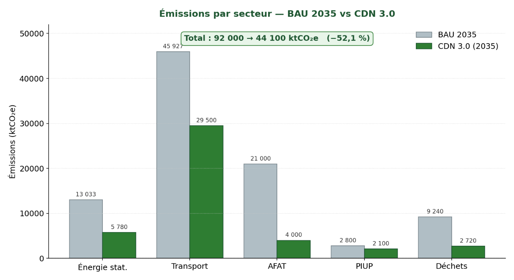
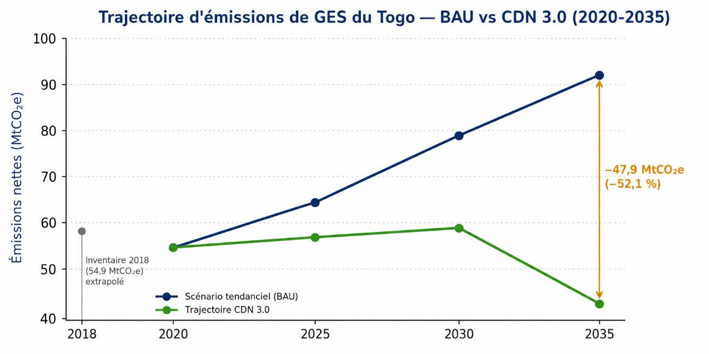
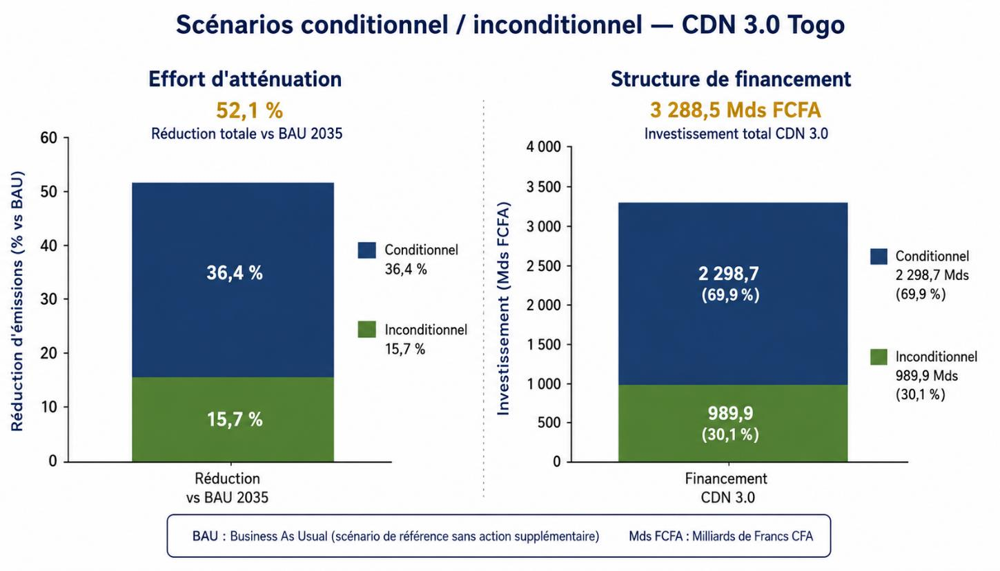
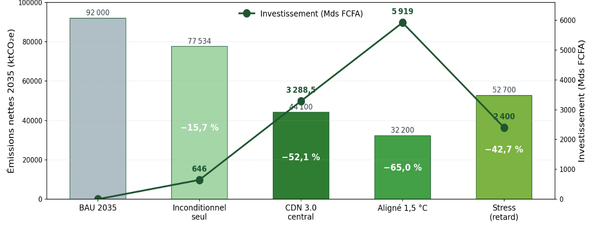
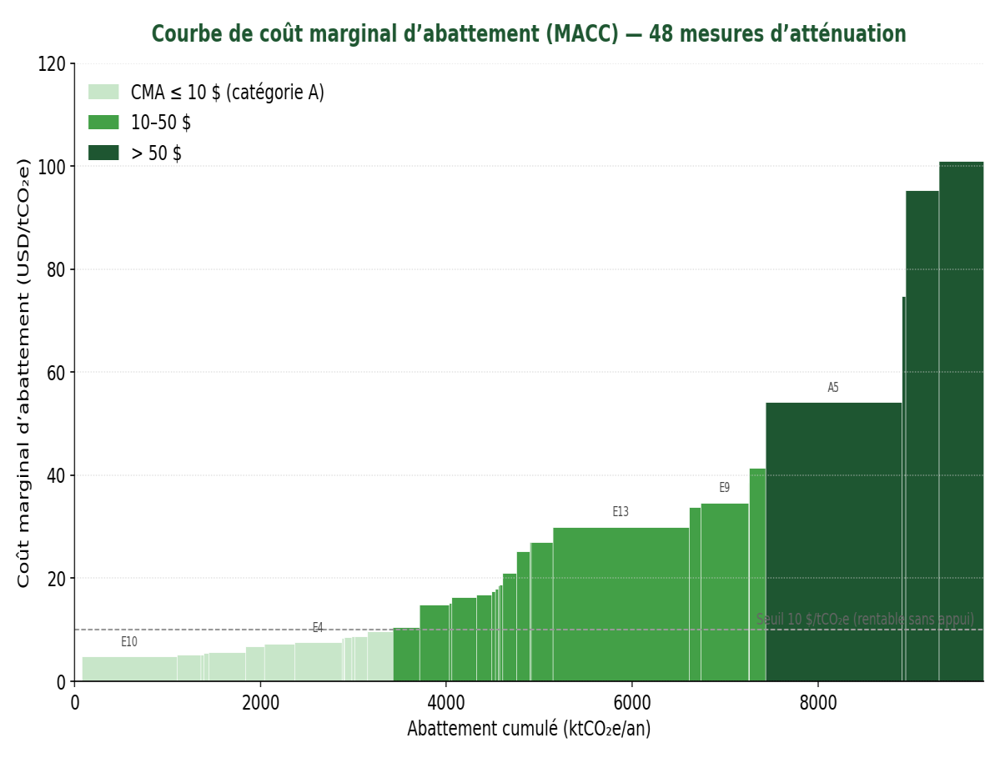
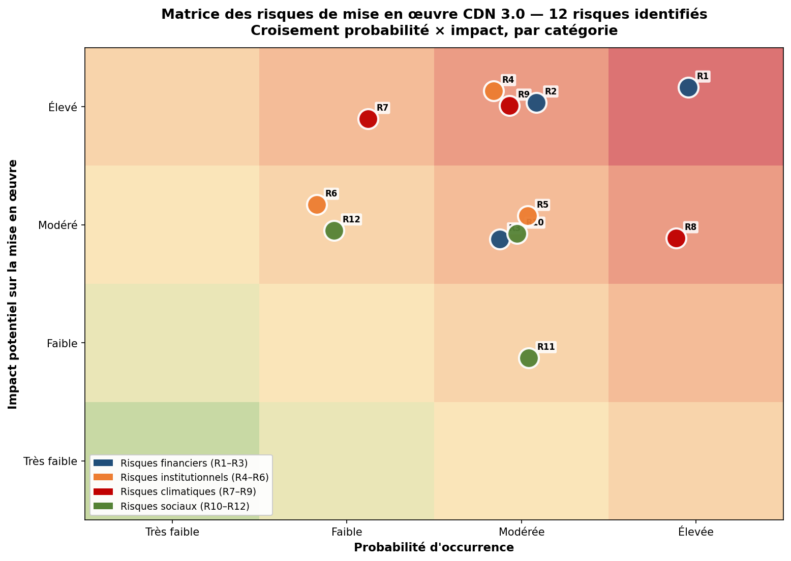
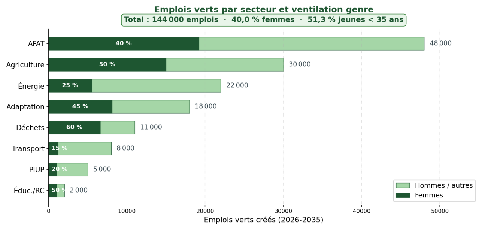
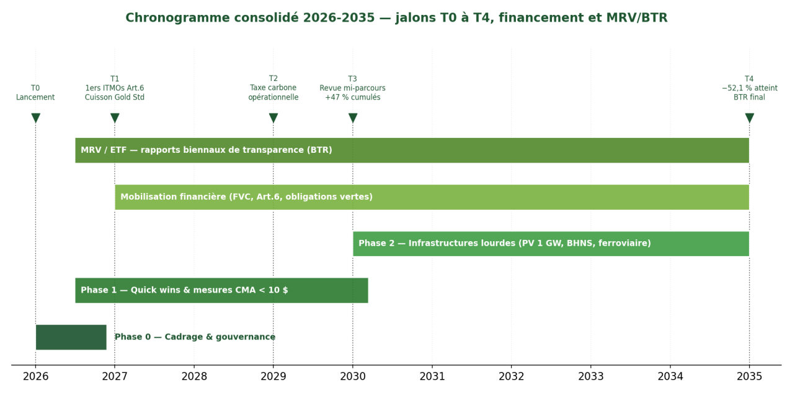

|
Abbreviation |
Meaning / Definition |
|
4CN |
Fourth National Communication of Togo on climate change |
|
5CN |
Fifth National Communication of Togo on climate change |
|
AFAT / UTCATF |
Agriculture, Forestry and Other Land Use |
|
AFD |
French Development Agency |
|
AGCF |
Africa Green Cities Fund / LEUT-AGCF Concept Note |
|
AMU |
Universal Health Insurance |
|
ANAMET |
National Meteorological Agency |
|
ANGE |
National Environmental Management Agency |
|
ANPC |
National Civil Protection Agency |
|
ARSE |
Electricity Sector Regulatory Authority |
|
AT2ER |
Togolese Agency for Rural Electrification and Renewable Energies |
|
AfDB / BAD |
African Development Bank |
|
Art.13 Paris Agreement |
Article 13 of the Paris Agreement |
|
Art.6 Paris Agreement |
Article 6 of the Paris Agreement |
|
BAU |
Business as usual — reference scenario (projection of emissions without new measures) |
|
BCEAO |
Central Bank of West African States |
|
BESS |
Battery Energy Storage System |
|
BHNS |
Bus rapid transit |
|
BM |
World Bank |
|
BNEF |
Bloomberg New Energy Finance |
|
BOAD |
West African Development Bank |
|
BSG |
Gender-responsive budgeting |
|
BTR |
Biennial Transparency Report (Article 13 ETF of the Paris Agreement) |
|
BUR |
Biennial Update Report |
|
C-PIMA |
Climate-Public Investment Management Assessment (IMF, 2024) |
|
CBIT |
Capacity Building Initiative for Transparency |
|
CCDR |
Country Climate and Development Report (World Bank) |
|
CCNUCC |
United Nations Framework Convention on Climate Change |
|
CDB |
Convention on Biological Diversity |
|
CDM / MDP |
Clean Development Mechanism |
|
CDN / NDC |
Nationally determined contribution |
|
CEDEAO |
Economic Community of West African States |
|
CEET |
Togolese Electric Power Company |
|
CET |
Sanitary landfill site |
|
CIDPH |
International Convention on the Rights of Persons with Disabilities (United Nations, 2006) |
|
CIMMYT |
International Maize and Wheat Improvement Center |
|
CMA |
Marginal abatement cost |
|
CO₂ e / ktCO₂ e |
CO₂ equivalent / kilotonnes of CO₂ equivalent |
|
CPES |
Presidential Strategic Execution Unit |
|
CTF |
Clean Technology Fund |
|
Cornell |
Cornell University |
|
DAGL |
Autonomous District of Greater Lomé |
|
DPBEP |
Multi-annual budgetary and economic programming document 2026-2028 |
|
EBID |
ECOWAS Bank for Investment and Development (accredited to the GCF) |
|
EDGE |
Excellence in Design for Greater Efficiencies |
|
EHCVM |
Harmonised survey on household living conditions |
|
ESCO |
Energy Service Company |
|
ESG |
Environmental, Social and Governance criteria |
|
ESMAP |
Energy Sector Management Assistance Program |
|
ETF |
Enhanced Transparency Framework |
|
EX-ACT |
Ex-Ante Carbon-balance Tool (FAO ex ante carbon balance tool) |
|
FA |
Adaptation Fund |
|
FAO |
Food and Agriculture Organization |
|
FAT |
Forestry and other land use |
|
FCFA / XOF |
CFA franc (WAEMU); fixed parity 1 EUR = 655,957 FCFA; working rate applied 550 FCFA/USD |
|
FEC |
Extended Credit Facility (IMF programme; 42-month arrangement, March 2024, ≈ 390 M USD) |
|
FIDA |
International Fund for Agricultural Development |
|
FMI |
International Monetary Fund |
|
FNFI |
National Inclusive Finance Fund |
|
FRLD/FPP |
Fund for responding to loss and damage |
|
FVC / GCF |
Green Climate Fund |
|
FVT |
Togo Green Fund (national one-stop shop for climate finance, decree of 6 May 2026) |
|
GACMO |
GHG Abatement Cost Model (UNDP/CCAP/UNEP-CCC) |
|
GBF |
Kunming-Montréal Global Biodiversity Framework (CBD COP15) |
|
GEF / FEM |
Global Environment Facility |
|
GES |
Greenhouse gases |
|
GGA |
Global Goal on Adaptation (Article 7 of the Paris Agreement, Decision 3/CMA.5) |
|
GGGI |
Global Green Growth Institute |
|
GIEC |
Intergovernmental Panel on Climate Change (IPCC) |
|
GIRE |
Integrated water resources management |
|
GIS |
Gender and social inclusion |
|
GIZ |
German development cooperation (Deutsche Gesellschaft für Internationale Zusammenarbeit) |
|
GPL |
Liquefied petroleum gas |
|
H2 |
Hydrogen |
|
HFC |
Hydrofluorocarbons |
|
ICAT |
Initiative for Climate Action Transparency |
|
ICRAF |
World Agroforestry Centre |
|
ICTU |
Information for clarity, transparency and understanding (Paris Agreement, Art. 4.8; decision 4/CMA.1) |
|
IDA |
International Development Association (World Bank, IDA-21) |
|
IEA |
International Energy Agency |
|
IFC |
International Finance Corporation |
|
ILRI |
International Livestock Research Institute |
|
INAM |
National Health Insurance Institute |
|
INSEED |
National Institute of Statistics and Economic and Demographic Studies |
|
IRENA |
International Renewable Energy Agency |
|
ITDP |
Institute for Transportation and Development Policy |
|
ITMO |
Internationally Transferred Mitigation Outcomes (Article 6.2) |
|
IUCN / UICN |
International Union for Conservation of Nature (headquarters: Gland, Switzerland) |
|
JICA |
Japan International Cooperation Agency |
|
LDCF |
Least Developed Countries Fund |
|
LEAP |
Long-range Energy Alternatives Planning system (SEI Stockholm) |
|
LEUT |
Low-Emission Urban Transport (LEUT-AGCF Concept Note, EBID) |
|
LOLF |
Organic Law on Finance Laws (WAEMU Directive No. 06/2009/CM/WAEMU; Togolese law No. 2014-013) |
|
LT-LEDS |
Long-Term Low Emissions Development Strategy 2025-2060 (November 2025) |
|
MACC |
Marginal Abatement Cost Curve |
|
MAPRASA |
Ministry of Agriculture, Fisheries, Animal Resources and Food Sovereignty |
|
MCDA |
Multi-Criteria Decision Analysis |
|
MECS |
Modern Energy Cooking Services |
|
MERF |
Ministry of Environment and Forest Resources — abbreviated / former designation of the MERFPCCC, used in citations of dated sources |
|
MERFPCCC |
Ministry of Environment, Forest Resources, Coastal Protection and Climate Change |
|
MFB |
Ministry of Finance and Budget |
|
MIFA |
Agricultural financing incentive mechanism |
|
MITAR |
Ministry of Infrastructure, Air Transport and Reforms |
|
MPG |
Modalities, Procedures and Guidelines (Article 13) |
|
MRV |
Measurement, Reporting and Verification |
|
NCQG |
New Collective Quantified Goal (COP29, Baku 2024) |
|
ND-GAIN |
Climate vulnerability index of the Notre Dame Global Adaptation Initiative |
|
NDA |
National Designated Authority (GCF national designated authority) |
|
OECD-DAC |
Development Assistance Committee of the OECD (Rio + gender markers) |
|
ODD |
Sustainable Development Goals (UN 2030 Agenda) |
|
ODEF |
Office for Forest Development and Exploitation |
|
OIT / ILO |
International Labour Organization (Just Transition Guidelines) |
|
OMS / WHO |
World Health Organization |
|
ONU-Habitat |
United Nations Human Settlements Programme |
|
ONUDI |
United Nations Industrial Development Organization |
|
OTR |
Togolese Revenue Office |
|
PA2RCM |
Programme for anticipating and responding to major climate risks |
|
PACM |
Paris Agreement Crediting Mechanism (Article 6.4) |
|
PASH-MUT |
Urban and multi-town water supply and water security project |
|
PEUL |
Lomé urban environment project |
|
PIB |
Gross domestic product |
|
PIP |
Public investment programme |
|
PIUP |
Industrial processes and product use |
|
PMA / LDC |
Least developed countries |
|
PMFE |
Low-emission transport financing strategy (August 2025) |
|
PMH |
Hand pump |
|
PMUD |
Sustainable Urban Mobility Plan for Greater Lomé (SYSTRA/AFD, Oct. 2024) |
|
PNA |
National adaptation plan |
|
PNACC |
National climate change adaptation plan (2026-2030) |
|
PND |
National development plan |
|
PNE |
National energy compact for the Togolese Republic |
|
PNEEG |
National policy for gender equity and equality |
|
PNIASA |
National agricultural investment and food security programme |
|
PNR |
National reforestation programme |
|
PNUD |
United Nations Development Programme |
|
PNUE |
United Nations Environment Programme |
|
PPP |
Public-private partnership |
|
PRA |
Regional adaptation plans 2024 |
|
PRG |
Global warming potential |
|
PROMAT |
Programme for the Modernisation of Agriculture in Togo |
|
PSH |
Person(s) with disabilities (ref. CDPH/CIDPH; Togo disability law) |
|
PTF |
Technical and financial partners |
|
PV |
Photovoltaic (solar) |
|
QCNCC |
Fourth National Communication on Climate Change |
|
RCB |
Cost-benefit ratio |
|
REDD+ |
Reducing emissions from deforestation and forest degradation |
|
RGPH-5 |
General population and housing census (5th edition, 2022) |
|
RRC |
Disaster risk reduction |
|
SADD |
Data disaggregated by sex, age and disability |
|
SAP |
Early warning system |
|
SAU |
Utilised agricultural area |
|
SDAI |
Master plan for land development and irrigation 2023-2040 |
|
SEEA-EA |
System of Environmental-Economic Accounting — Ecosystem Accounting (UN 2021) |
|
SEI |
Stockholm Environment Institute |
|
SIE |
Energy information system |
|
SMFC-GIS |
Strategy for mobilising gender- and social-inclusion-responsive climate finance |
|
SNV |
Netherlands Development Organisation |
|
SOTRAL |
Lomé Transport Company |
|
SPANB |
National biodiversity strategy and action plan 2021-2030 |
|
SRI |
System of rice intensification |
|
TEEB |
The Economics of Ecosystems and Biodiversity |
|
TNFD |
Taskforce on Nature-related Financial Disclosures |
|
U4E |
United for Efficiency |
|
UE |
European Union |
|
UEMOA |
West African Economic and Monetary Union |
|
UK |
United Kingdom |
|
UNCCD |
United Nations Convention to Combat Desertification |
|
UNEP-CCC |
UNEP Copenhagen Climate Centre |
|
UONGTO |
Union of NGOs of Togo |
|
VAN |
Net present value |
|
VE |
Electric Vehicles |
|
VSL |
Value of Statistical Life |
|
WACA |
West Africa Coastal Areas management program (World Bank) |
|
ZAAP |
Planned agricultural development zones (and ZAPB — developed lowlands) |
|
ZAPB |
Planned lowland development zones (developed lowlands) |
The NDC 3.0 mobilises a portfolio of 113 measures, of which 48 are mitigation measures and 65 adaptation measures. Total investment amounts to 3 288,5 billion FCFA (5 979 M USD at a rate of 550 FCFA/USD)1, i.e. 1 760,5 billion FCFA for mitigation (48 measures, including the cross-cutting MRV/green taxation/Article 6 components), 1 511 billion FCFA for adaptation (65 measures) and 17 billion FCFA for education, research and capacity building. The ambition is raised to a 52,1 % reduction in greenhouse gas emissions compared with the business-as-usual scenario by 2035, bringing national emissions down to 44 100 ktCO₂e, i.e. 47 900 ktCO₂e avoided, and to a consolidation of national resilience in the face of annual climate losses estimated at 4,5 % of GDP by 2050.2
The NDC 3.0 forms part of the LT-LEDS 2060, whose 2010-2060 low-carbon trajectory incorporates the previous NDC cycles, the PNA and the PRA, the SPANB 2021-2030 and Togo's Sustainable Financing Framework. It is aligned with the government roadmap 2026-2031 and the DPBEP 2026-2028.
The mitigation ambition is built around two sectoral pillars: (i) a 40,2 % reduction in the energy-transport sector (58,96 MtCO₂ e in 2035, i.e. 64 % of the national total with transport included) through the decarbonisation of the electricity mix (target: 42,9 % renewable energy in 2035, compared with around 20 % in 2024 according to the SIE 2025 balance) and the transition of urban mobility (BHNS in Greater Lomé, conversion of the 50 000 zémidjans to e-motorcycles through the LEUT/AGCF Concept Note of 146,2 M USD led by EBID, an entity accredited to the GCF); (ii) a six-fold increase in sequestration to 10,5 MtCO₂ e by 2035 in the AFAT sector (forestry and other land use, agriculture being accounted for separately and covered by a dedicated line in Table 1), through the reforestation of 1 million hectares, agroforestry and mangrove restoration, as well as clean cooking targeting an additional 500 000 households, reducing the exposure of 4,3 million people to household air pollution.
The table below presents the sectoral mitigation projections of the NDC 3.0, derived from GACMO v2.3 modelling, comparing the BAU 2035 scenario with net emissions after implementation of the 48 mitigation measures. Sign convention: the sign "–" indicates a reduction (or a net sink in the AFAT BAU column), the sign "+" indicates an increase, and values without a sign are positive.
|
Sector |
BAU 2035 (ktCO₂ e) |
NDC 3.0 reductions |
Net emissions 2035 |
% reduction |
|
Energy (industry + residential) |
13 033 |
–7 253 |
5 780 |
–56 % |
|
Transport |
45 927 |
–16 427 |
29 500 |
–36 % |
|
Agriculture |
23 000 |
–6 500 |
16 500 |
–28 % |
|
AFAT (net sink) |
–2 000 |
–10 500 (sink) |
–12 500 |
×6 capacity |
|
Waste |
9 240 |
–6 520 |
2 720 |
–71 % |
|
PIUP |
2 800 |
–700 |
2 100 |
–25 % |
|
NATIONAL TOTAL |
92 000 |
–47 900 |
44 100 |
–52,1 % |
Source: GACMO v2.3 modelling and MACC analysis, NDC 3.0 mitigation scenario.

The NDC 3.0 generates economic value that extends well beyond its climate scope. The analysis conducted in accordance with the methodology described in Chapter 17 of the Sixth Assessment Report of the IPCC (AR6 WG III) and with SEEA-EA ecosystem accounting (United Nations, 2021) establishes that the portfolio will activate 11 dimensions of co-benefits across its 113 measures.
According to TEEB/SEEA-EA estimates, each CFA franc invested generates between 5,2 and 8,5 FCFA of extended economic value over 35 years, a ratio higher than the international benchmarks for countries with comparable human development (Rwanda 6,2; Bangladesh 7,8; Kenya 5,5; Senegal 5,9).
The cost-benefit analysis discounted over 35 years confirms the socio-economic profitability of the portfolio: an overall net present value of 10 279 billion FCFA (18,7 billion USD) at a 10 % rate, with a sensitivity range of 7 052 to 17 453 billion FCFA depending on the discount rate (5 to 15 %), an internal rate of return of 37 %, a discounted payback period of 3,3 years, and an overall cost-benefit ratio of 3,86 (2,55 for adaptation alone and 5,52 for mitigation alone).
The critical profitability threshold, that is, the point at which the net present value falls to zero, is reached only at a discount rate of 37 %, equal to the portfolio's internal rate of return and far beyond both international conventions (10 %) and the marginal cost of capital in Togo, which confirms the structural economic robustness of the investment decision. The cost-benefit ratio, for its part, remains stable at 3,86 whatever rate is applied, since benefits and costs share the same temporal discounting profile.
The governance of the NDC 3.0 rests on an inter-ministerial architecture coordinated by the MERFPCCC. The ESG Sustainable Financing Framework of the Togolese Republic (October 2024) and the PIP Procedures Manual (revised in February 2026) anchor the NDC 3.0 in national budget planning. The Green Fund of Togo, "Togo Green Fund" (TGF), established by decree in the Council of Ministers on 6 May 2026 through the transformation of the National Environment Fund, constitutes the national one-stop shop for climate finance; it ensures the mobilisation of public and private resources, centralisation and fiduciary management to donor standards, allocation to high-impact projects, and monitoring and evaluation. In its governance the TGF will bring together the Ministry of Budget and Finance, the Ministry of Environment, Forest Resources, Coastal Protection and Climate Change, the Ministry of Development Planning and the PTF in order to validate the pipeline of bankable projects and operationalise the 14 financial instruments of the SMFC-GIS.
An eleven-component MRV system ensures the transparency and accountability of implementation, in full compliance with the Enhanced Transparency Framework of the Paris Agreement. Togo's first Biennial Transparency Report (BTR1) is expected in 2026. The envelope dedicated to monitoring amounts to 12,4 billion FCFA (≈ 22,6 M USD) over the decade. The technical details (GHG inventory, SADD indicators, MRV platform, Article 6 registry) are set out in §8.7. In 2025 Togo adopted a legal framework for carbon markets (law No. 2025-006) and is undertaking, with the support of GGGI, a capacity-building (readiness) process under Article 6 of the Paris Agreement, on the basis of an exclusively voluntary commitment at this stage. A potential project pipeline is being structured, with an indicative cumulative potential of the order of 4 900 ktCO₂ /year of monetisable reductions — an estimate that remains to be refined, as the sectoral breakdown has not yet been settled. The technical modalities and the price ranges by sector are detailed in §8.6. The envelope dedicated to education, research and capacity building amounts to 17 billion FCFA (≈ 30,9 M USD).
Three cross-cutting dimensions further structure the portfolio as a whole. Gender and social inclusion (GIS): 986,6 billion FCFA, i.e. close to 30 % of the total cost, are accompanied by OECD-DAC markers measure by measure and translated into twelve quantified commitments by 2035. Disaster risk reduction is addressed over the full cycle of prevention, preparedness, response and recovery and is anchored in the matrix of twelve climate risks. Prevention includes multi-hazard early warning, deployed in the 117 communes, and incorporates climate-sensitive urban planning. Finally, insecurity in the Savanes region is recognised as a cross-cutting aggravating factor, taken into account through the resilience measures for the north and examined in greater depth in the regional adaptation plans (§3.3, §5.1, §6.6).
Convention: unless otherwise stated, all monetary values are expressed in billions of constant 2024 CFA francs (billion FCFA); United States dollar equivalents are calculated at the BCEAO reference rate of 550 FCFA/USD (May 2026). The dashboard below presents the quantitative summary of the integrated climate-nature portfolio of the NDC 3.0. The sixteen indicators selected, organised in four thematic rows, constitute the key reference figures of the document: overall volume of the portfolio, climate performance and cost-benefit, distribution of co-benefits, and levers for social inclusion and financial mobilisation.
|
3 288,5 billion FCFA total invest. (5 979 M USD) |
113 measures (48 mit. + 65 adap.) |
10 sectors + cross-cutting |
96 % of measures with co-benefits |
|
52,1 % GHG reduction vs BAU 2035 |
2,55 adaptation RCB |
3,86 overall RCB3 |
5,52 RCB for mitigation alone |
|
62 gender measures (55 %) |
41 biodiv. measures (36 %) |
58 health measures (51 %) |
38 resilience measures (34 %) |
|
144 000 green jobs created |
986,6 billion FCFA GIS budget (30 % BSG) |
420 billion FCFA damage avoided/year |
2 045 billion FCFA financial instruments (62,2 %) |
Source: Authors' synthesis based on the 4CN/BUR2 GHG inventories (MERFPCCC, 2024), GACMO v2.3 modelling and the NDC 3.0 co-benefits analysis.
The NDC 3.0 portfolio mobilises 3 288,5 billion FCFA (5 979 M USD), which represents the equivalent of 12,5 % of 2024 gross domestic product cumulated over the coming decade. The effort is divided into an unconditional share of 30,1 % (national financing from own resources and domestic instruments) and a conditional share of 69,9 % (international support from technical and financial partners). The portfolio covers directly or indirectly around 12 million beneficiaries and achieves a direct cost-benefit ratio of 3,864. Three levers stand out: a residual financing gap of 309,6 billion FCFA on the adaptation component (20,5 % of adaptation needs), targeted at the dedicated windows (Adaptation Fund, Least Developed Countries Fund, adaptation window of the Green Climate Fund), 144 000 green jobs included in the ILO just transition, and 986,6 billion FCFA of GIS commitments backed by gender-responsive budgeting (30 % of the portfolio), placing Togo among the African countries most committed to gender-responsive climate finance. This inclusion is understood in a broad sense: beyond gender and youth, persons with disabilities represent 10,73 % of the population (RGPH-5 2022) and are taken into account in a cross-cutting manner, through the universal design of climate infrastructure (CIDPH standard), accessible early warning systems and the disaggregation of monitoring by sex, age and disability (SADD).
Climate change today constitutes one of the greatest challenges to sustainable development, particularly for developing countries whose economies remain heavily dependent on natural resources and climate-sensitive sectors. Despite its low contribution to global greenhouse gas emissions, estimated at less than 0,04 %, Togo is among the countries most vulnerable to the effects of climate disruption. Ranked 129th in the world according to the ND-GAIN climate vulnerability index (score 42,7, 2024 edition)5, the country faces an intensification of floods, droughts, coastal erosion, heatwaves and land degradation, with direct impacts on agriculture, food security, water resources, infrastructure and people's livelihoods.
In this context, Togo reaffirms its commitment to global climate action through the preparation of its third Nationally Determined Contribution (NDC 3.0), in accordance with the provisions of the Paris Agreement ratified in 2017. This new generation of NDC forms part of a dynamic of progressive enhancement of national climate ambition and reflects the country's determination to reconcile economic growth, climate resilience and the transition towards low-carbon development. It also constitutes a strategic instrument for operationalising the national long-term low-emission and climate-resilient development strategy (LT-LEDS 2060), the National Adaptation Plan, and Togo's commitments under the Sustainable Development Goals and the Kunming-Montréal Global Biodiversity Framework.
The NDC 3.0 covers the period 2026-2035 and carries an enhanced ambition to reduce greenhouse gas emissions by 52,1 % compared with the business-as-usual (BAU) scenario by 2035. It is based on an integrated portfolio of 113 measures, of which 48 are mitigation measures and 65 adaptation measures, covering the country's main emitting and vulnerable sectors: energy, transport, agriculture, forestry and land use, waste, industrial processes, health and human settlements, water resources and the coastal zone. This ambition is supported by an investment estimated at 3 288,5 billion FCFA and is accompanied by significant co-benefits in terms of green job creation, poverty reduction, improved public health, energy security and biodiversity conservation.
Beyond its climate ambition, the NDC 3.0 reflects a vision of structural transformation of the Togolese economy. It gives a central place to social inclusion, gender, youth, climate governance and financial innovation, in particular through the development of carbon markets, green finance and blended finance mechanisms. It also strengthens monitoring, reporting and transparency arrangements in order to ensure better accountability in the implementation of national commitments.
The NDC 3.0 is therefore intended to be at once a strategic, operational and mobilising framework, designed to steer public and private investment towards a resilient, inclusive and sustainable development pathway. It expresses Togo's willingness to contribute actively to the global effort to combat climate change while responding to national development priorities and to the population's aspirations for a safer and more prosperous future.
Unless otherwise stated, the data, information and progress reported in this NDC 3.0 are those available as at 30 May 2026, the cut-off date for the information in the document. Developments occurring after that date will be taken into account in subsequent revisions, in accordance with the three-yearly revision clause provided for in this contribution.
Located between latitudes 6° and 11° North, Togo is a landlocked West African country with an area of 56 600 km², opening to the south onto the Gulf of Guinea along a maritime frontage of about 50 km. The territory extends nearly 600 km from north to south, which gives it great ecological and climatic diversity. It is divided into five agro-ecological zones, ranging from the humid coastal areas in the south to the drier Sudanian savannah areas in the north. The relief is dominated by the Togo mountain range, which crosses the country from south-west to north-east and influences local rainfall patterns.
A country of medium human development since 2022 (HDI 0,571, period 2023-2024)6, Togo has an economy in sustained growth, with a nominal GDP of 6 919,1 Mds FCFA in 2025 and real growth of 6,3 %/year, but it remains ranked 129th in the ND-GAIN climate vulnerability index (score 42,7, 2024) and accounts for less than 0,04 % of global GHG emissions. This asymmetry between high vulnerability and marginal responsibility lies at the heart of the philosophy of Togo's NDC 3.0.
The reference macroeconomic framework is the Multi-Year Budgetary and Economic Programming Document (DPBEP 2026-2028), prepared by the Ministry of Budget and Finance in accordance with Article 52 of the 2014 Organic Law on Finance Laws (WAEMU Directive No. 06/2009/CM/WAEMU), transposed in Togo by Organic Law No. 2014- 013. This official document projects average annual growth of 6,5 % over the period, with the primary sector at +5,6 %/year, the secondary sector at +6,7 % (driven by manufacturing, electricity generation +16,7 % in 2024, construction and oil refining) and the tertiary sector at +6,6 % (transport, trade, TIC). Togo compares favourably within the WAEMU area (average 6,3 %) and ECOWAS (4,7 %), which strengthens the credibility of the macroeconomic projections underlying the NDC scenarios.
|
Macroeconomic indicator |
2022 |
2023 |
2024 |
2025 |
Source |
|
Nominal GDP (Mds FCFA) |
5 393 |
5 898 |
6 454 |
6 919 |
INSEED / DPBEP |
|
Real growth (%) |
6,3 |
6,2 |
6,5 |
6,3 |
DPBEP 2026- 2028 |
|
Inflation (% IPC) |
7,6 |
5,3 |
2,9 |
2,0 (est.) |
INSEED |
|
Budget deficit (% GDP) |
-7,5 |
-5,4 |
-4,2 |
-3,5 (est.) |
MFB/DGBF |
|
Public debt (% GDP) |
— |
— |
69,3 |
67,5 (est.) |
MFB/DDPF |
|
Tax burden (% GDP) |
12,8 |
13,5 |
13,9 |
14,4 |
DPBEP |
Source: INSEED (National accounts 2020-2025); DPBEP 2026-2028, Ministry of Finance and Budget (November 2025); World Bank (Togo Country Climate and Development Report 2024).
Fiscal space is constrained: the debt-to-GDP ratio of 69,3 % in 2024 is close to the WAEMU community ceiling of 70 %, and the FEC programme (the IMF Extended Credit Facility, a 42-month arrangement approved in March 2024 for an amount of 293,6 M SDR, i.e. ≈ 390 M USD / 224 Mds FCFA) imposes a fiscal consolidation trajectory. Nevertheless, the DPBEP projects positive budgetary savings of +512,9 Mds FCFA in 2028 (+6,2 % of GDP) and capital expenditure of 761,5 Mds FCFA in 2028, freeing up room for unconditional climate investment. A decisive step forward: the DPBEP explicitly provides for “the introduction of a carbon tax on industries that emit large quantities of GHG”, the first carbon pricing instrument envisaged by Togo, directly linked to the NDC 3.0 objectives.
Budget revenue would rise from 1 615,4 Mds FCFA in 2026 to 1 791,0 Mds FCFA in 2028, an average increase of 12,5 %. The tax burden is projected to rise from 14,4 % of GDP in 2026 to 15,0 % in 2028, supported by the Revenue Mobilisation Plan (PMR) 2025- 2026, whose new measures would generate more than 35 Mds FCFA in additional revenue in 2026. The outstanding stock of total public debt would rise from 4 875,6 Mds FCFA (68,5 % of GDP) in 2026 to 5 367,1 billion (64,8 %) in 2028. The Medium-Term Debt Strategy (SDMT) 2024-2026 aims to rebalance the portfolio to 50 % domestic debt and 50 % external debt by 2028, with priority given to concessional borrowing.
The calibration of the carbon tax announced in the DPBEP will have to be based on: (i) the sectoral emission factors from the national GHG inventory (4CN/2BUR and 5CN/BTR1) in order to define the taxable base in tCO₂ e; (ii) an initial rate compatible with the competitiveness of exposed sectors (estimate by Ferdi/Bouterige & Rota-Graziosi 2024: 3 000 to 5 000 FCFA/tCO₂ e, i.e. 5 to 8 USD/tCO₂ e); (iii) a gradual phase-in trajectory up to 10 000 FCFA/tCO₂ e by 2030. The potential annual yield, based on PIUP emissions estimated at 0,95 MtCO₂ e in 2035 (yield calculated in relation to the emissions of the targeted sector), would be of the order of 18 to 30 Mds FCFA, to be allocated in part to financing the unconditional measures of the NDC 3.0.
The Low-Emission Transport Financial Strategy (PMFE, August 2025) complements this arrangement by proposing a financing architecture of 2 202,6 M USD (≈ 1 211 Mds FCFA) for the decarbonisation of the transport sector by 2030 (target −20,51 %), structured according to a breakdown of 20 % public / 40 % concessional-climate / 35 % private / 5 % other. The LEUT (Low-Emission Urban Transport) Concept Note led by the ECOWAS Bank for Investment and Development (EBID, GCF accredited entity) targets an envelope of 146,2 M USD, of which 50,6 M USD from GCF, for a reduction of 620 ktCO₂ over 15 years (−89 % vs BAU in the Lomé area), directly benefiting 1,5 million inhabitants. This operation is the first structuring project of the NDC 3.0 on the transport component and directly supports measure T5 (conversion of zémidjans to e-motorcycles).
Togo draws on the national civil protection policy and the national disaster risk reduction strategy (SN-RRC), in line with the Sendai Framework.
Togo ratified the UNFCCC on 8 March 1995, the Kyoto Protocol on 2 July 2004 and the Paris Agreement on 28 June 2017. It is also a Party to the Rio Conventions on biodiversity (CBD) and on combating desertification (UNCCD). The Kunming-Montreal Global Biodiversity Framework (GBF, CBD COP15, December 2022) sets 30×30 conservation and restoration targets that are directly aligned with the AFAT measures of the NDC 3.0. The country is also committed to implementing the 17 Sustainable Development Goals (SDG) adopted under the 2030 Agenda.
With regard to adaptation, Togo prepared Regional Adaptation Plans (PRA) for the five regions in 2024, and the National Climate Change Adaptation Plan (PNACC 2026-2030) was being finalised as at the data cut-off date of this document (30 May 2026). The Long-Term Low-Emission and Climate-Resilient Development Strategy (LT-LEDS 2060), adopted in November 2025, constitutes the long-term strategic framework of which the NDC 3.0 is the first ten-year operational milestone; its 2010-2060 low-carbon trajectory incorporates the earlier NDC cycles, the NDC 3.0 resetting the intermediate point at the 2035 horizon. The National Biodiversity Strategy and Action Plan (SPANB 2021-2030) sets out five specific objectives, three strategic pillars and twenty-five national targets aligned with the 23 targets of the Kunming-Montreal global framework. Financing needs for biodiversity conservation in Togo amount to 136,345 Mds FCFA over ten years.
The first Global Stocktake (GST1, COP28, Dubai, December 2023) documented a persistent adaptation finance gap in the least developed countries, estimated at 215-387 Mds USD/year by 2030 (UNEP, Adaptation Gap Report 2024). The New Collective Quantified Goal (NCQG, COP29, Baku, November 2024) sets 300 Mds USD/year by 2035. Togo's NDC 3.0 is designed to access these new envelopes, in particular through the Green Climate Fund (GCF, 2024-2027 replenishment of 12,8 Mds USD, of which about 35 % allocated to Africa), the Adaptation Fund, the Least Developed Countries Fund (LDCF) and the new Loss and Damage Fund operationalised in 2024 (pledged contributions of approximately 700 million USD).
The evaluation of the NDC 2.0, carried out in 2025 with the support of the NDC Partnership and UNDP, made it possible to identify significant progress and structural challenges to be addressed in the NDC 3.0. Of the 129 projects/measures included in the NDC 2.0, only 52 projects were reported on in the mid-term evaluation, of which 46 had actually started or been completed between 2021 and 2024. The average physical implementation rate across all sectors stands at 55,59 %, and the financial rate at 54,22 %, with significant disparities by sector.
In terms of gender, the average share of female beneficiaries across the 52 projects evaluated is 49,8 %, a notable but essentially self-declared quantitative indicator. Data disaggregated by age, sex and disability (SADD) remained incomplete, complaint-handling mechanisms were weakly systematised, and budget lines sensitive to gender and social inclusion were dispersed without a quantified framework. The final evaluation carried out in May 2026 confirms these trends: 55 projects effectively under way at end-2024 out of the 129 included, a consolidated physical implementation rate of 56,1 % and a financial rate of 54,9 %. The NDC 3.0 systematically corrects these methodological and operational shortcomings. The table below compares the targets set out in the NDC 2.0 (2021) and in the NDC 3.0 (2026); the “Progress” column expresses relative ambition (“+” = increase, “×” = multiplier, “–” = reduced recourse to an instrument).
|
Criterion |
NDC 2.0 (2021) |
NDC 3.0 (2026) |
Progress |
|
Reduction target |
–50,57 % vs BAU 2030 |
–52,1 % vs BAU 2035 |
Increase (+1,5 pt on a higher BAU) — 47 900 Gg CO₂e avoided in 2035 |
|
Unconditional share |
22 % |
30,1 % |
+8,1 percentage points |
|
Sectoral structure of the effort |
AFAT leading unconditional contributor (more than half of the effort) |
Transport leading source of reductions (34 % of reductions), AFAT second (22 % — sinks ×6) |
Rebalancing substantiated by the 2018 inventory and vehicle fleet data (OTR, SIE) |
|
Number of mitigation measures |
28 |
48 |
+71 % (20 new measures (several of which are gender-sensitive, see GIS framework)) |
|
Mitigation cost (Mds FCFA) |
≈1 485 (2 700 M USD) |
~1 760,5 |
×1,19 (aligned with LT-LEDS) |
|
Adaptation cost (Mds FCFA) |
≈1 528 (2 779 M USD) |
1 511 Mds FCFA |
Comparable volume (×0,99) — first costing broken down measure by measure (65 measures, 10 sectors) |
|
Total investment (Mds) |
≈3 013 (5 479 M USD)7 |
3 288,5 |
×1,09 |
|
Art. 6 carbon markets |
Not included |
50–200 M USD/year (potential, not budgeted) |
New — legal framework adopted |
|
Gender and inclusion |
Qualitative target (not quantified) |
30,0 % BSG |
Quantified framework, 12 gender-sensitive commitments by 2035 |
|
Financial instruments |
3 conventional |
14 innovative |
GCF, Art. 6, bonds, PPP, ESCO |
|
Cost methodology |
Estimates |
GACMO v2.3 + MACC |
Standardised CMA, internationally comparable |
Source: updated NDC 2.0 of Togo (MERF, 2021); evaluation of the implementation of the NDC 2.0 (MERF, 2025); GACMO v2.3 modelling and NDC 3.0 adaptation analysis
Overall climate investment increases by about 9 % compared with the costed needs of the NDC 2.0 (5 479 M USD, Table 19 of the revised NDC), and is now underpinned by a measure-by-measure costing, while the unconditional share increases by 8,1 points, two strong signals of national ownership addressed to the international community and to climate finance mechanisms. The main lessons drawn for the design of the NDC 3.0 are: (i) the need for rigorous costing of measures (the NDC 2.0 did not include a sectoral cost-benefit analysis (ACB)), addressed through the adoption of the GACMO v2.3 methodology8 9; (ii) the strengthening of the unconditional share, in order to reduce dependence on external financing; (iii) the diversification of financial instruments (from 3 conventional to 14 innovative); (iv) the systematic integration of gender and social inclusion (SMFC-GIS), quantitatively absent from the NDC 2.0; (v) the establishment (currently being operationalised) of an operational MRV system with a timetable of international deliverables (BTR, CN, TER)10 endowed with 12,4 Mds FCFA.
Togo is subject to a threefold climate pressure: average warming of +0,8 to +1,2 °C between 1961 and 2018, together with a projected increase of +3,8 to +4,8 °C by 2100 under the RCP 8.5 scenario; increased rainfall variability with a 20 % rise in intensity, established using the SimCLIM modelling tool; and a sea-level rise of +11,35 cm in 2025, reaching +62 to +84 cm in 2100 under RCP 6.0/8.5. The annual cost of climate-related losses is estimated at 2-3 % of GDP as a central value (130-200 Mds FCFA), and could reach 6,1 to 12,2 % of cumulative GDP over 25 years in the absence of adaptation measures (CCDR Togo, World Bank, 2024).
The seven major climate risks identified in the Programme for Anticipating and Responding to Major Climate Risks (PA2RCM 2023-2027) are floods, extreme heat, high winds, droughts, vegetation fires, landslides and coastal erosion. The Maritime region (42 % of the national population, 90 % of GDP along 50 km of coastline) concentrates exceptional systemic vulnerability: erosion is advancing at 1,5-10 m/year on the critical Agbodrafo-Aného segments. The northern regions (Savanes, Kara) combine dependence on rainfall (98,8 % of the SAU unirrigated) with the highest agricultural vulnerability indices in the country (current agricultural vulnerability index (IA) Savanes = 0,80; projected index (IF) for 2050 = 0,83).
The cross-analysis of climate projections (QCNCC 2022, RCP 6.0 and RCP 8.5 scenarios), sectoral vulnerabilities (PRA 2024) and the macroeconomic framework (DPBEP 2026- 2028) quantifies five major hazards: (i) floods (recurrence of 2-3 years in the Maritime, Oti and Mono basins, 15-20 Mds FCFA of damage per event); (ii) droughts (rainfall deficit of −15 % in the Savanes since 2000); (iii) coastal erosion (56 km of coastline, average retreat of 1,5 m/year, up to 10 m/year locally); (iv) heatwaves (+15 days above 35 °C per decade); (v) rainfall variability (shift in the seasons of 2 to 3 weeks, intensity +20 %). The projected temperature increase (+0,73 to +4,80 °C depending on the horizon) and sea-level rise (+11,35 cm in 2025 to +62-84 cm in 2100) amplify these risks (source: L3 — Adaptation and Biodiversity, 2026).
The cross-analysis of sectoral vulnerabilities reveals systemic interconnections that amplify risks beyond the sum of individual impacts. The agricultural sector (60 % of the working population, 20 % of GDP) is structurally the most exposed: dependence on rainfed agriculture (98,8 % of the SAU, SDAI 2023-2040) combined with increased rainfall variability exposes 4,5 million rural people to chronic food insecurity. Shocks are transmitted through three channels: (i) the food channel (yield losses of 20-40 % during severe episodes → price increases → malnutrition); (ii) the water channel (increasing scarcity → conflicts of use between agriculture, drinking water and energy, drinking water access rate of 52 % in rural areas); (iii) the migration channel (land degradation → rural exodus → pressure on informal housing and on the flood-prone areas of Greater Lomé).
The coastal zone concentrates exceptional systemic vulnerability: 90 % of national GDP, the capital Lomé (2 million inhabitants), the autonomous port (75 % of customs revenue) and the Adétikopé industrial platform are located within the 50 km coastal strip. Erosion (1,5 m/year on average, 10 m/year at Agbodrafo-Aného, REEM 2024) combined with sea-level rise (+3,2 mm/year, IPCC AR6) threatens critical infrastructure. Without intervention, 40 % of coastal land would be lost by 2050 (WACA/World Bank). The programmatic responses — WACA+ phase 2 (45 Mds FCFA), mangrove restoration (blue carbon 4 tCO₂ /ha/year) — show a RCB of 4,04, among the highest in the adaptation portfolio.
The gender dimension constitutes a vulnerability multiplier: women account for 70 % of the agricultural workforce but hold only 5 % of land titles (MAPRASA Gender Plan 2024-2028). Their disproportionate exposure to climate risks (cooking with fuelwood in 86 % of households, indoor pollution affecting 4,3 million people, WHO 2023) justifies the 12 gender-sensitive commitments of the NDC 3.0 (GIS-BSG budget of 986,6 Mds FCFA, 40 % quota for women in green jobs, 30 % of the adaptation budget dedicated to programmes for women). According to the United Nations, during extreme climate disasters women and children are 14 times more likely to die than men, mainly because of limited access to information, restricted mobility and a lack of resources11. Persons with disabilities (10,73 %) of the population (RGPH-5 2022) are among the most exposed groups: they are explicitly taken into account in the targeting of beneficiaries, the accessibility of early warning systems and evacuation plans.
The diagnostic analysis of the Strategy for Mobilising Climate Finance and Social Inclusion (SMFC-GIS, 2025) identifies four structural barriers to the mobilisation of climate finance in Togo: (i) uneven access to multilateral climate funds, with Togo in the bottom third of beneficiary countries in the ECOWAS-CILSS area; (ii) a limited range of climate investment opportunities presented in bankable form; (iii) an insufficient regulatory and coordination framework for involving the private sector; (iv) limited financing for large-scale actions targeting highly vulnerable areas and populations.
In return, several emerging opportunities are to be seized, in particular: the first Togolese GCF project, SAP 048 (Strengthening the resilience of vulnerable communities in areas at high climate and disaster risk in Togo), approved in 2025 and then funded under the BOAD management agreement of 5 May 2026 (GCF grant of 15,3 Mds FCFA ≈ 27 M USD for climate services and multi-hazard early warning); the adoption of the legal framework for Article 6 of the Paris Agreement on Climate; the DPBEP incorporating the carbon tax and the C-PIMA; the PMFE transport financial strategy (August 2025, 2 202,6 M USD); the LEUT- AGCF Concept Note (146,2 M USD via EBID); and the ESG Sustainable Finance Framework (October 2024), which identifies 14 categories of eligible investments, including Programme P36 Green Mobility. To these opportunities is added Togo's LDC eligibility, confirmed for the period 2025-2030, a decisive enabler for access to concessional resources.
Beyond financing barriers, the diagnosis distinguishes five families of obstacles to implementation: (i) technical and technological obstacles, reflected in the low maturity of the utility-scale solar and storage segments, dependence on imported equipment and the shortfall in local engineering and maintenance; (ii) institutional and coordination obstacles, marked by the overlapping of mandates between MERFPCCC, MEF and the sectoral ministries, the weakness of the gender focal units and the single window for climate investment (Fonds vert Togo) created by decree of 6 May 2026 but whose implementing texts have yet to be published; (iii) human and statistical capacity obstacles, owing to the shortfall in expertise in structuring bankable projects and the fragmentation of activity data for the GHG inventory; (iv) regulatory and market obstacles, caused by the slow adoption of standards (energy efficiency, bioclimatic building code), exposure to exchange rate risk and still nascent carbon pricing; (v) social and gender obstacles, reflected in women's unequal access to land (5 % of secured titles), to credit and to climate information.
To each of these families the NDC 3.0 offers an integrated and traceable response: structuring of bankable projects through the Fonds vert Togo and the Article 6 pipeline (financing barrier); technology transfer and local content through the AT2ER calls for tenders and the EBID/BOAD partnerships (technological barrier); a single window run by the Fonds vert Togo and a three-yearly revision clause aligned with the DPBEP (institutional barrier); the Green Climate Fund Readiness programme and CBIT for capacities and the GHG inventory (capacity barrier); adoption of energy efficiency and building standards and operationalisation of the carbon tax by 2029 (regulatory barrier); and binding gender and social inclusion (GIS) targeting, aiming for at least 30 % of the adaptation budget to benefit women, 40 % female green jobs and gender-responsive budgeting of 986,6 Mds FCFA, together with land tenure security (social and gender barrier). This barriers-responses matrix constitutes the operational foundation of the 24-month action plan presented in Section 8.
Togo's NDC 3.0 is intended to be ambitious, inclusive and operational. It pursues three complementary objectives: (i) to raise national climate ambition, with an emission reduction target of 52,1 % by 2035; (ii) to operationalise adaptation through 65 costed measures covering the seven thematic areas of the Global Goal on Adaptation (GGA); (iii) to create the conditions for mobilising climate finance commensurate with the challenges, structured around 14 innovative instruments in accordance with the SMFC- GIS.
Its scope covers the entire national territory, the six gases covered by the UNFCCC (CO₂ , CH₄ , N₂ O, HFCs, PFCs, SF₆ ), and the five key IPCC sectors (Energy, PIUP, Agriculture, FAT, Waste). The inventory base year is 2018 (4CN/BUR2) and the target horizon is 2035, consistent with the 2026-2035 ambition cycle of the LT-LEDS 2060, whose 2010-2060 trajectory incorporates the earlier NDC cycles.
The NDC 3.0 is part of a dense network of international commitments ratified by Togo. The table below presents the chronology of national climate commitments. In order to distinguish the international commitment from its domestic translation, the last column specifies, for each instrument, its integration into the national framework (legal texts, strategies and mechanisms) through which Togo takes account of the decisions contained in the agreements and treaties; the rows
The NDC and the LT-LEDS are identified therein as national instruments arising from these commitments.
|
International instrument |
Date of ratification / adoption |
Strategic scope |
Integration into the national framework / implementation provisions |
|
CCNUCC |
8 March 1995 |
Accession to the global framework for combating climate change |
Framework Law on the Environment (2008-005); climate institutions (MERFPCCC, ANGE); national GHG inventories (CN/BUR, then 5CN/BTR1 in 2026) |
|
Kyoto Protocol |
2 July 2004 |
Engagement in GHG emission reduction mechanisms |
Participation in the project mechanisms (CDM); foundation carried forward by the Article 6 market mechanisms (§8.6) |
|
NDC 1 (initial) |
2015 |
First commitment: –31,14 % vs BAU 2030 |
National instrument (nationally determined contribution) submitted to the UNFCCC; implementation through sectoral policies |
|
Paris Agreement |
28 June 2017 |
Commitment to limiting warming to 1,5 °C through the NDCs |
NDC cycles; LT-LEDS 2060; national MRV framework (§8.7); Togo Green Fund (decree of 6 May 2026), single window for climate finance |
|
NDC 2.0 (updated) |
2021 |
–50,57 % vs BAU 2030; PIUP, AFAT, waste added |
Updated national instrument; implementation lessons consolidated in §1.3 |
|
CBD (Kunming- Montréal Framework) |
December 2022 |
30×30 and restoration targets aligned with the NDC 3.0 AFAT measures |
SPANB (MERFPCCC, 2021); National Reforestation Programme; protected areas (ADP-2.3) |
|
GGA operational (Decision 3/CMA.5) |
December 2023, Dubai |
7 adaptation themes covered by the 65 L3 measures |
CMA decision transposed into the portfolio: 65 measures covering the 7 GGA themes (§5.1); the NDC 3.0 serves as the adaptation communication (decision 9/CMA.1) |
|
LT-LEDS 2060 adopted |
November 2025 |
Strategic framework for carbon neutrality, NDC 3.0 = 1st milestone |
National strategy adopted; the NDC 3.0 constitutes its first ambition cycle (2026-2035) |
|
NDC 3.0 (present version) |
June 2026 (target) |
–52,1 % vs BAU 2035; 113 measures; 3 288,5 billion FCFA |
Present document: budgetary anchoring in the DPBEP 2026-2028, triennial revision clause, MRV framework and FVT |
Source: UNFCCC, Kyoto Protocol, Paris Agreement; Convention on Biological Diversity (CBD, Kunming- Montréal 2022); UNCCD (LDN); Togo's instruments of ratification.
Togo's ambition trajectory shows methodical progression: from 31,14 % (NDC 1.0, 2015) to 50,57 % (NDC 2.0, 2021) and then 52,1 % (NDC 3.0, 2026)12. The absolute effort progresses even more markedly, rising from about 38,9 MtCO₂ e (NDC 2.0) to 47,9 MtCO₂ e (NDC 3.0) as a result of a 2035 BAU that is itself higher (92 MtCO₂ e vs 77 MtCO₂ e in 2030 in the NDC 2.0).
The process of preparing the NDC 3.0 mobilised more than 200 institutional representatives between March and May 2026. Five broad categories of actors were involved: (i) ministries and public institutions (MERFPCCC as lead, MSGFPE, MAPRASA, Health, Energy, MFB/DGBF/DGEAE/OTR, MPD, Public Works, Urban Planning, Industry, CPES, AT2ER, ANGE, ANPC); (ii) technical and financial partners (UNDP through the Climate Promise, World Bank, AfDB, AFD, GIZ, JICA, FAO, IFAD, WHO, BOAD, GGGI, ICAT, GEF, NDC Partnership, IOM); (iii) civil society (UONGTO, FONGTO, REFED, JVE, RENAT, EBAFOSA Togo, PACJA Togo, ROCCET); (iv) academia and research (University of Lomé, University of Kara, ITRA, ICAT, INFA Tové, EAMAU, WASCAL, CRCC, CERME, CERVIDA- Dounedon); (v) the private sector and employers' organisations (CIMTOGO, SCANTOGO, energy operators, CCIT, consular chambers).
The consultations were organised in three stages: a systematic desk review of existing policies, strategies and programmes; bilateral consultations and grouped sectoral workshops with the administration of structured questionnaires; and a phase of formulating and prioritising measures, validated at multi-actor technical workshops. Particular attention was paid to the inclusion of women's and youth organisations, as well as of representatives of vulnerable communities (coastal, northern and precarious urban).
The mitigation gap analysis covered three dimensions: the policy gap (the distance between current regulations and the trajectories required to reach 52,1 %), the financing gap (the difference between costed needs and mobilisable resources), and the capacity gap (the human and institutional resources required for implementation). The diagnosis identifies transport as the most critical sector: with 9 MtCO₂ e BAU in 2035 (50 % of the national total), it requires capital-intensive infrastructure investments (BHNS, rail) that cannot be carried out without conditional support. The weak collection of disaggregated sectoral data constitutes a cross-cutting gap that the 11-component system is intended to close.
The process of preparing the Nationally Determined Contribution (NDC 3.0) mobilised more than 200 institutional and non-institutional actors between March and May 2026, under the UNDP “Climate Promise” programme and with the support of the NDC Partnership. The institutions consulted include all the sectoral ministries responsible for the Environment and Climate Change, Agriculture, Energy, Transport, Urban Planning, Health, Industry, Finance and Planning, the technical agencies and institutes (AT2ER, ANGE, ANAMET, INSEED, CEET, OTR, AGETUR, ODEF), the technical and financial partners (UNDP, World Bank, RCC-UNFCCC, AfDB, AFD, GIZ, BOAD, GGGI, ICAT, FAO, IFAD, IOM), and civil society (UONGTO, FONGTO, REFED, JVE).
The consultations were conducted following a methodological approach in three complementary phases. The first phase consisted of a systematic desk review of public policies, sectoral strategies, programmes and projects relevant to climate change mitigation and adaptation. The second phase involved bilateral consultations and sectoral workshops bringing together the various stakeholders, supported by the administration of structured questionnaires intended to gather sectoral needs, priorities and commitments. Lastly, the third phase was devoted to the formulation, analysis and prioritisation of the proposed measures, which were validated during multi-stakeholder technical workshops.
Particular attention was paid to the inclusion of women's and youth organisations, as well as to the representation of populations vulnerable to the effects of climate change, in particular coastal communities, the populations of the northern regions and the inhabitants of precarious urban areas.
The main orientations arising from this consultative process may be summarised as follows: (i) the government objective of moving from 1,2 % to 3 % of irrigated SAU by 2034 and a commitment to 40 % women and young people among the beneficiaries of the ZAAP (MAPRASA); (ii) an energy pipeline of 50 % renewables by 2030 (Ministry of Energy); (iii) the sanitation works at Agoé-Houmbi (Grand Lomé), Bè and Doumasséssé and the PPP project for 20 000 housing units at Kpomé-Dalavé (Ministry of Urban Planning); (iv) the integration of climate MRV into new health infrastructure and a monthly climate-health bulletin with ANAMET since May 2025 (Ministry of Health); (v) 3 % electric mobility through leasing for heavy goods vehicles (Transport Observatory); (vi) a cement decarbonisation roadmap by CIMTOGO.
Reconciliation note (units and nomenclature convention)
Units: in the narrative body, emissions in MtCO₂e; technical and MRV tables in ktCO₂e / Gg CO₂e for traceability (1 MtCO₂e = 1 000 ktCO₂e). Notation “CO₂e”.
Nomenclature: IPCC sectors (2006, 2019 refinement); Energy (transport included), PIUP, AFAT, Waste.
Sources: GHG inventory 4CN/2BUR (2018 base); GACMO v2.3, LEAP, EX-ACT; DPBEP 2026-2028; RGPH-5 2022; SIE; ARSE; GWP AR5.
The modelling of the NDC 3.0 GHG emissions rests on three complementary tools. GACMO v2.3 (GHG Abatement Cost Model, UNDP-CCAP/UNEP-CCC), a reference tool consistent with the LT-LEDS (April 2025) and the NDC 2.0 (2021), ensures intertemporal comparability. For each measure it calculates the annual emission reduction using the formula RE = (FE_BAU − FE_mesure) × DA × (P_cible − P_actuel) and the marginal abatement cost MAC = [CAPEX_annualisé + OPEX_net] / RE_totale_actualisée. LEAP (Long-range Energy Alternatives Planning System, SEI Stockholm) was used specifically for the energy demand and supply projections of the energy sector. EX-ACT (FAO) was used for the AFAT measures, in addition to the data from the national inventories.
The base year is 2018 (4CN/BUR2 inventory). Total national emissions for 2018 stand at 57,9 MtCO₂e, an increase of +5,9 MtCO₂e compared with the 2015 inventory (NDC 2.0: 52 MtCO₂e). The BAU scenario projects 92 MtCO₂e in 2035, driven by sustained population growth of 2,3 %/year and economic expansion of 6 %/year (DPBEP 2026-2028). The discount rate used is 10 % (UNEP- CCC convention for LDC, consistent with the marginal cost of capital observed in the WAEMU zone). Costs are expressed in constant 2024 FCFA at a rate of 550 FCFA/USD.
Methodological limitations and interpretation caveats Tool limitations: GACMO v2.3 selected for comparability with the NDC 2.0; LEAP (SEI) more detailed but data-intensive; EX-ACT (FAO) calibrated for AFAT. As GACMO is static, a sensitivity analysis on seven critical assumptions frames the associated uncertainty.
The GACMO v2.3 tool has three limitations that the reader should bear in mind: (i) the 2020 base year is an extrapolation of the certified 2018 inventory (4CN), and not a verified data point; (ii) GACMO does not perform endogenous interpolation between historical anchor points: interpolation is carried out externally by five-year segments (2020, 2025, 2030, 2035); (iii) the modelling is by construction static and does not capture threshold effects, feedbacks or technological learning curves. These limitations do not invalidate the results but call for caution in interpreting the year-by-year trajectories. The first biennial transparency report, currently being prepared, will make available an updated 2023 inventory that will consolidate the calibration base.
Togo's NDC 3.0 projects a 52,1 % reduction in national emissions relative to the BAU scenario by 2035, that is a net mitigation effort of 47,9 MtCO₂ e bringing net emissions down to 44,1 MtCO₂ e. This ambition exceeds the target of the NDC 2.0 (–50,57 % by 2030), on a higher reference BAU (+15 MtCO₂ e), which means that the absolute effort of the NDC 3.0 (47,9 MtCO₂ e) far exceeds that of the NDC 2.0 (~38,9 MtCO₂ e). The ambition differential of +1,53 percentage point (–50,57 % → –52,1 %) breaks down into three contributions: (i) revision of the BAU scenario with the inclusion of the PIUP, AFAT and Waste sectors previously only partially covered (effect: +0,4 pp); (ii) the addition of 19 new measures to the mitigation portfolio, a large share of which relates to utility-scale solar and electric mobility (effect: +1,8 pp); (iii) updating of the GACMO v2.3 parameters with a grid emission factor, thermal efficiencies and an AFAT sequestration coefficient (effect: –0,7 pp, the update slightly reducing the calculated effect of existing measures). The detailed reconciliation of the figures by measure is set out in deliverable L2 §3.4. The table below presents the breakdown between unconditional and conditional shares by sector, source data from deliverable L2 (Table 26).
|
Sector |
BAU 2035 |
Total reduction |
Uncond. share (30,1 %) |
Cond. share (69,9 %) |
|
Stationary energy |
13 033 |
–7 253 |
–2 183 |
–5 070 |
|
Transport |
45 927 |
–16 427 |
–4 945 |
–11 482 |
|
Agriculture |
23 000 |
–6 500 |
–1 957 |
–4 543 |
|
AFAT (sinks) |
–2 000 |
–10 500 |
–3 161 |
–7 339 |
|
Waste |
9 240 |
–6 520 |
–1 963 |
–4 557 |
|
PIUP |
2 800 |
–700 |
–211 |
–489 |
|
TOTAL (ktCO₂ e) |
92 000 |
–47 900 (–52,1%) |
–14 420 (–15,7 %) |
–33 480 (–36,4 %) |
Source: GACMO v2.3 modelling and MACC analysis, NDC 3.0 mitigation scenario; Uncond. share: unconditional structure / Cond. share: conditional by sector.
This table illustrates the co-responsibility logic of the NDC 3.0: the unconditional share corresponds to the measures that Togo can finance from its own resources within the constrained budgetary framework of the DPBEP 2026-2028, while the conditional share calls for international climate solidarity for the large capital-intensive infrastructure.
Prioritisation combines a multi-criteria analysis (MCA4climate framework) with validation by sectoral actors during the consultations (March-May 2026).
The 48 mitigation measures and 65 adaptation measures were selected and prioritised on the basis of a multi-criteria analysis integrating six dimensions: (1) technical feasibility and institutional maturity; (2) mitigation or resilience impact (ktCO₂ e potential or RCB); (3) marginal abatement cost (CMA) for mitigation and cost-benefit ratio (RCB) for adaptation; (4) GIS co-benefits (OECD-DAC GEN-1/GEN-2 marker); (5) institutional absorption capacity (active pipeline, regulatory framework); (6) alignment with the priorities of the government roadmap and of the DPBEP. The marginal abatement cost curve (MACC - Marginal Abatement Cost Curve) ranks the 48 mitigation measures by increasing CMA: 19 measures with CMA ≤ 10 USD/tCO₂ (category A, unconditional financing), 12 measures with CMA 10-30 USD/tCO₂ (category B, mixed financing)13, 17 measures with CMA > 30 USD/tCO₂ (categories C-D, conditional financing).
For adaptation, the MCDA (Multi-Criteria Decision Analysis) multi-criteria analysis of the MCA4climate framework (UNEP-CCC) combines three normalised scores (0-5): sectoral RCB (weight 40 %), vulnerability index from the QCNCC 2022 (weight 35 %), and institutional maturity of the implementing entity (weight 25 %). Priority 1 measures (score > 3,5) are directed towards unconditional financing and Phase 1 (2025-2030). Priority 2 measures (score 2,5-3,5) are programmed under mixed financing and Phase 1B/2A. Priority 3 measures (score < 2,5) fall under conditional financing and Phase 2B (2032-2035).
Prioritisation explicitly incorporates “validation by sectoral actors during the consultations (March-May 2026)” in addition to the MCA4climate multi-criteria analysis, and in accordance with Togo's adaptation communication and decision 9 CMA1.
These innovations build on the integration of the planning documents: LT-LEDS 2060, government roadmap 2026-2031, DPBEP 2026-2028, PNACC 2026-2030 and SMFC- GIS, all documents developed since the drafting of the CDN2.0.
Compared with the NDC 2.0, the NDC 3.0 introduces six major innovations:
Full integration of the AFAT sector as a net carbon sink through the reforestation of 1 million hectares, a first for Togo. This objective takes up the objective of the National Reforestation Programme (PNR) and is in line with its general objective of planting one billion trees by 2030.
Structuring of a potential pipeline of projects on the voluntary carbon market, with a legal framework adopted14; the scope and number of projects are still being identified.
Operationalisation of the SMFC-GIS with 14 innovative financial instruments (potential) for a potential cumulative coverage of 2 045 billion FCFA (62,2 % of the total need).
Integration of the IMF's 2024 C-PIMA methodology into the PIP procedures manual for the climate-resilient selection of public investments from the upstream budgetary stage.
Introduction of a national carbon tax (DPBEP 2026-2028, operational in 2029, projected yield of 18-30 billion FCFA/year).
Establishment of an 11-component MRV system with systematic SADD monitoring of GIS co-benefits.
The assessment of the NDC 2.0 revealed four major gaps in the adaptation component: (i) the absence of a quantified framework with measurable indicators and sex-disaggregated data; (ii) insufficient coordination between the ministerial gender focal units (CFG) and operational actors; (iii) insufficient and scattered dedicated financing without traceability; (iv) incomplete sectoral coverage, with no consolidated costing for several sectors now covered (the coastal zone and industry in particular). The NDC 3.0 provides a structured response to each of these four gaps: 65 costed adaptation measures for 1 511 billion FCFA, 10 sectors covered, an MRV system with SADD indicators, and a GIS-BSG budget of 30,0 % of the portfolio (986,6 billion FCFA).
|
Adaptation indicator |
NDC 2.0 |
NDC 3.0 |
Change |
|
Adaptation measures |
49 |
65 |
+33 % |
|
Investment (billion FCFA) |
≈1 528 (2 779 M USD) 1 511 |
×0,99 (comparable volume) |
|
|
Sectors covered |
5 |
1015 |
+5 |
|
Unconditional share |
18,0 % |
27,9 % |
+9,9 points |
|
Average execution rate |
42 % (achieved) |
≥ 75 % (target) |
Programmatic approach |
|
Adaptation MRV |
Absent (no dedicated adaptation M&E framework) |
1 component |
12,4 billion FCFA |
|
RCB (cost-benefit ratio: discounted benefits relative to |
— |
2,55 |
New |
|
costs) weighted average |
|||
|
Dedicated GIS budget |
— |
986,6 billion FCFA (GIS-BSG, overall portfolio) |
New (12 commitments) |
Source: Assessment of the implementation of the NDC 2.0 (MERF, 2025); PNA and PRA Togo (MERF, 2024)
The adaptation component of the NDC 3.0 falls within the framework of the Global Goal on Adaptation (GGA, Article 7 of the Paris Agreement, Decision 3/CMA.5, COP28, 2023) and of the National Adaptation Plan (PNACC 2026-2030, being finalised). The adaptation governance architecture rests on: the MERFPCCC as national coordinator, the sectoral ministries as project owners, the municipalities as actors of local implementation (local adaptation plans, target: 117 participatory plans (one per municipality) by 2035), and the CPES for interministerial coordination. The adaptation financing framework is structured around SMFC-GIS Lever 1 (GCF, FA, LDCF, GEF) and the C-PIMA PIP Manual, which integrates climate resilience into the selection of public investments from the upstream budgetary stage.
The 11-component national measurement, reporting and verification system aims to fully meet the requirements of the Enhanced Transparency Framework of the Paris Agreement (ETF, Article 13) and of the Modalities, Procedures and Guidelines (MPG) adopted at COP24 (Katowice 2018) and strengthened at COP28 (Dubai 2023). It comprises: (1) the biennial national GHG inventory; (2) the register of mitigation measures; (3) the SADD adaptation indicators; (4) the traceability of financial flows; (5) GIS / SADD reporting; (6) the independent biennial review; (7) the Biennial Transparency Report (BTR1 planned for 2026); (8) interministerial coordination; (9) the strengthening of institutional capacities and of the sectoral actors responsible for statistics; (10) public communication and accountability; (11) the systematic coding of the Rio markers (OECD-DAC) for the 113 measures of the portfolio.
The NDC 3.0 is fully integrated into the whole national planning framework: government roadmap 2020-2025 (structuring of sectors with high growth potential), DPBEP 2026-2028 (multi-year budgetary trajectory), LT-LEDS 2060 (carbon neutrality trajectory), PROMAT (food security), MAPRASA Gender Plan 2024-2028, National organic farming/agroecology strategy 2023, and National Reforestation Programme (PNR). The PIP procedures manual, revised in February 2026, provides that all new public investments pass through the C-PIMA climate resilience filter, ensuring systematic consistency between budgetary planning and climate action.
The articulation between the NDC 3.0 and the other strategic instruments is set out along five lines of alignment: (i) the alignment of the National Adaptation Plan (2026), the Regional Adaptation Plans 2025 and the White Paper on climate-smart cities with the typology of co-benefit intensity; (ii) the reflection of the typology of co-benefits in the green budgeting of the MFB, so as to make traceable the contribution of each budget line to the three sister conventions (Climate, Biodiversity, Desertification); (iii) the articulation of the intensity grid with the six-marker nomenclature of the green budget; (iv) coordination with the Sendai Framework for Disaster Risk Reduction and with the 2030 Agenda for the SDG, the national civil protection policy and the national disaster risk reduction strategy; (v) the systematisation of Rio and OECD-DAC gender marking across all public and PTF financing.
Togo has embarked on a major political transformation with the adoption of a new Constitution on 6 May 2024 (law no. 2024-005) establishing the Fifth Republic with a parliamentary system. This reform is accompanied by a significant strengthening of the climate governance framework. The achievements of the government roadmap 2020-2025 and the orientations of the government roadmap 2026-2031 enshrine the implementation of climate programmes at national level. Gender-responsive budgeting (BSG) was generalised in 2024 to 30 ministries and 9 institutions, with gender-responsive expenditure reaching 32,02 billion FCFA (1,4 % of the national budget, execution rate close to 90 %). Green budgeting, led by the Ministry of Budget and Finance, covered twenty-two (22) ministries and two (2) institutions in 2025 and is being extended to the whole of the central administration in 2026. The Autonomous District of Greater Lomé (DAGL), established as a sixth governorate in 2022, constitutes a strategic institutional platform for urban climate investments (BHNS, drainage, resilient housing).
In terms of climate policy, several structuring instruments have been adopted or strengthened: the LT-LEDS 2060 (November 2025), the National Strategy for Gender- and Social-Inclusion-Responsive Climate Finance (SMFC-GIS, 2025), the ESG Sustainable Financing Framework of the Togolese Republic (October 2024), and the strengthened consideration of the environment and climate change in the PIP procedures manual (February 2026). The Financial Strategy for Low-Emission Transport (PMFE, August 2025, 2 202,6 M USD) and the LEUT/AGCF Concept Note (146,2 M USD through EBID accredited to the GCF) constitute the first two structuring projects of the NDC 3.0.
The national legal framework is dense and has recently been updated: it combines texts specifically devoted to climate and the environment with codes governing the management of natural resources (forests, water, land, mines), as well as supporting sectoral laws, in particular in the fields of energy, transport, spatial planning and free zones. The main texts in force are:
Law No. 2026-007 of 24 March 2026 amending and supplementing Law No. 2008-005 of 30 May 2008 establishing the framework law on the environment.
Law No. 2025-006 of 14 April 2025 on combating climate change — the first legislative text specifically devoted to climate.
Law No. 2011-008 of 5 May 2011 on the contribution of mining companies to local and regional development, and its implementing Decree No. 2017-023/PR of 25 February 2017.
Law No. 2008-009 of 19 June 2008 establishing the Forest Code.
Law No. 2016-002 establishing the Framework Law on Land-Use Planning.
Law No. 2018-003 of 31 January 2018 amending Law 2007-011 of 13 March 2007 on decentralisation and local freedoms.
Law No. 2010-04 of 14 June 2010 establishing the Water Code.
Law No. 2009-007 of 15 May 2009 establishing the Public Health Code.
Law No. 2003-012 of 14 October 2003 amending Law 1996-004/PR of 26 February 1996 establishing the Mining Code
Law No. 2018-010 of 08 August 2018 on the promotion of electricity generation from renewable energy sources in Togo.
Law No. 2018-005 of 14 June 2018 establishing the Land and State Property Code
Law No. 2022-023 of 27 December 2022 on transport policy orientation
Law No. 2022-021 of 02 December 2022 establishing the status of free zones in the textile and clothing sector
Framework Law No. 2009-06 of 12 August 2009 organising the national scheme for the harmonisation of activities relating to standardisation, approval, certification, accreditation, metrology, the environment and the promotion of quality.
Law No. 2011-018 of 26 June 2011 establishing the status of industrial free zones (Articles 7, 14 and 27).
Decree No. 2026-08/PC of 06 May 2026 setting out the responsibilities, organisation and functioning of the TOGO GREEN FUND.
Decree No. 2023-016/PR setting out the classification, conditions and procedures for the establishment and operation of installations classified for environmental protection.
Decree No. 2017-040/PR setting out the procedure for environmental and social impact assessments.
Decree No. 2011-003 of 05 January 2011 setting out the arrangements for the management of plastic bags and packaging in Togo.
Order No. 28/12MIZFIT of 20 March 2012 setting out the type of plastic bags and packaging that may be produced in Togo.
With a population enumerated at 8,1 million in 2022 (RGPH-5) and estimated at around 8,7 million in 2025, Togo is experiencing sustained demographic growth of 2,3 % per year. The population, 51,3 % of which is female, is predominantly rural (57 %) and very young (average age 23,4 years, 42 % under 15). Persons with disabilities account for 10,73 % of the population. This growth is intensifying anthropogenic pressure on fragile ecosystems, in particular forest resources and water resources.
Although the country remains predominantly rural, rapid urbanisation (43 % in 2022, projected at 58 % in 2035 according to INSEED/UNDESA) is heightening climate challenges: agricultural risks are now compounded by urban resilience issues relating to flooding and waste management. Sustained population growth and rapid urbanisation exert structural pressure on emission pathways in the waste sector (increasing volumes of municipal solid waste), the energy sector (growth in residential and commercial demand) and the transport sector (expansion of motorised mobility). Major structuring urban projects: 20 000 affordable housing units at Kpomé, development of Greater Lomé through the Lomé Urban Environment Project (PEUL), and modernisation of urban transport (SOTRAL), which will generate development benefits and additional emissions under the BAU scenario.
The Constitution of the Fifth Republic enshrines equality without discrimination. However, structural inequalities compound climate vulnerability: women provide 70 % of the agricultural labour force but hold only 5 % of land titles (MAEP Gender Plan 2024-2028); 86 % of households cook with fuelwood, exposing 4,3 million people to household air pollution (WHO 2023), and fewer than 15 % of the members of municipal and regional councils are women16.
Inequalities in access to land, credit, information and essential services (water, energy, health), combined with barriers to accessibility and to appropriate assistance for persons with disabilities, the precariousness of youth employment and the vulnerability of rural households, amplify exposure to climate hazards and reduce adaptive capacity. Although women and girls remain essential pillars of climate solutions, their vulnerability to climate change aggravates the discrimination and violence they suffer.
According to a United Nations study conducted through the Spotlight Initiative in 2021 (a joint European Union–United Nations programme), climate change intensifies the social and economic tensions that fuel the rise in violence against women and girls. Extreme weather conditions, displacement, food insecurity and economic instability are key factors that increase the prevalence and severity of gender-based violence. These factors constitute a double burden for women, girls, young people and persons with disabilities. This close correlation between climate risks and gender-based violence does not spare Togo, with aggravated vulnerabilities for each target group depending on the region and on its access to natural resources. With 8 095 498 inhabitants in 2022 according to RGPH-5, persons with disabilities account for 10,73 % of the population. These demographic characteristics are compounded by the inequalities in access to land and the dependence on fuelwood described above. These gaps shape the differentiated exposure of women, young people and other vulnerable groups to climate hazards and increase gender-based violence.
The 12 quantified commitments of the SMFC-GIS 2026-2030 target these inequalities precisely: 40 % of women in green jobs (baseline 20 %), 90 % access to clean cooking for women (baseline 15 %), 25 % of land secured for women (baseline 5 %), 15 000 green microcredits for women (baseline 500), 150 participatory local climate plans (baseline 5). Persons with disabilities (10,73 % of the population, RGPH-5 2022) benefit from specific commitments: 100 % of new climate infrastructure compliant with CIDPH standards, early warning systems accessible in local languages.
The institutional framework for promoting gender equality has now been consolidated: the 2019 revision of the PNEEG (National Policy for Gender Equity and Equality), with the vision of "Making Togo an emerging country, free from discrimination, where men and women have the same opportunities to take part in its development and to enjoy the benefits of its growth", and the parallel adoption of a National Strategy for Gender Equity and Equality (SNEEG) reaffirm the constant political will to promote gender equality and the empowerment of women.
Gender focal units (CFG) have been established in every ministerial department and institution by Decree No. 2008-094/PMRT of 13 June 2008. In 2022 the National Assembly adopted a specific law on the protection of learners against sexual violence; a dedicated toll-free number has been set up; Order No. 0316/MFPTDS of 2 February 2024 explicitly prohibits sexual and psychological harassment in the workplace; and the guaranteed interoccupational minimum wage (SMIG) was raised by 50 % in 2023, a measure that disproportionately benefits women in the informal sector.
These measures are complemented by community-level protection mechanisms working to combat gender-based violence, such as the establishment of justice houses, listening centres and other paralegal arrangements that facilitate the protection of children.
In terms of representation in decision-making bodies, women hold 13,33 % of ministerial posts, 21,24 % of the seats in the National Assembly and 26,22 % in the Senate. The proportion reaches 20 % among regional governors and remains below 15 % in municipal and regional councils (DBSG data, 2026). Barriers to women's access to positions of responsibility persist. This finding underpins a cross-cutting recommendation of the NDC 3.0: making access to climate finance instruments conditional on participation targets in local governance bodies (in particular 40 % of women in local climate committees).
At the level of operational programmes, the National Inclusive Finance Fund (FNFI), launched in 2014, reports 1,9 million credit beneficiaries for a cumulative 113,69 Mds FCFA up to March 2025, with a repayment rate of 94,1 %. Of the nearly 15 000 businesses created in Togo in 2024, 4 450 are led by women (29,7 %). The Wezou programme, the flagship pillar of maternal health policy, will be extended in its climate component to 1 million women through measure ADP-6.3 of the NDC 3.0 (18 Mds FCFA), with a target of reducing maternal mortality by 40 % in priority health surveillance areas (in line with SDG target 3.1).
The NDC 3.0 transforms the essentially declaratory approach of the NDC 2.0 by explicitly integrating gender and social inclusion (GIS). The overall NDC 3.0 portfolio mobilises 3 288,5 Mds FCFA over the period 2026-2035. Within this portfolio, the gender and social inclusion dimension is quantified through a single consolidated indicator: a GIS budget underpinned by gender-responsive budgeting (BSG) of 986,6 Mds FCFA, i.e. 30,0 % of the NDC 3.0 portfolio, covering the 12 quantified commitments to 2035, above the 25 % threshold used by UNDP as a benchmark for strong alignment and above the 15-20 % average observed by OECD-DAC for recent West African NDCs. Of the 113 measures in total, 55 % activate a gender co-benefit (62 measures). Of those 62 measures, 60 % carry the OECD-DAC GEN-2 marker (gender as the principal objective) and 40 % the GEN-1 marker. The highest sectoral GIS allocation rates are in education/research (39,6 %), health (35,2 %), agriculture and AFAT (30,6 %) and energy (29,9 %).
|
No. |
GIS commitment |
2024 baseline value |
2035 target |
|
1 |
Women in green jobs |
20 % |
40 % |
|
2 |
Young people < 35 years of age in green jobs |
32 % (est. INSEED RGPH 2022) |
50 % |
|
3 |
Adaptation budget directly benefiting women |
12 % (gender analysis of the NDC 2.0 portfolio, MFB 2024) |
30 % |
|
4 |
Access to clean cooking for women |
15 % |
90 % |
|
5 |
Access to secure land tenure for women |
5 % |
25 % |
|
6 |
Participatory local climate plans |
5 |
150 |
|
7 |
Green microcredits for women (cumulative) |
500 |
15 000 |
|
8 |
Female population benefiting from adaptation |
1,8 M (NDC 2.0 projects closed 2021-2025) |
6 M (>50 %) |
|
9 |
Women in sorting/waste cooperatives |
35 % (ANGE, survey of cooperatives 2023) |
60 % |
|
10 |
Gender-balanced water management committees (40 % women) |
22 % (MEAHV, 2024 census of CGE) |
100 % |
|
11 |
Maternal mortality in sentinel areas |
399/100 000 |
–40 % |
|
12 |
Persons with disabilities in NDC infrastructure |
8 % (2024 audit of climate-resilient infrastructure, MASPFA) |
100 % accessibility |
Source: Climate Finance Mobilisation Strategy — Gender and Social Inclusion component (SMFC-GIS, MERF–MEF, 2024); INSEED (RGPH-5 2022, EHCVM 2018-2019); OECD-DAC gender markers.
Taking gender and social inclusion into account is now a structuring pillar of Togo's NDC 3.0, in a context where the effects of climate change are exacerbating already existing economic, territorial and social vulnerabilities. Climate hazards (droughts, floods, heatwaves, coastal erosion and rainfall variability) affect social groups differently according to their level of access to productive resources, social services, finance, energy and local governance. Women, young people, children, persons with disabilities, rural communities and coastal populations emerge as the categories most exposed to climate risks and to the loss of livelihoods.
Gender-responsive expenditure reached 32,02 Mds FCFA in 2024, with an execution rate of close to 90 %. Despite these institutional advances, significant gaps persist between legal provisions and their effective implementation, particularly in rural areas where women, young people, persons with disabilities and other vulnerable groups still have limited access to land, credit and economic opportunities.
Togo's climate vulnerability is strongly linked to the dependence of rural populations on natural resources and rainfed agriculture. Agriculture employs around 60 % of the working population and remains 98,8 % dependent on rainfall. The Savanes and Kara regions have the highest levels of agricultural vulnerability in the country owing to recurrent droughts, land degradation and declining forest cover. These regions are also marked by high chronic food insecurity affecting several million rural inhabitants. Women play a central role there in agricultural production, accounting for nearly 70 % of the agricultural labour force but around 5 % of secure land titles, as noted above. This weak land tenure security limits their capacity to invest in resilient agricultural practices such as irrigation, agroforestry or soil conservation.
In the northern areas, the impacts of climate change are also accentuating economic migration among young people. According to the vulnerability analyses conducted for the NDC 3.0, more than 70 % of migrants in the Kara, Plateaux and Savanes regions are young men aged 18 to 45, mostly from the agricultural sector. This situation reflects the progressive weakening of the resilience capacities of rural households in the face of agricultural yield losses, droughts and the depletion of natural resources. Strengthening climate-smart agriculture therefore appears to be a strategic priority in order to stabilise rural incomes, improve food security and limit forced migration dynamics.
In this context, farmers' organisations occupy a central place in the implementation of adaptation measures. Their community roots facilitate the dissemination of resilient agricultural practices, in particular agroforestry, solar irrigation, agrometeorological early warning systems, water and soil conservation and index-based climate insurance. Mechanisms such as MIFA and FNFI make it possible to support access by male and female producers to appropriate financing, with particular attention paid to women and young people. The objectives adopted provide in particular for the extension of planned agricultural development zones (ZAAP), the deployment of 10 000 solar pumps, the construction of water reservoirs and access to climate microcredit for 200 000 women farmers. Strengthening the capacities of rural cooperatives and community organisations remains essential in order to ensure local ownership of adaptation solutions and to improve territorial governance of natural resources.
Energy issues also constitute a major dimension of social and health vulnerability. Around 86 % of Togolese households still use wood or charcoal for cooking, exposing more than 4,3 million people, mainly women and children, to household air pollution and respiratory diseases. Limited access to clean energy contributes to pressure on forest resources and increases the domestic burden borne by women, particularly in rural areas where the distances travelled to collect wood and water are increasing as a result of droughts. The scaling up of clean cooking solutions and solar mini-grids is therefore an important lever for improving public health, reducing emissions and building community resilience.
The coastal zone represents another area of critical vulnerability. The Maritime region concentrates nearly 42 % of the national population as well as a large share of the country's economic infrastructure. Coastal erosion is advancing at between 1,5 and 10 metres per year along certain particularly exposed stretches such as Agbodrafo and Aného. Artisanal fishers, women fish processors and communities living on the coast are directly affected by sea level rise, the degradation of coastal ecosystems and the decline in fishery resources. The loss of housing, saline intrusion and the weakening of economic activities aggravate the risks of poverty and population displacement. Mangrove restoration, the protection of coastal stretches, lagoon aquaculture and the gradual relocation of the most exposed households are major priorities for strengthening the resilience of the Togolese coastline.
Persons with disabilities are also among the groups most vulnerable to climate disasters, owing to difficulties in gaining access to infrastructure, early warning systems, health centres and evacuation arrangements. Incorporating universal design principles into transport infrastructure, health facilities, water points and risk management systems is an essential requirement for strengthening social inclusion in climate policies. Warning and communication mechanisms must be adapted to the different types of disability in order to avoid excluding the populations concerned during climate crises.
Furthermore, the situation of older persons remains insufficiently taken into account in adaptation strategies, even though this group is highly vulnerable to heatwaves, floods and climate-related health crises. Their reduced mobility, their economic dependence and their sometimes limited access to social and health services increase the risks of mortality and isolation in times of disaster. Better integration of older persons into social protection arrangements, early warning systems, evacuation plans and climate health policies appears necessary in order to guarantee a genuinely inclusive approach to climate resilience.
The NDC 3.0 thus marks a significant shift towards a more integrated approach to climate, social and territorial issues17. The systematic integration of data disaggregated by sex, age and disability, gender-responsive budgeting, grievance mechanisms, arrangements to combat gender-based violence and quantified targets for the participation of women and young people all strengthen the operationalisation of social inclusion in national climate policies. The effectiveness of this approach will nevertheless depend on strengthened intersectoral coordination, the mobilisation of climate finance, territorialised monitoring and evaluation and the effective involvement of local communities in the implementation of adaptation and resilience measures.
The NDC 3.0 thus opens up significant prospects for economic transformation, green jobs and stronger territorial resilience. The investments planned in climate-smart agriculture, solar irrigation, land restoration, renewable energy, resilient infrastructure, the circular economy and coastal protection constitute major opportunities for generating income and improving the living conditions of vulnerable populations. The climate portfolio provides in particular for the development of 317 localities supplied by solar mini-grids, the dissemination of 500 000 clean cookstoves, the construction of 4 000 km of resilient rural tracks and the creation of thousands of jobs linked to green value chains, in particular for young people and women. Innovative financing mechanisms, as set out in the Strategy for Mobilising Gender- and Social-Inclusion-Responsive Climate Finance (SMFC-GIS), the FNFI, the MIFA and the prospect of sovereign green bonds, strengthen national capacities to mobilise climate resources. Lastly, the progressive integration of disaggregated data, gender-responsive MRV indicators and community participation mechanisms offers the opportunity to build climate governance that is more inclusive, more equitable and better adapted to Togo's territorial realities.
The Togolese economy is characterised by a diversified structure that is nevertheless heavily dependent on natural resources and agricultural activities. GDP stood at 10,65 Mds USD in 2024, with GDP per capita of 1 119,4 USD. Growth is driven mainly by strategic investments in basic infrastructure and by the consolidation of the logistics platform of the Autonomous Port of Lomé, a driver of regional integration. The macroeconomic outlook points to growth that could reach around 6 % over the medium term.
Agriculture remains a fundamental pillar of the national economy, contributing around 20 % of GDP and employing nearly 60 % of the working population. It is based mainly on crops such as maize, cassava, cotton, soybean, cashew and the coffee-cocoa complex. However, its productivity remains closely dependent on climatic conditions. The services sector is expanding steadily and is establishing itself as a driver of economic growth, supported by port and logistics activities. The rebalancing of the structure of demand in favour of investment. Gross fixed capital formation (FBCF), rising from 22,5 % of GDP in 2024 to 28,5 % in 2028, with final consumption declining in relative terms from 83,5 % to 80,5 % of GDP, is a key determinant of emission projections in the energy, transport and PIUP sectors.
The budget deficit (including grants), reduced from 7,5 % of GDP in 2022 to 3,0 % in 2026 and then 2,4 % in 2028, is in line with the WAEMU convergence criteria and with the programme concluded with the IMF under the Extended Credit Facility (FEC)18. Budget savings would rise from - 15,3 billion in 2022 to +512,9 billion in 2028 (6,2 % of GDP). Capital expenditure is projected at 601,7 billion in 2026 and 761,5 billion in 2028, representing on average 8,2 % of GDP over the period. The ratio of the wage bill to tax revenue (WAEMU standard: 35 %) is projected to fall from 36,7 % in 2025 to 30,3 % in 2028, freeing up scope for reallocation towards productive investment and mitigation expenditure.
Climate research is carried out by an ecosystem of institutions: the University of Lomé and the University of Kara, the Togolese Institute of Agronomic Research (ITRA), the Institute for Advice and Technical Support (ICAT), the National Institute of Agricultural Training (INFA) at Tové, the African School of Architecture and Urban Planning (EAMAU), the West African Science Service Center on Climate Change and Adapted Land Use (WASCAL), the Climate Change Research Centre (CRCC), CERME and CERViDA-Dounedon. Programme P35 of the 2020-2025 Government Roadmap (Programme for Anticipating and Reducing Major Climate Risks - PA2RCM) is the operational vehicle for action research.
The education–research–capacity-building envelope (17 billion FCFA) also funds the revision of the national biodiversity monograph, the preparation of an atlas to identify, extend or create new protected areas, and the mapping of key biodiversity areas, in line with the SPANB 2021-2030 and Target 22 of the Kunming-Montreal Global Framework.
The NDC 3.0 targets a reduction by sector by 2035 (vs BAU): Transport 16,4 MtCO₂e; AFAT 17,0 MtCO₂e; Stationary energy 7,3 MtCO₂e; Waste 6,5 MtCO₂e; PIUP 0,7 MtCO₂e. In total, a reduction of 47,9 MtCO₂e (−52,1 %). (Source: 2-BAU_Référence database). The mitigation component of the NDC 3.0 covers the main sectors in accordance with the IPCC classification (IPCC 2006/2019): Energy (including transport), Agriculture, Forestry and Other Land Use (AFAT), Industrial Processes and Product Use (PIUP) and Waste. These sectors account for the entirety of national GHG emissions. The NDC 3.0 carries 48 mitigation measures for a total investment of 1 760,5 billion FCFA (≈ 3 201 M USD), an increase of ≈19 % (×1,19) compared with the costed mitigation needs of the NDC 2.0 (2 700 M USD).
Two pillars account for the bulk of the effort: the decarbonisation of the energy system (energy + transport, 69 % of the investment and 85 % of the absolute reductions) and the transformation of the AFAT sector into a net carbon sink (18 % of the investment and 22 % of the reductions). The GACMO v2.3 modelling, calibrated on 49 traced references (primary sources detailed in the NDC 3.0 database (sheet 11-Sources_Invest, to be consulted for full traceability of the 49 investment references)), produced the MACC curve, which ranks the 48 measures by increasing marginal abatement cost. The weighted average CMA of the portfolio is 24,7 USD/tCO₂ e, competitive relative to the sub-regional average of 35- 45 USD/tCO₂ (IRENA 2024), with 19 measures (category A, CMA ≤ 10 USD/tCO₂ e) profitable without international support.
|
Parameter |
Unit |
2020 |
2025 |
2030 |
2035 |
|
Total population |
Millions |
8,1 |
8,7 |
9,5 |
10,7 |
|
Nominal GDP |
Billion FCFA |
4 800 |
6 919 |
9 375 |
12 700 |
|
GDP per capita |
USD |
960 |
1 245 |
1 634 |
2 055 |
|
Real GDP growth |
%/year |
1,8 |
5,6 |
6,5 |
6,5 |
|
Electrification rate |
% |
50 |
75 |
100 |
100 |
|
Share of renewables in the mix |
% |
22 |
41 |
50 |
63 |
|
Installed solar capacity |
MWc |
25 |
135 |
729 |
1 000 |
|
Access to clean cooking |
% |
10 |
20 |
75 |
90 |
|
Urban population |
% |
43 |
46 |
52 |
58 |
|
GACMO discount rate |
% |
10 |
10 |
10 |
10 |
|
Exchange rate |
FCFA/USD |
584 |
550 |
550 |
550 |
Source: GACMO v2.3 (UNEP-CCC); DPBEP 2026-2028 (Ministry of Finance and Budget, November 2025); 4CN/BUR2 inventory, base year 2018 (MERFPCCC).
Methodological notes: (i) The 2020 base year is an extrapolation of the certified 2018 inventory (4CN, MERFPCCC) and an uncertified value, flagged for BTR/ETF auditability. (ii) GACMO v2.3 does not perform native interpolation; the 2020-2025-2030-2035 interpolation is linear in 5-year segments. (iii) The discount rate of 10 % (UNEP-CCC convention) is conservative; a rate of 5 % (World Bank) would double the RCB. (iv) The BCEAO parity of 550 FCFA/USD (reference value May 2026) is fixed in the document (CFA franc zone, fixed EUR/XOF parity with periodic revision of the dollar).
The global warming potentials (GWP) used are those of the Fifth Assessment Report of the IPCC (AR5, 100-year horizon: CH₄ = 28, N₂O = 265), in accordance with the reporting guidelines of the Enhanced Transparency Framework. The abatement of each measure is calculated as a difference relative to the BAU 2035 trajectory, after checking additionality and non-redundancy between measures. The marginal abatement cost (CMA) serves as the criterion for ranking and for the conditional/unconditional split: measures whose CMA is below the indicative threshold of ~50 USD/tCO₂e, profitable or low-cost, form the core of the unconditional component, while measures with a higher CMA, which are more capital-intensive, fall under the conditional component subject to international support.

Technical conventions used in this NDC 3.0
The business-as-usual (BAU) scenario denotes the greenhouse gas emissions trajectory that Togo would follow in the absence of any mitigation measure additional to the policies already in force as at 31 December 2025; it is anchored on the 2018 base year (57,9 MtCO₂e), with projections to the 2025, 2030 and 2035 horizons using the AR5 GWP.
Sign convention
A negative percentage (–52,1 % for example) denotes a reduction in emissions relative to BAU 2035; a positive difference against a reference value (for example +15 MtCO₂e relative to the BAU 2030 of the NDC 2.0) denotes an upward revision of the business-as-usual scenario linked to the widening of the sectoral scope or to the updating of macroeconomic parameters, and not an increase in actual emissions.
The MRV system (Measurement, Reporting and Verification, in accordance with the UNFCCC glossary) denotes the transparency infrastructure that makes it possible to substantiate compliance with commitments and is the subject of §8.7.
National reference emissions stand at 57,9 MtCO₂ e in 2018, the base year of the 4CN/BUR2 inventory. Under the combined effect of population growth of 2,3 %/year and economic expansion of 6 %/year, they are projected at 92 MtCO₂ e in 2035 in the business-as-usual (BAU) scenario. The table below presents the sectoral BAU projections for the 2025, 2030 and 2035 horizons, derived from GACMO/LEAP modelling
|
IPCC category |
2018 emissions |
BAU 2025 |
BAU 2030 |
BAU 2035 |
CAGR 2018- 2035 |
|
1. Energy (including Transport) |
2 627 |
38 870 |
49 110 |
58 960 |
+18,9 %/year |
|
of which 1.A.3 Transport |
1 550 |
30 224 |
38 183 |
45 927 |
+22,1 %/year |
|
2. PIUP |
950 |
1 940 |
2 380 |
2 800 |
+6,8 %/year |
|
3. Agriculture |
19 035 |
19 440 |
21 390 |
23 000 |
+1,1 %/year |
|
3B. AFAT (BAU net sink) |
–18 139 |
–1 940 |
–1 980 |
–2 000 |
— |
|
4. Waste |
3 150 |
6 474 |
8 317 |
9 240 |
+6,9 %/year |
|
NATIONAL TOTAL (ktCO₂ e) |
57 900 |
64 784 |
79 217 |
92 000 |
+2,8 %/year |
Source: GACMO v2.3 modelling; 4CN/BUR2 inventory, base year 2018 (MERFPCCC, 2024); BAU projections by IPCC category to 2035.
This table reveals the absolute dominance of transport in the business-as-usual trajectory: with 9 MtCO₂ e in 2035 (50 % of the national BAU total), it alone represents a considerable mitigation challenge. This predominance marks a major difference from the NDC 1.0 and 2.0: it does not result from a reorientation of the national emission abatement strategy, but from the updating of the inventory base. The move to the 2018 base year (4CN/BUR2) incorporates a fleet now exceeding one million vehicles, two thirds of which are motorised two-wheelers and which is corroborated by the AirQ+/STILTS measurement campaigns, a category that the 2010 bases of the previous cycles, with narrower sectoral coverage, structurally underestimated. The sector's rapid growth is explained by the expansion of the vehicle fleet, marked by the share of vehicles less than 5 years old rising from 8,4 % in 2020 to 10,7 % in 2023 (OTR report, November 2023), and by the intensification of transport activity linked to economic growth. The AFAT sector, a net sink of –18 139 ktCO₂ e in 2018, sees its sequestration capacity collapse from 2025 onwards and stabilise at around –2 000 ktCO₂ e under BAU by 2035, as a result of persistent deforestation and forest degradation; it is this residual sink that serves as the reference for the sevenfold increase in sequestration capacity targeted by the NDC 3.0 (§4.4.3).

The NDC 3.0 models four mitigation scenarios to the 2035 horizon in order to inform the investment decision and the financing conditions. These scenarios, presented in the figure and table below, make it possible to assess the coverage of the climate objectives under different assumptions regarding resource mobilisation.
These four scenarios rest on a common set of assumptions, in particular the macroeconomic framework of the DPBEP 2026-2028, the reference (BAU) scenario and the unit costs from the LT-LEDS database (April 2025), together with the GACMO v2.3 technical parameters presented in §4.1, and differ from one another in a single variable: the level of climate finance mobilisation. Each is to be read as a 2035 waypoint on the LT-LEDS 2010-2060 low-carbon trajectory, which encompasses the earlier NDC cycles: the unconditional scenario (−15,7 %) corresponds to the effort that can be financed from the State's own resources alone; the central NDC 3.0 scenario (−52,1 %), the official target submitted to the UNFCCC, constitutes the 2026-2035 ambition cycle of that trajectory; the 1,5 °C-aligned scenario tests its upper bound (−65,0 %), subject to exceptional financial mobilisation (Green Fund, Article 6, PPP); the stress scenario (−42,7 %) tests its robustness in the event of delayed mobilisation by donors. Achieving the LT-LEDS objectives by 2060 presupposes at a minimum the delivery of the central scenario over 2026-2035; any shortfall observed will have to be offset by raising the ambition of the following cycles (NDC 4.0 and later), the trajectory being recalibrated at each reporting cycle (BTR, National Communications).

|
Scenario |
Net emissions 2035 |
Reduction vs BAU |
Est. investment |
Uncond. share |
Probability |
Required conditions |
|
(I) Unconditional only |
77,534 MtCO₂ e |
–15,7 % |
~646 billion |
100 % |
Certain |
National resources |
|
DPBEP |
||||||
|
(II) NDC 3.0 central (–52,1 %) |
44,1 MtCO₂ e |
–52,1 % |
3 288,5 billion |
30,1 % |
80 % |
PMFE + DPBEP + PTFs |
|
(III) 1,5 °C-aligned (– 65 %) |
32,2 MtCO₂ e |
–65,0 % |
5 919,4 billion |
~28 % |
25 % |
Full GCF + Art.6 + PPP |
|
(IV) Stress (donor delay) |
52,7 MtCO₂ e |
–42,7 % |
~2 400 billion |
~55 % |
20 % |
AFAT measures with CMA < $10 |
Source: GACMO v2.3 modelling and NDC 3.0 cost-benefit analysis; LT-LEDS 2025-2060 alignment (MERF, April 2025).
The central scenario (NDC 3.0, –52,1 %) constitutes the official target submitted to the UNFCCC. The expected value of financial mobilisation, calculated from the four scenarios weighted by their probability, stands at 3 000 billion FCFA (91 % of the need), with a weighted residual gap of 289 billion FCFA, which can be mobilised through the eight priority strategic levers identified in the 24-month action plan (see Section 8).
The 1,5 °C-aligned scenario, desirable but conditional on exceptional mobilisation, would require additional investment of 1 849 billion FCFA and full mobilisation of the Green Fund, Article 6 carbon markets and sectoral PPPs.
The stress scenario would impose a fallback on low-cost AFAT measures alone (target –35 %, NDC 2.0 level), while nonetheless preserving the gains from forest sequestration.
The 48 mitigation measures of the NDC 3.0 cover six sectors. The table below presents the entire portfolio with its key indicators: investment in billion FCFA, marginal abatement cost in USD/tCO₂ e, annual reduction potential in ktCO₂ e, conditional/unconditional status, and priority level. These data are derived from GACMO v2.3 modelling.
|
Code |
Sector |
Measure (expanded title) |
Invest. (billion FCFA) |
CMA (USD/tCO₂) |
CO₂ reduction (Gg/year) |
Status |
Priority |
|
A5 |
FAT |
Large-scale reforestation, 1 million ha (fuelwood, local species, coconut plantations, Grand Lomé green belt – PNR/ODEF) |
165,10 |
8,8 |
8 191,8 |
Cond. |
★★★ |
|
A6 |
FAT |
Forest landscape restoration, 50 000 ha (community forests, REDD+, Plateaux/Kara) |
17,84 |
9,1 |
283,9 |
Cond. |
★★★ |
|
A10 |
Agric. |
Improved SRI rice cultivation, 50 000 ha (Smart Valley, CH₄ reduction, sustainable intensification) |
12,30 |
19,1 |
162,2 |
Mixed |
★★★ |
|
A1 |
Agric. |
Agroecological transition, 200 000 ha (bio-inputs, compost, biochar, organic fertilisation) |
66,91 |
8,8 |
136,3 |
Mixed |
★★★ |
|
A14 |
Agric. |
Conservation agriculture, 100 000 ha (no tillage, soil cover, fertility restoration) |
15,61 |
8,6 |
81,1 |
Mixed |
★★★ |
|
A12 |
FAT |
Mangrove restoration, 5 000 ha (blue carbon, coastal protection) |
8,92 |
7,3 |
32,4 |
Cond. |
★★★ |
|
A13 |
FAT |
Cocoa/coffee/shea agroforestry, 30 000 ha (high carbon sequestration) |
12,04 |
8,9 |
324,6 |
Cond. |
★★★ |
|
A2 |
Agric. |
Sustainable irrigation, 30 000 ha (solar drip irrigation, agricultural resilience) |
37,47 |
27,0 |
17,0 |
Cond. |
★★ |
|
A7 |
FAT |
Sustainable land management, 25 000 ha (erosion control, CES/DRS) |
6,69 |
8,7 |
32,4 |
Cond. |
★★ |
|
A8 |
FAT |
Urban forestry, 5 000 ha (urban green spaces, Grand Lomé) |
2,01 |
9,0 |
20,3 |
Uncond. |
★★ |
|
A4 |
Agric. |
Livestock modernisation (50 000 holdings, productivity and emission reduction) |
2,36 |
8,5 |
2,4 |
Mixed |
★★ |
|
A15 |
Agric. |
Improved pastures, 50 000 ha (transhumance management, ecosystem restoration) |
7,81 |
8,6 |
40,6 |
Cond. |
★ |
|
A11 |
Agric. |
Agricultural biogas (100 organic waste recovery units) |
8,91 |
15,3 |
24,3 |
Cond. |
★★ |
|
E6 |
Energy |
MEPS standards for electrical equipment (ECOWAS energy efficiency) |
2,40 |
2,4 |
180,0 |
Uncond. |
★★★ |
|
E7 |
Energy |
Building thermal code (mandatory bioclimatic construction) |
0,10 |
1,8 |
60,0 |
Uncond. |
★★★ |
|
E2 |
Energy |
Household energy efficiency (1,7M households equipped) |
7,20 |
5,2 |
256,0 |
Mixed |
★★★ |
|
E3 |
Energy |
Energy retrofitting of public buildings (audits, LED, insulation) |
5,40 |
9,5 |
34,1 |
Uncond. |
★★★ |
|
E4 |
Energy |
Clean biomass cooking (300 000 improved cookstoves) |
18,60 |
8,6 |
512,1 |
Mixed |
★★★ |
|
E5 |
Energy |
GPL transition for 200 000 households (fuelwood substitution) |
27,40 |
18,5 |
273,1 |
Mixed |
★★★ |
|
E1 |
Energy |
Electricity grid modernisation (reduction of technical losses) |
10,00 |
9,8 |
8,5 |
Mixed |
★★★ |
|
E13 |
Energy |
Solar PV deployment (1 GW, of which 400 MW under way) |
396,46 |
37,5 |
2,1 |
Cond. |
★★★ |
|
E10 |
Energy |
E-cooking, 200 000 electric cookers |
31,00 |
25,3 |
1 024,2 |
Cond. |
★★★ |
|
E9 |
Energy |
Solar mini-grids in 317 rural localities |
20,43 |
39,5 |
95,1 |
Cond. |
★★★ |
|
E8 |
Energy |
Battery storage, 200 MWh (electricity grid stability) |
21,12 |
48,0 |
170,7 |
Cond. |
★★ |
|
E11 |
Energy |
Industrial energy efficiency (400 plants) |
16,50 |
38,6 |
273,2 |
Cond. |
★★ |
|
E14 |
Energy |
Retrofitting of public real estate (BOAD climate programme) |
12,00 |
10,5 |
4,0 |
Mixed |
★★ |
|
T6 |
Transport |
Electric vehicles (5 000 multi-segment units) |
37,00 |
65,0 |
140,0 |
Cond. |
★★★ |
|
T1 |
Transport |
BHNS Grand Lomé (structuring low-carbon urban transport) |
212,50 |
45,0 |
360,0 |
Cond. |
★★★ |
|
T5 |
Transport |
Conversion of 50 000 zémidjans to electric |
18,50 |
85,0 |
40,0 |
Mixed |
★★★ |
|
T4 |
Transport |
Railway rehabilitation, 300 km (intercity transport) |
300,00 |
45,0 |
480,0 |
Cond. |
★★★ |
|
T3 |
Transport |
Active mobility (cycle lanes, urban walking) |
12,00 |
19,3 |
0,8 |
Uncond. |
★★ |
|
T2 |
Transport |
VE charging infrastructure (200 national charging points) |
16,25 |
21,5 |
- |
Mixed |
★★ |
|
P3 |
Industry |
National HFC register (monitoring of fluorinated gases, Kigali) |
0,03 |
0,0 |
15,0 |
Uncond. |
★★★ |
|
P6 |
Industry |
Low-carbon cement (clinker reduction, kiln efficiency) |
26,00 |
38,6 |
124,4 |
Cond. |
★★★ |
|
P10 |
Industry |
BTC materials (compressed earth bricks, alternative to concrete) |
3,64 |
21,9 |
33,2 |
Cond. |
★★ |
|
P1 |
Industry |
HFC recycling and destruction (green value chain) |
19,50 |
90,6 |
149,4 |
Cond. |
★★ |
|
P2 |
Industry |
Alternative refrigerants, 50 000 units (low GWP) |
0,52 |
6,3 |
0,8 |
Mixed |
★★ |
|
P4 |
Industry |
Census of cold-chain operators (national database) |
0,30 |
0,0 |
- |
Uncond. |
★★ |
|
P9 |
Industry |
Modern brickworks, 500 kilns (energy efficiency) |
4,55 |
15,5 |
16,6 |
Cond. |
★★ |
|
D4 |
Waste |
Wastewater treatment plants + biogas (20 units) |
29,60 |
25,6 |
320,0 |
Cond. |
★★★ |
|
D5 |
Waste |
Plastics recycling (circular economy, REP) |
14,00 |
18,7 |
400,0 |
Cond. |
★★★ |
|
D1 |
Waste |
Integrated waste management (15 cities, modern CET) |
70,88 |
30,8 |
36,0 |
Cond. |
★★★ |
|
D3 |
Waste |
Composting of organic waste, 145 000 t/year |
38,88 |
30,8 |
232,0 |
Cond. |
★★ |
|
D6 |
Waste |
Community biodigesters, 500 units |
8,40 |
12,3 |
200,0 |
Cond. |
★★ |
|
D2 |
Waste |
Landfill methane capture (3 CET) |
2,96 |
15,8 |
12,0 |
Cond. |
★★ |
|
TR1 |
Cross-cut. |
Carbon taxation (carbon tax, economic instruments) |
0,40 |
0,0 |
- |
Uncond. |
★★★ |
|
TR2 |
Cross-cut. |
National MRV system (climate transparency) |
9,00 |
0,0 |
- |
Uncond. |
★★★ |
|
TR3 |
Cross-cut. |
Article 6 platform (international carbon market) |
3,05 |
0,0 |
- |
Uncond. |
★★★ |
Source: GACMO v2.3 modelling and MACC analysis of 48 measures; IPCC 2006 guidelines (2019 Refinement) for national GHG inventories.
This table reveals several strategic lessons. Investment in energy and transport (approximately 1 165 billion FCFA, 70 % of the mitigation total) is dominated by four items: 1 GW solar PV (E13, 343 billion), railway rehabilitation (T4, 264 billion), BHNS Grand Lomé (T1, 187 billion) and rural solar mini-grids (E9, 97 billion). The measures with the lowest CMA are the regulatory measures P3/P5/TR1 at almost zero cost, agroecology A1/A5 at 8-9 USD/tCO₂ e, clean cooking E4 at 8,6 USD/tCO₂ e, which offer the best cost-effectiveness and must be prioritised from Phase 1 onwards. The measures with a high CMA are conditional on strong international support.

The energy sector (14 measures, 597 billion FCFA, average CMA 19,6 USD/tCO₂ e) is structured around two investment phases:
Phase 1 (2025-2030) deploys the efficiency measures with negative or low CMA (household EE E2, public buildings E3, clean cooking E4, GPL E5) and the strengthening of the distribution network (E1, 8,8 billion, 5 000 km, losses 18→12 %) and the 500 rural solar mini-grids (E9, 97 billion).
Phase 2 (2031-2035) deploys the consolidated 1 GW solar PV programme (E13, 343 billion FCFA, including the solar projects of Blitta, Awandjelo, Dapaong, Tététou and Titira (AT2ER tenders). It also incorporates the 200 MWh BESS storage project (E8, 38,5 billion FCFA), E-cooking with 200 000 cookers (E10) and energy efficiency in the industrial sector (E11, SCANTOGO 11 MW + CIMTOGO 2 MW).
The target of 50 % renewables in the electricity mix in 2035 (compared with approximately 20 % in 2024 according to SIE 2025)19 constitutes the sector's main monitoring indicator. The energy transition trajectory is as follows:
|
Measure |
Unit |
Situation 2025 |
NDC 3.0 target (2035) |
LT-LEDS target (2060) |
|
Solar photovoltaic capacity20 |
MW |
70 |
1 000 |
2 400 |
|
Total hydroelectric capacity |
MW |
67 |
117,3 |
243 |
|
Share of renewable energy (mix) |
% |
30 % |
42,9 % |
75 % |
|
Construction of high-voltage lines |
km |
0 |
705,1 |
2 468 |
|
Rate of improved cookstoves (urban) |
% |
35 % |
53,0 % |
98 % |
Source: Togo's LT-LEDS (MERF, April 2025); CEET and CEB planning documents; National Energy Compact (Mission 300).
The alignment between the NDC 3.0 and the LT-LEDS aims to ensure that the energy infrastructure built by 2035 is aligned with the objective of an electricity mix with 50 % renewable energy, a decarbonised mobility fleet and a consolidated AFAT sink, which together constitute the technological and financial foundation of Togo's carbon-neutrality trajectory by 2060.
Transport (6 measures, 501 billion FCFA, average CMA 46,8 USD/tCO₂ e) is the most capital-intensive and the most conditional sector. The PMFE financial strategy (August 2025) proposes a financing architecture of 2 202,6 M USD for the 2030 horizon. The Sustainable Urban Mobility Plan for Grand Lomé (PMUD, SYSTRA/AFD, October 2024) structures the bus rapid transit network (BHNS), measure T1, 212,5 billion FCFA: 4 BHNS lines, 230 km of dedicated corridors and 927 buses, including 518 articulated buses, sized for a Grand Lomé population (DAGL) set to rise from 2,19 to 3,38 million inhabitants by 2040. The LEUT/AGCF concept note on Low-Emission Urban Transport mobilises 146,2 M USD, of which 50,6 M USD from the Green Climate Fund (GCF), and is led by EBID, an entity accredited with the GCF; it finances measure T5: the conversion of 50 000 zémidjans into e-motorcycles, i.e. a reduction of 620 ktCO₂ over 15 years (–89 % relative to BAU in the Lomé area). Railway rehabilitation (T4, 264 billion FCFA), for its part, is scheduled for after 2030, given the debt-to-GDP ratio of 69,3 %.
The OTR report on vehicles less than 5 years old (November 2023) documents an improvement in the national vehicle fleet as a result of the 2020 tax measures (100 % allowance on new VE/hybrids), with, however, an annual tax shortfall of 16,9 to 19,4 billion FCFA to be arbitrated in the calibration of the DPBEP carbon tax.
conservative and directly driven by the measures in the portfolio; the reconciliation of the two scopes will be documented in the first Biennial Transparency Report (BTR) under the Enhanced Transparency Framework. 20 Ambition raised in 2025: Togo is raising its solar photovoltaic capacity target to 1 GW (1 000 MWc) by 2035, against a previous reference trajectory of approximately 380 MWc (PNE/LT-LEDS 2024). This strengthening of non-fossil ambition — driven by the acceleration of the national solar pipeline (Blitta, Awandjélo, Sokodé and AT2ER/ARSE projects) and by the SMFC-GIS — underpins the target of 42,9 % renewables in the electricity mix in 2035.
|
NDC 3.0 measure — Transport |
Unit |
Situation 2025 |
Target 2035 |
|
BHNS Grand Lomé — 4 bus rapid transit lines |
km |
0 |
230 |
|
Electric vehicles — 5 000 units (ESG framework P36) |
units |
< 100 |
5 000 |
|
PMUD active modes — cycle lanes and pedestrian paths |
km |
< 10 |
200 |
|
Railway rehabilitation — 300 km (freight + passengers) |
km |
0 |
300 |
|
VE charging points — 200 points (IRVE platform) |
points |
0 |
200 |
|
Zémidjan e-motorcycles — 50 000 (LEUT/AGCF EBID) |
motorcycles |
0 |
50 000 |
Source: Sustainable Urban Mobility Plan for Grand Lomé (PMUD, SYSTRA/AFD, October 2024); LT-LEDS 2025- 2060 (MERF, 2025); GACMO v2.3 transport modelling.
The AFAT sector, which brings together agriculture, forestry and other land use, is set to become the country's main “carbon sink”, that is to say an area that absorbs more CO₂ than it releases. This ambition extends the national reforestation policy, which aims to plant one billion trees by 2030. Today, in the absence of new measures, the sector emits more carbon than it absorbs. This scenario results from four dynamics: deforestation, which releases approximately 5 200 ktCO₂e per year (forests are receding by 0,5 to 0,7 % and wooded savannahs by 1 to 2 % each year); forest degradation through wood cutting (4,8 MtCO₂e per year); fires (3,9 MtCO₂e per year); and the gradual weakening of the absorption capacity of forests, whose net sink is declining by 2,3 MtCO₂e per year.
AFAT (13 measures for 288 billion FCFA, at an average cost of 18,8 USD per tonne of CO₂ avoided) accounts for the bulk of the mitigation effort of the NDC 3.0. This sector moves from a marginal role 21in the previous NDC to that of a major net carbon sink, with a sequestration potential multiplied by six. The reforestation of one million hectares (measure A5, 123,3 billion FCFA, i.e. 1,622 MtCO₂ e sequestered per year) forms the backbone of the sector. It builds on the National Reforestation Programme (PNR) and on a mixed approach, favouring assisted natural regeneration (RNA) supplemented by plantations, at a cost of approximately 76 000 FCFA/ha (~138 USD/ha). Cocoa-coffee and shea agroforestry (A13, 30 000 ha, sequestration 6-10 tCO₂ /ha/year according to ICRAF 2024), the restoration of coastal mangroves (A12, 5 000 ha, blue carbon of 4 tCO₂ /ha/year, eligible under Article 6 via the Verra blue carbon standard) and sustainable land management (A7, 25 000 ha, UNCCD/GEF) strengthen the carbon sequestration potential.
Beyond sequestration, the AFAT sector carries the highest biodiversity co-benefits in the portfolio (biodiversity index: reforestation 24/33, mangroves 22/33). Togo is home to ecosystems that are particularly vulnerable to climate hazards, notably protected areas, wetlands and lagoon systems, mangroves and the coastal strip, inselbergs and saxicolous formations, hillsides and riverbanks. The restoration of mangroves (5 000 ha, blue carbon eligible under Article 6/Verra) and cocoa-coffee and shea agroforestry protect these habitats while securing rural livelihoods that are heavily dependent on fuelwood. This linkage of mitigation, adaptation and biodiversity aligns the NDC 3.0 with the National Biodiversity Strategy and Action Plan (SPANB) and the Kunming-Montreal Global Framework (source: L3- Adaptation and Biodiversity, 2026).
The shift of this sector towards a net carbon sink by 2035 nevertheless remains conditional on the full implementation of reforestation, restoration and sustainable land management measures.
Agriculture (6 measures, 139 Mds FCFA) targets a 20 % reduction in BAU agricultural emissions (–4 600 ktCO₂ e) through agroecological practices (A1, 200 000 ha), conservation agriculture (A14, 100 000 ha), SRI rice growing (A10, 50 000 ha, 40 % CH₄ reduction according to the Cornell SRI-Rice Database 2023), and agricultural biogas (A11, 100 units). PIUP (7 measures, 54,5 Mds FCFA) targets as a priority regulatory measures at almost zero cost (P3 HFC registers, P5 thermal code, P8 MEPS standards) and the decarbonisation of cement (P6, 26 Mds, 500 000 t/year of low-carbon cement through CIMTOGO and SCANTOGO, roadmap validated in May 2026). The waste sector (6 measures, 165 Mds FCFA) relies for its part on integrated management in 15 towns (D1, including the Aképé CET), landfill biogas (D2, three CET), and the circular economy for plastics (D5).
For the financial analysis of the portfolio as a whole, the discount rate adopted is 10 % (UNEP-CCC convention for LDC, consistent with the cost of capital in Togo according to the BCEAO). The analysis horizon is 35 years, covering the average lifetime of infrastructure investments and allowing international comparison. The indicators calculated are the RCB (discounted cost-benefit ratio), the VAN (net present value), the CMA (marginal abatement cost, for measures with mitigation co-benefits) and the average annual benefit.
The overall cost-benefit analysis of the mitigation portfolio yields a cost-benefit ratio of 5,52 (mitigation only, rate of 10 %, 35-year horizon), meaning that each CFA franc invested generates 5,52 FCFA of discounted benefits. The net present value (VAN) of the mitigation portfolio amounts to approximately 8 760 Mds FCFA. The aggregate internal rate of return (TRI) is estimated at 37 %, well above the conventional banking threshold, and the overall discounted payback period is 3,3 years. The residual financing gap for mitigation is in the order of 633 Mds FCFA, or 36,0 % of the mitigation need (1 760,5 Mds FCFA). The most critical gaps concern energy (343 Mds FCFA, or 60,3 % of the sectoral need) and transport (212 Mds FCFA, or 35,5 %), which together account for 88 % of the mitigation shortfall; the Forestry sub-sector shows a residual gap of 43,6 Mds FCFA (19,8 % of its need), to be filled as a priority through Article 6 and the REDD+ mechanism.
The marginal abatement cost curve (MACC) ranks the measures by increasing cost: the width of each bar represents the annual abatement potential (ktCO₂e) and its height the marginal cost (USD/tCO₂e). Measures below the threshold of 10 USD/tCO₂e deliver a net or almost zero cost benefit and are mobilised as a priority, independently of international support; the total area under the curve represents the abatement potential accessible by 2035.
The robustness of the weighted average RCB is tested against three critical parameters: (i) the discount rate, (ii) the analysis horizon, (iii) the assumptions on avoided damages.
The portfolio shows a structurally positive economic return under all reasonable assumptions, with a high level of confidence in the investment decision.
The MRV of the mitigation component is based on: (1) the five-yearly national GHG inventory (4CN/BUR2 basis, with the 5CN and the 2026); (2) the register of mitigation measures in the GACMO v2.3 database; (3) sectoral reporting by the responsible ministries and agencies; (4) the national Article 6 platform (being established, ITMOs registry + corresponding adjustments); (5) the Biennial Transparency Report (BTR, Article 13 ETF, 2026). Sectoral governance assigns to each measure a responsible institution (MERFPCCC, AT2ER, MAPRASA, MITAR, Min. Industry, municipalities) and measurable annual progress indicators.
In accordance with Article 4.8 of the Paris Agreement and decision 4/CMA.1 (annex I), the table below provides the information for clarity, transparency and understanding (ICTU) of Togo's third Nationally Determined Contribution. It ensures its international readability, comparability and auditability under the Enhanced Transparency Framework (Article 13).
|
Information to facilitate clarity, transparency and understanding (ICTU) of the updated NDC of the Togolese Republic for the period 2026–2035 — (Decision 4/CMA.1) |
|
1. Quantifiable information on the reference point |
|
Reference year(s), base year(s), reference period(s) or other starting point(s). |
Inventory base year: 2018 (4th National Communication / 2nd BUR), total national emissions of 57 900 ktCO₂e. Implementation period: 2026-2035 (2035 target horizon). The GACMO v2.3 modelling uses a 2020 anchor point extrapolated from the 2018 inventory, with five-yearly projections (2020, 2025, 2030, 2035). |
|
Quantifiable information on the reference indicators, their values in the reference year/period (and, where applicable, in the target year). |
Main indicator: net GHG emissions (ktCO₂e). 2018 emissions = 57 900 ktCO₂e; business-as-usual (BAU) scenario 2035 = 92 000 ktCO₂e (population growth of 2,3 %/year, economic growth of ≈6 %/year). Target net emissions 2035 = 44 100 ktCO₂e. Additional sectoral indicators: share of EnR in the electricity mix (≈20 % in 2024 → 42,9 % in 2035), access to clean cooking, forest cover, and 15 key monitoring indicators (2030/2035 targets). |
|
For the strategies, plans and actions referred to in Art. 4.6 of the Paris Agreement, or where 1(b) does not apply: other relevant information. |
Not applicable as a primary matter: the target is expressed as a reduction relative to the business-as-usual scenario (case 1(b)). As a LDC, Togo makes use of the flexibilities of the Paris Agreement and of the Enhanced Transparency Framework (ETF). The NDC remains aligned with the LT- LEDS 2060 (long-term low-emission strategy, adopted in November 2025). |
|
Target relative to the reference indicator, expressed numerically (e.g. percentage or amount of reduction). |
Reduction of 52,1 % in GHG emissions relative to the business-as-usual (BAU) scenario by 2035, i.e. a mitigation effort of 47 900 ktCO₂e (emissions brought down from 92 000 to 44 100 ktCO₂e). Unconditional share: –15,7 % (≈14 466 ktCO₂e); conditional share: –36,4 % (≈33 434 ktCO₂e). |
|
Data sources used to quantify the reference point. |
National GHG inventory (4th National Communication / 2nd BUR, MERFPCCC, 2024; base year 2018). GACMO v2.3 modelling (UNEP-CCC), LEAP (SEI) for energy and EX-ACT (FAO) for AFAT. Macroeconomic framework: DPBEP 2026- 2028 (Ministry of Finance and Budget). Activity data: INSEED, ANGE, ANAMET, OTR, CEET. GWP from the 5th IPCC report (AR5, 100 years: CH₄ = 28; N₂O = 265). |
|
Circumstances under which the Party may update the values of the reference indicators. |
The reference values may be updated with the 5th National Communication / 1st BTR (updated inventory expected in 2026), in accordance with the timetable of the Enhanced Transparency Framework. A three-yearly revision clause aligned with the DPBEP is provided for. |
|
2. Timeframes/periods for implementation |
|
|
(a) Period and timeframe for implementation. |
Implementation period: 1 January 2026 – 31 December 2035 (10 years). Phase 1: 2026-2030; Phase 2: 2031-2035. 22 |
|
(b) Specify whether it is a single-year or multi- year target: |
Multi-year target (over the whole 2026-2035 period), with a milestone trajectory: indicative interim target of approximately – 25 % by 2030 and final target of –52,1 % in 2035. |
|
3. Scope and coverage |
|
|
(a) General description of the target: |
National target of reducing GHG emissions by –52,1 % relative to BAU 2035, delivered through an integrated portfolio of 113 measures (48 mitigation and 65 adaptation) for a total investment of 3 288,5 Mds FCFA (≈ 5 979 M USD at a rate of 550 FCFA/USD). Coverage: the entire national territory. |
|
(b) Sectors, gases, categories and pools covered by the NDC, consistent, where applicable, with the IPCC guidelines; |
Sectoral coverage consistent with the IPCC guidelines (2006, 2019 refinement): Energy (including Transport), Industrial Processes and Product Use (PIUP), Agriculture, Forestry and Other Land Use (AFAT) and Waste. Six gases covered by the UNFCCC: CO₂, CH₄, N₂O, HFC, PFC, SF₆. AFAT is included as a net carbon sink (target of –12 500 ktCO₂e in 2035, i.e. additional sequestration of approximately 10 500 ktCO₂e relative to BAU 2035). |
|
(c) Consideration of decision 1/CP.21; |
The NDC aims for coverage of sectors and categories that is as comprehensive as possible (§31(c)), in accordance with the IPCC guidelines. As a LDC, Togo makes use of the ETF flexibilities while aiming for a progressive improvement in the coverage and quality of activity data (§31(d)). |
|
(d) Mitigation co-benefits resulting from adaptation actions and/or economic diversification plans, including a description of the projects/measures/initiatives. |
Several adaptation measures generate mitigation co-benefits: restoration of mangroves and savannahs (blue carbon, ≈4 tCO₂/ha/year), agroforestry (cocoa/coffee/shea), improved cookstoves (500 000 stoves), reforestation (50 000 ha/year). Of the 113 measures, 96 % have co-benefits; the methodology follows chapter 17 of AR6 (IPCC, Working Group III) and SEEA-EA ecosystem accounting. |
|
4. Planning processes |
|
|
(a) Information on the planning processes that the Party undertook to prepare its NDC and its implementation plans, including: |
The NDC 3.0 was prepared in 2026 under the coordination of the MERFPCCC, within the framework of the UNDP "Climate Promise" programme and with the support of the NDC Partnership. The process, which was participatory and iterative, mobilised more than 200 institutional representatives (March-May 2026) and is based on a documentary review, sectoral consultations and multi-criteria prioritisation of the measures. |
|
(i) Domestic institutional arrangements, public participation, engagement with local communities and indigenous peoples, gender-responsive approach. |
Inter-ministerial coordination by the MERFPCCC, supported by the Presidential Project Monitoring Unit (CPES) and the Ministry of Finance and Budget (MFB). Consultations with five categories of stakeholders: ministries and public institutions, technical and financial partners, civil society, academia and the private sector. Particular attention was paid to the inclusion of women's and youth organisations and of vulnerable communities (coastal, northern, precarious urban). Gender-responsive approach: gender-responsive budgeting, gender focal units, 12 gender- and social-inclusion-responsive commitments quantified to 2035. |
|
(ii) Contextual matters, including, inter alia, as appropriate: national circumstances, such as geography, climate, the economy, sustainable development and the eradication of poverty. |
Located between latitudes 6° and 11° North, Togo is a West African country with an area of 56 600 km², opening to the south onto the Gulf of Guinea along a coastline of approximately 50 km. The territory stretches lengthwise over nearly 600 km from north to south, which gives it ecological and climatic diversity. It is divided into five agroecological zones, ranging from humid coastal areas in the south to drier Sudanian savannah areas in the north. The relief is dominated by the Togo mountain range, which crosses the country from south-west to north-east and influences local rainfall patterns. A medium human development country since 2022 (HDI 0,571, 2023-2024 period), Togo has a steadily growing economy — nominal GDP of 6 919,1 Mds FCFA in 2025, real growth of 6,3 %/year. The country is vulnerable to climate change although it contributes less than 0,04 % of global GHG emissions. |
|
b. Best practices and experience related to the preparation of the NDC. |
Methodological continuity with the NDC 2.0 through the GACMO tool (inter-temporal comparability). Lessons from the evaluation of the NDC 2.0 (physical execution rate of ≈56 %): rigorous costing of measures, strengthening of the unconditional share (22 % → 30,1 %), diversification of financial instruments (3 → 14), systematic mainstreaming of gender (SMFC-GIS) and establishment of an operational MRV system. |
|
c. Other contextual aspirations and priorities acknowledged on joining the Paris Agreement. |
Alignment with Togo's international commitments: Paris Agreement (ratified on 28 June 2017), Kunming-Montreal Global Biodiversity Framework (30×30 targets), UNCCD, SDG 2030 and Sendai Framework. National priorities: LT-LEDS 2060, Government Roadmap 2026-2031, DPBEP 2026-2028, social inclusion and just transition. |
|
(b) Specific information applicable to Parties, including regional economic integration organizations and their member States, that have reached an agreement to act jointly under Article 4, paragraph 2, of the Paris Agreement, including the Parties that agreed to act jointly and the terms of the agreement, in accordance with Article 4, paragraphs 16 to 18, of the Paris Agreement; |
|
|
Not applicable: Togo is not implementing its NDC under a joint action agreement (Article 4, §2, 16 to 18 of the Paris Agreement). The NDC is submitted individually. |
|
|
(c) How the Party's preparation of its NDC has been informed by the outcomes of the global stocktake, in accordance with Article 4, paragraph 9, of the Paris Agreement; |
|
|
The preparation of the NDC 3.0 takes into account the outcomes of the first Global Stocktake (GST1, COP28, Dubai, December 2023), which documented the adaptation financing gap of LDC and called for enhanced ambition. The NDC is designed to access the new funding envelopes (NCQG of 300 Mds USD/year by 2035, GCF, Adaptation Fund, LDCF, Loss and Damage Fund). |
|
|
(d) Each Party whose NDC, under Article 4 of the Paris Agreement, consists of adaptation action and/or economic diversification plans resulting in mitigation co-benefits, in accordance with Article 4, paragraph 7, of the Paris Agreement, shall submit information on: |
|
|
(i) How the economic and social consequences of response measures have been considered in developing the NDC; |
The economic and social consequences of the low- carbon transition are taken into account through a just transition plan (68 Mds FCFA) consistent with the ILO Guidelines, targeting ≈232 000 exposed jobs in 8 value chains (charcoal, traditional cooking, cement, fluorinated gases, agriculture, waste, artisanal mining). The cumulative net effect on formal employment remains positive (≈144 000 green jobs created). |
|
5. Assumptions and methodological approaches, including those for estimating and accounting for anthropogenic GHG emissions and, as appropriate, removals: |
|
|
(a) Assumptions and methodological approaches used for accounting for anthropogenic greenhouse gas emissions and removals corresponding to the Party's NDC, in accordance with decision 1/CP.21, paragraph 31, and the accounting guidance adopted by the CMA; |
Accounting in accordance with decision 1/CP.21 §31 and with CMA guidance. Emissions and removals estimated as the difference from the BAU 2035 trajectory, after checking additionality and non-redundancy between measures. AFAT accounted for as a net sink. GWP from the 5th IPCC report (AR5). |
|
(b) Assumptions and methodological approaches used for accounting for the implementation of policies and measures or strategies in the NDC; |
Each measure is tracked in a register underpinned by GACMO v2.3 modelling (annual reduction RE = (FE_BAU − FE_mesure) × DA × (P_cible − P_actuel); marginal abatement cost). Half-yearly monitoring of progress on the 48 mitigation measures under the national MRV system. |
|
(c) If applicable, information on how the Party will take into account existing methods and guidance under the Convention to account for anthropogenic emissions and removals, in accordance with Article 4, paragraph 14, of the Paris Agreement, as appropriate; |
Togo relies on the existing methods and guidance under the Convention and under the Enhanced Transparency Framework (MPG, decision 18/CMA.1). Inventory consistent with the IPCC 2006 guidelines and the 2019 refinement, to be consolidated with the 1st BTR (2026), then the 5th National Communication (2030 horizon) |
|
(d) IPCC methodologies and metrics used to estimate anthropogenic GHG emissions and removals; |
IPCC methodologies (2006 guidelines, 2019 refinement). Metrics: 100-year global warming potentials (GWP) from the 5th report (AR5), CH₄ = 28; N₂O = 265 in accordance with the ETF reporting guidelines. |
|
(e) Other assumptions and methodological approaches used for understanding the NDC and, if applicable, estimating corresponding emissions and removals, including: |
(i) How the reference indicators, baseline(s) and/or reference level(s), including, where applicable, sector-, category- or activity-specific reference levels, are constructed, including, for example, key parameters, assumptions, definitions, methodologies, data sources and models used; |
|
(ii) For Parties with NDCs that contain non-greenhouse-gas components, information on assumptions and methodological approaches used in relation to those components, as applicable; |
The portfolio contains non-GHG components (adaptation, resilience indicators, gender/SADD indicators), monitored through dedicated indicators (cost-benefit ratio, avoided damages, beneficiaries) rather than through emission metrics. |
|
(iii) For climate forcers included in NDCs but not covered by the IPCC guidelines, information on how these forcers are estimated; |
Not applicable: the NDC 3.0 does not account for climate forcers not covered by the IPCC guidelines. |
|
(iv) Further technical information, as necessary. |
Limitations reported for auditability: extrapolated 2020 anchor point (not certified); static GACMO (without feedbacks or technological learning); external interpolation in 5-year segments. |
|
Sensitivity analysis carried out on seven critical assumptions (annex D). |
|
|
(f) The intention to use voluntary cooperation under Article 6 of the Paris Agreement, if applicable; |
Recourse to the voluntary carbon market under Articles 6.2, 6.4 and 6.8 of the Paris Agreement is under way. Legal framework adopted: decree No. 2023-034/PR of 15 March 2023 on carbon mechanisms, law No. 2025-006 of 14 April 2025 and law No. 2026-007 of 24 March 2026; capacity-building process under way. Some of the projects could subsequently be authorised for transfer. Indicative potential: pipeline being structured, order-of-magnitude estimate of ≈4 900 ktCO₂/year of marketable reductions and ≈117 M USD/year of revenue at full maturity — figures not final, the sectoral breakdown remaining unknown to date. Conservative accounting treatment with corresponding adjustments (national Article 6 registry, being developed under a PPP) to prevent double counting. |
|
6. How the Party considers that its NDC is fair and ambitious in the light of its national circumstances |
|
|
(a) How the Party considers that its NDC is fair and ambitious in the light of its national circumstances; |
The NDC 3.0 is fair and ambitious in the light of national circumstances: Togo contributes less than 0,04 % of global emissions but is among the most vulnerable countries (129th place in 2024, ND-GAIN). Despite constrained fiscal space (debt of ≈69 % of GDP), it is raising its ambition (–50,57 % vs BAU 2030 → –52,1 % vs BAU 2035) and increasing its unconditional share from 22 % to 30,1 %. |
|
(b) Fairness considerations, including reflecting on equity; |
The absolute effort increases from ≈38 900 to 47 900 ktCO₂e. The unconditional share (financed from own resources) reflects national responsibility, while the conditional share (69,9 % of total financing, i.e. 2 298,7 Mds FCFA out of 3 288,5 Mds) calls for international climate solidarity for capital-intensive infrastructure. Strong attention is paid to social and gender equity (≈30 % of the budget dedicated to gender and social inclusion). |
|
(c) How the Party has addressed Article 4, paragraph 3, of the Paris Agreement; |
In accordance with Article 4, §3, the NDC 3.0 represents a progression relative to the NDC 2.0: enhanced relative ambition (–52,1 % vs BAU 2035, against a BAU that is itself higher), broadened scope (PIUP, AFAT, Waste), portfolio increased to 113 measures and investment up by ≈9 % relative to the costed needs of the NDC 2.0 (5 479 M USD), now on a measure-by-measure basis. |
|
(d) How the Party has addressed Article 4, paragraph 4, of the Paris Agreement; |
In accordance with Article 4, §4, Togo, as a LDC, is not required to adopt an economy-wide absolute target; it nevertheless adopts a national reduction target covering all sectors and gases and is deploying economy-wide mitigation measures and plans, consistent with its national circumstances. |
|
2 |
7. How the NDC contributes towards achieving the objective of the Convention as set out in its Article |
|
(a) How the NDC contributes towards achieving the objective of the Convention as set out in its Article 2; |
The NDC 3.0 contributes to the objective of the Convention (Article 2), the stabilisation of GHG concentrations, by reducing national emissions by 47 900 ktCO₂e by 2035 and by strengthening sinks (AFAT) while consolidating resilience to risks estimated at 4,5 % of GDP by 2050. |
|
(b) How the NDC contributes towards Article 2, paragraph 1(a), and Article 4, paragraph 1, of the Paris Agreement; |
The NDC is consistent with the temperature goal of the Paris Agreement (Article 2.1(a), limiting warming to 1,5 °C) and with the trajectory towards peaking and then declining emissions and neutrality (Article 4.1): a trajectory aligned with the LT-LEDS 2060 (carbon neutrality), of which the NDC 3.0 constitutes the 2026-2035 milestone — the 2010-2060 trajectory incorporating the earlier NDC cycles. |
|
(c) Needs for support and international cooperation for implementation |
Total need: 3 288,5 Mds FCFA, of which 69,9 % conditional on international support. Residual financing gap estimated at between 828 and 945 Mds FCFA (≈25-29 %), to be mobilised from all international climate finance windows, beyond those dedicated to adaptation alone, in particular through carbon markets (Article 6). Technology transfer and capacity-building needs (GCF Readiness/CBIT programme). |
|
Adaptation communication under the updated NDC of the Togolese Republic for the period 2026-2035 – (Guidance provided by decision 9/CMA.1) |
|
|
(a) National circumstances, institutional arrangements and legal frameworks; |
Coordination by the MERFPCCC, sectoral ministries as contracting authorities, municipalities (local adaptation plans, target of 150 by 2035) and the CPES for interministerial coordination. Framework: PNACC 2026-2030 (being finalised), PRA for the 5 regions (2024), LT-LEDS 2060, Law No. 2025-006 on climate change, framework for the Global Goal on Adaptation (GGA, decision 3/CMA.5). |
|
(b) Impacts, risks and vulnerabilities, as appropriate; |
Warming of +0,8 to +1,2 °C (1961-2018), sea level rise (+11,35 cm in 2025), coastal erosion (1,5-10 m/year along Agbodrafo-Aného), increased rainfall variability. Seven major risks (PA2RCM): floods, extreme heat, violent winds, droughts, vegetation fires, landslides, coastal erosion. Cost of climate-related losses: 2-3 % of GDP, up to 4,5 % by 2050 without adaptation. The Maritime Region (42 % of the population, 90 % of GDP within 50 km) and the northern regions (Savanes, Kara) are the most exposed. |
|
(c) National adaptation priorities, strategies, policies, plans, goals and actions; |
65 costed adaptation measures (1 511 billion FCFA) covering the 7 GGA themes and 10 sectors: agriculture/food security, forests/biodiversity/AFAT, energy, water/GIRE, human settlements, health, coastal zone, transport, industry/PIUP, waste. Average cost-benefit ratio ≈2,55; avoided damages ≈420 billion FCFA/year. Multi-criteria prioritisation (MCA4climate framework). |
|
(d) Implementation and support needs of, and provision of support to, developing country Parties; |
Adaptation investment: 1 511 billion FCFA (≈2 747 million USD), predominantly conditional (unconditional share ≈27,9 %). Financing structured through the SMFC-GIS (Lever 1: GCF, Adaptation Fund, LDCF, GEF) and the PIP Manual incorporating the C-PIMA methodology. Needs relating to capacity-building, SADD data and technology transfer. |
|
(e) Implementation of adaptation actions and plans, including: (i) Progress and results achieved; (ii) Adaptation efforts of developing countries for the purpose of recognition; (iii) Cooperation to enhance adaptation at the national, regional and international levels, as appropriate; (iv) Barriers, challenges and gaps related to the implementation of adaptation; (v) Good practices, lessons learned and information sharing; (vi) Monitoring and evaluation |
Assessment of NDC 2.0: consolidated physical implementation rate ≈56 %, financial implementation rate ≈55 %; gaps addressed (quantified framework, SADD indicators, traceable financing). Monitoring and evaluation by the national MRV system (SADD adaptation indicators, independent review in 2026). Cooperation with the NDC Partnership, the UNDP and the PTF. Barriers identified: capacities, coordination, financing, data. |
|
(f) Adaptation actions and/or economic diversification plans generating mitigation co-benefits. |
Double-dividend measures: restoration of mangroves and savannahs (blue carbon), agroforestry, improved cookstoves (500 000 households), electrification through solar mini-grids (317 localities), reforestation (50 000 ha/year). These actions simultaneously reduce emissions and exposure to household pollution (≈4,3 million people). |
|
(g) Contribution of adaptation actions to other international frameworks and/or conventions. |
NDC 3.0 contributes to the Kunming-Montreal Global Biodiversity Framework (30×30 targets, SPANB 2021-2030), to the UNCCD (land degradation neutrality), to the Sendai Framework (disaster risk reduction) and to the 2030 SDG. Systematic coding of the Rio markers (OECD-DAC) for the 113 measures (11th component of the MRV). |
|
(h) Gender-responsive adaptation and traditional, indigenous or local knowledge. |
Systematic framework of indicators disaggregated by sex, age and disability (SADD), aligned with the Glasgow Guidelines on Gender. 12 quantified GIS commitments to 2035 (e.g. 40 % of women in green jobs, 30 % of the adaptation budget benefiting women, 90 % of women with access to clean cooking). Dissemination of climate services in 32 local languages through women relays and community radio stations; account taken of local knowledge and of persons with disabilities (10,73 % of the population). |
Source: Paris Agreement (Article 4.8); decision 4/CMA.1 (Annex I); NDC 3.0 analytical database and 4CN/BUR2 inventory (MERFPCCC, 2024).
The adaptation component covers ten sectors: (1) agriculture and food security; (2) forests, biodiversity and UTCATF; (3) energy; (4) water and GIRE; (5) human settlements; (6) health; (7) coastal zone; (8) transport; (9) industry/PIUP; (10) waste23.
The adaptation component of NDC 3.0 comprises 65 costed measures amounting to 1 511 billion FCFA (2 747 million USD), covering the 7 themes of the framework for the Global Goal on Adaptation (GGA, Decision 3/CMA.5, COP28, 2023): water, food/agriculture, health, ecosystems/biodiversity, infrastructure, poverty/livelihoods and cultural heritage. In present value over 35 years (discount rate of 10 %), the cost-benefit ratio of the adaptation portfolio is 1,91 in the base layer, that is, without including ecosystem services; it rises to 2,55 in the extended scope, when ecosystem services and avoided damages are included (extended adaptation VAN of between 2 300 and 5 500 billion FCFA). The portfolio makes it possible to avoid 420 billion FCFA of climate damages per year, equivalent to 73,6 % of the total potential damages estimated at 571 billion FCFA/year by 2050 in the absence of adaptation, i.e. 2,55 times the average annual investment required of 151 billion FCFA/year (RCB of 2,55).
The central economic argument of the adaptation component rests on avoided damages. In the absence of adaptation, climate-related losses would reach around 571 billion FCFA per year by 2050, i.e. 4,5 % of projected GDP (12 700 billion FCFA in 2035). Agriculture would account for the heaviest losses (a decline of 20 to 30 % in cereal yields under the RCP 8.5 scenario), followed by infrastructure (around 25 billion FCFA/year of flood damage in Greater Lomé), health (a 40 % increase in malaria prevalence in the savannah zone) and the coastal zone. The 65 measures make it possible to avoid, in the central estimate, 420 billion FCFA of damages per year (avoidance rate of 73,6 %).
Three cross-cutting dimensions structure the adaptation portfolio as a whole, beyond the sectoral breakdown.
First, gender and social inclusion (GIS): 986,6 billion FCFA, i.e. nearly 30 % of the total cost of NDC 3.0, accompanied by OECD-DAC markers measure by measure and broken down into twelve quantified commitments to 2035 (§3.3 and §7).
Second, disaster risk reduction (RRC), addressed across the full cycle of prevention (multi-hazard early warning system ADP-5.3 covering the 117 municipalities, climate-sensitive urban planning ADP-5.4), preparedness (municipal contingency plans), response and recovery (assisted relocation and social safety nets ADP-5.7), underpinned by the matrix of twelve climate risks (§6.6).
Third, security and climate risk in northern Togo: the spillover of insecurity and of droughts into northern Togo constitutes a cross-cutting aggravating factor for the Savanes region, taken into account under the northern resilience measures (mobile clinics ADP-6.5, opening up of remote areas ADP-8.1), the further elaboration of which is deferred to the regional adaptation plans (PRA).
|
Sector |
No. of measures |
Invest. (billion) |
RCB |
Uncond. share |
Flagship measures |
|
Agriculture and food security |
12 |
285 |
2,40 38,5 % |
Climate micro-credit for 200 000 women farmers (ADP-1.12); solar irrigation, 10 000 PV pumps (ADP-1.6); climate-resilient ZAAP, 500 000 ha (ADP-1.1) |
|
|
Forests, biodiversity and land use |
8 |
164 |
2,30 25,3 % |
Reforestation 50 000 ha/year (ADP-2.1); cocoa/coffee/shea agroforestry 50 000 ha (ADP-2.6); improved cookstoves 500 000 households (ADP-2.5) |
|
|
Energy and energy resilience |
7 |
203 |
2,38 28,5 % |
Clean cooking 500 000 households (90 % women, ADP-3.6); electrification of 317 localities through solar mini-grids (ADP-3.2) |
|
|
Water resources and GIRE |
7 |
176 |
2,31 25,5 % |
Water management committees 40 % women; PMH boreholes for 3 M rural inhabitants (ADP-4.1); PASH-MUT Lomé + 18 semi-urban centres (ADP-4.2) |
|
|
Human settlements and urban planning |
7 |
193 |
4,00 23,1 % |
PPP for 20 000 housing units at Kpomé-Dalavé (ADP-5.2); drainage in Greater Lomé + 5 towns (ADP-5.1); sanitation at Agoé-Houmbi; multi-hazard SAP in 117 municipalities (ADP-5.3) |
|
|
Health, nutrition and social protection |
6 |
118 |
2,51 34,4 % |
200 resilient health facilities (ADP-6.1); Wezou-Climat for 1 M pregnant women (ADP-6.3); AMU-INAM (ADP-6.6; extension of the care package to climate-sensitive conditions: malaria, IRA, diarrhoeal diseases, heat stress) |
|
|
Coastal zone and shoreline |
5 |
86 |
2,26 20,7 % |
Mangrove restoration 500 ha (ADP-7.2); WACA coastal defence Aného–Avépozo (ADP-7.1); resilient lagoon aquaculture (ADP-7.5) |
|
|
Transport and mobility resilient |
5 |
168 |
2,09 17,6 % |
Opening up rural areas: 4 000 km of climate-resilient tracks (ADP-8.1); 21 bridges modular (50-year flood, ADP-8.2) |
|
|
Industry and PIUP |
3 |
30 |
2,62 39,3 % |
Adaptation of the Adétikopé PIA and of industrial zones (flooding/heat, ADP-9.2); energy efficiency of cement plants and BTP (ADP-9.3) |
|
|
Waste and circular economy |
5 |
88 |
2,29 26,1 % |
5 modern engineered landfills (CET) (ADP-10.1); 15 sorting centres; urban composting; cooperatives composed of 60 % women (ADP-10.5) |
|
|
TOTAL |
65 |
1 511 |
2,55 27,9 % |
— |
Source: PNA and PRA Togo (MERF, 2024); National Biodiversity Strategy and Action Plan (SPANB, MERF, 2021); NDC 3.0 database
The table above presents a summary of the 65 adaptation measures distributed across 10 sectors. Agriculture and food security account for the largest number of measures (12) and the highest investment, estimated at 285 billion FCFA, reflecting the structural vulnerability of a country where 98,8 % of the usable agricultural area (SAU) is not irrigated. Human settlements show the highest sectoral RCB (4,00), driven by urban drainage and resilient housing in Greater Lomé, followed by resilient industry (2,62, adaptation of industrial sites and energy efficiency of cement plants) and health (2,51). The average sectoral RCB of 2,55, derived from the LT-LEDS sectoral ACB applied to the aggregate capital cost of 1 492 billion FCFA, differs from the RCB of the consolidated base layer (1,91), calculated on the full adaptation cost including operation and maintenance (1 662 billion FCFA); the two indicators are discounted at a rate of 10 % over a 35-year horizon and must not be added together. The coastal zone, although allocated a smaller investment (86 billion FCFA), is a priority in view of its systemic vulnerability (90 % of GDP within 50 km of coastline).
Agriculture and food security (ADP-1, 285 billion FCFA) The 12 measures of the agricultural portfolio, including the programme for resilient seeds and short-cycle varieties (ADP-1.2), are organised around four pillars:
(i) Land and hydro-agricultural resilience: climate-resilient planned agricultural development zones ADP-1.1 (350 cantons, 500 000 ha, 2 million producers, 55 billion FCFA); 1 500 water reservoirs and retention basins ADP-1.3 (150 000 ha irrigated, 42 billion FCFA);
(ii) (ii) Income security: index-based climate insurance ADP-1.4 for 500 000 producers through MIFA/ARC (15 billion FCFA, target of 50 % women beneficiaries); climate micro-credit ADP-1.12 for 200 000 women farmers through MIFA/FNFI (10 billion FCFA, GEN-2 marker);
(iii) (iii) Agricultural diversification: solar irrigation ADP-1.6 for 10 000 PV pumps (22 billion FCFA, target of 50 % women market gardeners); solar cold rooms and hermetic silos ADP-1.8 for 500 units (12 billion FCFA);
(iv) (iv) Climate services: agro-meteorological early warning ADP-1.10 (8 billion FCFA, 3 million farmers, dissemination in 32 local languages through women relays and community radio stations).
Forests, biodiversity and land use (ADP-2, 164 billion FCFA) The eight measures of the forests and biodiversity portfolio (sectoral RCB 2,30) are built around the restoration of forest cover and the securing of ecosystems. The enhanced national reforestation programme (ADP-2.1, 42 billion FCFA, 50 000 ha/year, of which 30 % community forests) is the flagship measure, in direct synergy with the AFAT carbon sink of the mitigation component (§4.4.3). It is complemented by the restoration of 100 ha of coastal mangroves and 20 000 ha of flood-prone savannahs in the Mono/Haho basins (ADP-2.2, 22 billion FCFA), the securing of 578 000 ha of protected areas and inter-regional ecological corridors (ADP-2.3, 22 billion FCFA) and sustainable land management to combat desertification in the Kara and Savanes regions (ADP-2.4, 25 billion FCFA, 30 000 ha CES/DRS).
The portfolio also acts on demand for fuelwood, the main driver of deforestation: a sustainable fuelwood value chain and improved cookstoves for 500 000 households (ADP-2.5, 25 billion FCFA, complementing clean cooking ADP-3.6), community agroforestry for cocoa/coffee/shea on 50 000 ha in the Plateaux and Kara regions (ADP-2.6, 15 billion FCFA) and the creation of 50 municipal forests and 200 school forests (ADP-2.7, 8 billion FCFA). The operationalisation of the national carbon registry and of the forest Article 6 platform (ADP-2.8, 5 billion FCFA) links the portfolio to the Article 6 instruments (§8.6).
Energy and energy resilience (ADP-3, 203 billion FCFA) The energy-adaptation portfolio targets two objectives: access to resilient energy for the 317 unconnected rural localities (ADP-3.2, hybrid solar mini-grids, 45 billion FCFA, complementing mitigation measure E9, L4 index 22/33) and the transition of household cooking (ADP-3.6, clean cooking for an additional 500 000 households, GPL + Wezou-Énergie, 30 billion FCFA, 90 % women beneficiaries, L4 index 23/33). These measures activate the highest co-benefits of the adaptation portfolio. They simultaneously reduce exposure to household pollution and dependence on forest resources, helping to break the vicious circle of deforestation, poverty and climate vulnerability.
The strengthening of the CEET electricity grid against extreme events (ADP-3.1, 35 billion FCFA, 5 000 km, hardening, smart grid, reduction of technical losses from 18 % to 12 %) and community energy storage BESS (ADP-3.7, 15 billion FCFA, 100 MWh of batteries) complete the energy resilience arrangements.
Coastal zone and shoreline (ADP-7, 86 billion FCFA) The maritime region concentrates an exceptional systemic vulnerability. Erosion is advancing by 1,5 to 10 m/year along the critical Agbodrafo-Aného segments; without intervention, 40 % of coastal land would be lost by 2050 (WACA/World Bank). The five coastal measures target: the restoration of mangroves and buffer zones (ADP-7.2, 500 ha, 12 billion FCFA, co-benefits index 21/33); natural and hard coastal defence (ADP-7.1, 45 billion FCFA, protection of the municipalities of Aného, Agbodrafo, Baguida and Avépozo); resilient lagoon aquaculture (adaptation sector: fisheries and aquaculture) (ADP-7.5, 8 billion FCFA); the strengthening of coastal hydrodynamic monitoring (ADP-7.4, 6 billion FCFA); and the planned relocation of 2 000 coastal households (ADP-7.3, 15 billion FCFA, compatible with the international Loss and Damage mechanism). The World Bank's WACA programme is the main vehicle for conditional financing.
Water resources and GIRE (ADP-4, 176 billion FCFA) With 72 % access to drinking water in urban areas and only 52 % in rural areas (2024)24, the water sector requires massive investment. The PASH-MUT programme (ADP-4.2, 45 billion FCFA) secures the supply of Lomé and 18 semi-urban centres against the risks of salinisation and flooding. The programme of 2 000 PMH boreholes and 800 standalone water points (ADP-4.1, 38 billion FCFA) targets 3 million rural inhabitants, with gender-balanced management committees (40 % women, GEN-2 marker). These investments activate a chain of co-benefits: reduction of the water-fetching burden on women, improved child health, strengthened agricultural resilience, and continued schooling for girls. The development of operational GIRE plans for 5 transboundary river basins (ADP-4.3, 12 billion FCFA), the construction of 500 pastoral water reservoirs (ADP-4.4, 25 billion FCFA) and the rehabilitation of AEP networks in 50 secondary towns (ADP-4.5, 30 billion FCFA) complete the sector's adaptation arrangements.
Human settlements and urban planning (ADP-5, 193 billion FCFA) The human settlements portfolio comprises seven measures structured around urban resilience. Storm drainage and sanitation for Greater Lomé and 5 secondary towns (ADP-5.1, 55 billion FCFA, PEUL phase 2) responds to the recurrent flooding of the Oti, Mono, Zio and Haho basins. The construction of 20 000 climate-resilient affordable housing units at Kpomé-Dalavé (ADP-5.2, 48 billion FCFA, bioclimatic standards, 30 % reserved for women heads of household, L4 index 20/33) is delivered under a PPP. The other measures include: a multi-hazard early warning system covering all 117 municipalities in the country (ADP-5.3, 10 billion), climate-sensitive urban planning schemes in 30 towns (ADP-5.4, 12 billion), the creation of 200 ha of green spaces and urban forests with a 3 °C reduction in heat islands (urban forestry co-benefit) (ADP-5.5, 15 billion), resilient road and drainage works in 10 towns (ADP-5.6, 35 billion), and assisted relocation of 5 000 households from chronically flood-prone areas with a social protection safety net (ADP-5.7, 18 billion), consistent with the local disaster risk reduction plans and the national RRC strategy.
|
Box on the full disaster risk reduction (RRC) cycle |
|
The adaptation portfolio addresses RRC across the entire cycle and not solely the response to disasters, in line with the Sendai Framework 2015-2030: Prevention: multi-hazard early warning system covering the 117 municipalities (ADP-5.3); climate-sensitive urban planning schemes in 30 towns (ADP-5.4); drainage and storm sanitation for Greater Lomé and 5 secondary towns (ADP-5.1). Preparedness: municipal contingency plans; agro-meteorological early warning for 3 million farmers, disseminated in 32 local languages (ADP-1.10); strategic stocks of medicines and solar cold chain in 50 health districts (ADP-6.4). Response and recovery: assisted relocation of 5 000 households from chronically flood-prone areas with a social protection safety net (ADP-5.7); planned relocation of 2 000 coastal households, compatible with the international Loss and Damage mechanism (ADP-7.3). |
Health, nutrition25 and social protection (ADP-6, 118 billion FCFA) The health portfolio addresses simultaneously the resilience of health infrastructure and universal inclusion. The six measures are: (i) construction and rehabilitation of 200 climate-resilient health facilities (ADP-6.1, 55 billion, increase in accessibility from 90,7 % to 95 %); (ii) strengthened epidemiological surveillance of climate-sensitive diseases (malaria, cholera, dengue) (ADP-6.2, 12 billion); (iii) the Wezou-Climat programme supporting pregnant women in vulnerable areas (ADP-6.3, 18 billion, 1 million women, target of –40 % maternal mortality in the sentinel areas); (iv) strategic stocks of medicines and solar cold chain in 50 health districts (ADP-6.4, 10 billion); (v) solar mobile clinics for the northern regions (Savanes/Kara) affected by drought and insecurity (ADP-6.5, 8 billion); (vi) extension of universal health insurance (AMU-INAM) to the 600 000 climate-vulnerable informal workers (ADP-6.6, 15 billion).
Transport and resilient mobility (ADP-8, 168 billion FCFA) Five measures structure the transport adaptation portfolio. The rehabilitation of 4 000 km of climate-resilient rural tracks (ADP-8.1, 65 billion FCFA, drainage, reinforced culverts, design for hundred-year floods, PIP selection in accordance with the PIP Manual of February 2026 and the C-PIMA 2024 criteria) opens up the 5 regions and benefits 3 million rural inhabitants. These access infrastructures fall under the Transport sector in view of their contracting authority (inter-regional logistics continuity) and are distinct from urban roads and drainage, which are attached to human settlements (ADP-5.6); both nonetheless fall under the “infrastructure” theme of the framework for the Global Goal on Adaptation (GGA, Decision 3/CMA.5). The 21 reinforced modular bridges (ADP-8.2, 25 billion FCFA) are designed for resilience to floods with a 50-year return period. The adaptation of national road N1 (ADP-8.3, 40 billion FCFA, Alédjo bypass, Sokodé-Bassar drainage), the adaptation of resilient urban transport in Greater Lomé linked to the PMUD (ADP-8.4, 20 billion FCFA), and the strengthening of the AIGE airport and the PAL autonomous port against extreme events (ADP-8.5, 18 billion FCFA) complete the transport sector's adaptation arrangements.
Industry and PIUP (ADP-9, 30 billion FCFA)
The industrial portfolio, the most compact of the adaptation component, has a sectoral RCB of 2,62 — the second highest after human settlements — and the highest unconditional share of the portfolio (39,3 %). Its three measures are: the conversion of 50 000 units of equipment to low-GWP refrigerants with recovery of HFCs, in accordance with the Kigali Amendment (ADP-9.1, 12 billion FCFA); the adaptation of the Adétikopé industrial platform (PIA) and of industrial zones to flood and heat risks (ADP-9.2, 10 billion FCFA); and the energy efficiency programme for the cement and BTP industries, combining audits and process conversion (ADP-9.3, 8 billion FCFA).
Waste and circular economy (ADP-10, 88 billion FCFA) The five measures of the waste portfolio (sectoral RCB 2,29) structure the transition to the circular economy: construction of 5 modern engineered landfills, with the Aképé CET as a priority, and of sorting and composting centres in 15 towns (ADP-10.1, 38 billion FCFA); decentralised wastewater treatment with biogas recovery at 20 peri-urban stations and ZAAP (ADP-10.2, 22 billion FCFA); deployment of 1 000 community biodigesters for markets, slaughterhouses and ZAAP (ADP-10.3, 10 billion FCFA); a plastics circular economy programme with 10 recycling centres and the structuring of an REP value chain (ADP-10.4, 8 billion FCFA); and separate collection and recovery of waste in 30 municipalities under PPP, delivered by cooperatives composed of 60 % women (ADP-10.5, 10 billion FCFA).
The cost-benefit analysis of the 65 adaptation measures follows the GACMO v2.3 methodology (Greenhouse Gas Abatement Cost MOdel, UNEP-CCC). The structuring parameters are: a social discount rate of 10 %; an evaluation horizon of 35 years (2025-2060, aligned with the LT-LEDS); global warming potentials (GWP) of the IPCC AR5 (CH4 = 28, N2O = 265, HFC-134a = 1 300). Unit costs include: initial investment (CAPEX), annual operation and maintenance costs (OPEX estimated at 2-5 % of CAPEX depending on the sector), and end-of-life replacement cost for equipment (15-25 years). Benefits are valued in terms of: avoided climate damages (avoided damage method), productivity gains (economic surplus method), reduction in mortality/morbidity (DALY/WHO method) and preserved ecosystem services (TEEB/IUCN method).
The classification of measures by priority index combines three normalised scores (0-5): the sectoral RCB (weight 40 %), the QCNCC vulnerability index (weight 35 %), and the institutional maturity of the implementing entity (weight 25 %). Priority 1 measures (score > 3,5) are directed towards unconditional financing and Phase 1 (2025-2030). Priority 2 measures (score 2,5-3,5) are programmed under blended financing and Phase 1B/2A. Priority 3 measures (score < 2,5) fall under conditional financing and Phase 2B (2032-2035).
The input data sources include: Togo's LT-LEDS database (MERF, April 2025), the GHG inventories (4CN/2RBA, 5CN/1RBT), the DPBEP 2026-2028 (macroeconomic assumptions), the 2024 PRAs (regional vulnerabilities), sectoral data from the line ministries (MAEP, Ministry of Health, Ministry of Public Works, CEET, TdE, ANGE), and international references (IPCC AR6, FAO, IRENA, World Bank/IMF). Inter-sectoral consistency is ensured by the use of a single BCEAO exchange rate (550 FCFA/USD) and unified demographic projections (INSEED/UNDESA: 10,7 million in 2035, 58 % urban).
Three cross-cutting measures structure the portfolio as a whole. The integrated agro-meteorological early warning system (SAP, 8 billion FCFA), with national coverage and dissemination in 32 local languages through community radio stations and women relays, constitutes the first line of defence against climate hazards. The strengthening of the 11-component MRV system (12,4 billion FCFA) guarantees the traceability of investments and access to conditional resources. The regional adaptation plans (PRA) in the 5 regions plus the DAGL, articulated with the 150 participatory local adaptation plans (2035 target), territorialise climate action at the municipal level.
The integration of climate change into sectoral policies is strengthened by five institutional reforms: (i) extension of the C-PIMA to all public investment projects (PIP Manual, February 2026); (ii) generalisation of green budgeting across the whole of the central administration (2026-2028); (iii) establishment of the climate budget marking system (climate budget tagging, under development with the MFB, a six-marker nomenclature: adaptation, mitigation, biodiversity, water, pollution, waste); (iv) creation of the Climate Finance Unit (UFC) within the MFB; (v) adoption of a national green taxonomy aligned with WAEMU and IFC EDGE standards.
The municipalities prepare local disaster risk reduction plans, articulated with the SN-RRC and the 117 local adaptation plans. NDC 3.0 introduces for the first time a systematic framework of adaptation indicators disaggregated by sex, age and disability (SADD), aligned with the requirements of the Enhanced Transparency Framework (ETF, Article 13) and the Glasgow Gender Guidelines (CMA.3, 2021). Each sector has a core set of 3 to 5 MRV indicators with mandatory SADD disaggregation. The key gender-adaptation monitoring indicators include: percentage of women in water and forest resource management committees, share of female beneficiaries of climate micro-credit measures, women's rate of access to clean cooking (baseline 15 %, target 90 %), and share of women in the jobs created by sector. In line with the SADD approach (data disaggregated by sex, age and disability), these indicators are systematically disaggregated for persons with disabilities (10,73 % of the population, RGPH-5 2022), with an equivalent target for access to services (clean cooking, accessible mobility, climate services in adapted formats).
|
Cod e |
SADD MRV indicator |
Disaggregation |
Source |
Frequency |
|
A1 |
% women/youth/persons with disabilities beneficiaries (inputs, kits, training) |
Sex / Age (15-35, 35+) / Disability; municipality |
MAPRASA / MIFA / cooperative registers |
Quarterly |
|
A2 |
Share of contracts/plots under joint titling |
Household sex (joint, woman alone, man alone) |
Land registry / MAPRASA |
Half-yearly |
|
A3 |
% of sub-projects with a functional GRM and GBV protocols |
Type of site; region |
GRM reports / social audits |
Quarterly |
|
A4 |
Rate of adoption of CSA practices (irrigation, agroforestry) |
Sex / Age / Region |
ICAT, INSEED surveys |
Annual |
|
A5 |
% of accessible infrastructure (markets, water points, centres) |
Type of structure; municipality |
Accessibility audits |
Half-yearly |
Source: NAP and PRA of Togo (MERF, 2024); SMFC-GIS (MERF–MFB, 2024); OECD-DAC gender markers framework; UNDP guidelines on gender-responsive indicators.
The Loss and Damage Fund, operationalised at COP28 (December 2023; initial announcements of contributions of around 700 million USD), opens new prospects for Togo. Annual climate damages are estimated at 420 billion FCFA in central value (2-3 % of 2024 GDP) and could reach 571 billion FCFA/year by 2050 without adaptation (4,5 % of projected GDP, CCDR Togo 2024). The priority eligibility areas are the Maritime region (irreversible coastal land losses) and the rural communities of the Savanes (climate migration, chronic food insecurity).
The international loss and damage regime has consolidated since COP27 (creation of the fund) and COP28 (operationalisation of the Fund for responding to Loss and Damage, hosted on an interim basis by the World Bank; initial announcements of contributions of around 700 million USD), as well as with the establishment of the Santiago Network for technical assistance. For Togo, loss and damage covers two components: losses linked to extreme events (floods, heatwaves) and slow-onset losses associated with coastal erosion, land salinisation and shoreline retreat, which are irreversible and uninsurable. To these economic losses are added non-economic losses (cultural heritage of lagoon communities, population displacement, damage to mangrove ecosystems) that conventional valuation methods underestimate.
Even after full implementation of the 65 adaptation measures (1 511 billion FCFA), a residual risk remains: avoided damages are estimated at 420 billion FCFA/year (avoidance rate of 73,6 %), leaving around 150 billion FCFA/year of residual losses by 2050 falling within the loss and damage register. Togo is positioning itself to mobilise the FRLD and the corresponding windows in respect of these residual damages, as a priority for the Maritime region (assisted relocation, hard and soft coastal defence) and the Savanes (food security, climate migration). A risk financing arrangement based on transfer and sovereign parametric insurance through the African Risk Capacity and MIFA index-based micro-insurance completes the approach, combining risk reduction (adaptation), retention (budget reserves) and transfer (insurance), in line with the climate risk management continuum.
The low-carbon transition exposes 232 000 jobs to a risk of precarity. The just transition plan, endowed with 68 billion FCFA, supports these workers across eight reconversion sectors structured in accordance with the ILO Guidelines on Just Transition.
|
Affected sector |
Jobs at risk |
Reconversion measure |
Budget (billion) |
Duration (years) |
|
Charcoal (production + transport) |
~70 000 |
Reconversion to nursery work, paid reforestation, biomass + GPL logistics |
20 |
5 |
|
Traditional cooking (women) |
~100 000 women |
Access to GPL/e-cooking + training in green women's entrepreneurship |
25 |
7 |
|
Cement industry (CIMTOGO, SCANTOGO) |
~2 000 |
Training in low-carbon cement + alternative clinker |
3 |
5 |
|
Fluorinated gases (informal refrigeration technicians) |
~5 000 |
Certification in Kigali alternative fluids (MERFPCCC/Min. of Trade) |
2 |
4 |
|
Exposed intensive agriculture |
~30 000 |
Training in agroecology + SRI + MIFA/ARC parametric insurance |
8 |
6 |
|
Informal waste (waste pickers) |
~15 000 |
Integration into formal sorting/recycling channels (municipalities/MERFPCCC) |
6 |
5 |
|
Artisanal mining |
~10 000 |
Green economic alternatives (agroforestry, ecotourism) |
4 |
5 |
|
JUST TRANSITION TOTAL |
~232 000 |
8 ILO-coordinated reconversion sectors |
68 |
~5,4 avg. |
Source: ILO (2015) — Just Transition Guidelines; employment impact analysis of the NDC 3.0 portfolio (Cibola Partners, May 2026); INSEED (EHCVM 2018-2019)
This plan ensures that no worker is left behind in the economic transformation driven by NDC 3.0. A substantial share of the 232 000 exposed jobs is intended for reconversion towards green sectors (notably 50 000 zémidjans towards electric motorcycles), so that the cumulative net effect on formal employment remains positive.
Disaster risk management (DRM) complements the adaptation framework by covering the full prevention – preparedness – response – recovery cycle. The institutional framework rests on the National Civil Protection Agency (ANPC), created by decree no. 2017-011 of 31 January 2017 and placed under the authority of the ministry responsible for security and civil protection, which coordinates the National Platform for Disaster Risk Reduction as well as its regional and prefectural branches, organised into sectoral clusters (health, sanitation, security, relief, logistics, communication). Law no. 2025-006 of 14 April 2025 on combating climate change now provides the legal basis for the articulation between climate action and risk reduction, consistent with the Sendai Framework 2015-2030, whose four priorities structure the Togolese approach.
Prevention builds on the matrix of twelve climate risks presented in 5.6.4, translated into municipal multi-hazard mapping and consolidated in a national georeferenced database (GIS) of hazards, vulnerable areas and observed impacts, developed with the support of the West Africa Food System Resilience Programme (FSRP-Togo). The local disaster risk reduction plans, prepared municipality by municipality with UNDP support, translate this knowledge of risk into territorialised measures; their extension to all 117 municipalities constitutes a target of this NDC, in synergy with the climate-sensitive urban planning carried by the Human Settlements sector (ADP-5).
Preparedness rests on the multi-hazard early warning system covering the 117 municipalities, based on the agro-hydro-meteorological products of ANAMET and complemented by a web and mobile multi-hazard alert application, in the pilot phase, which broadcasts information on climate and environmental threats in real time. The alert chain includes last-mile dissemination (community radio stations, local relays, national languages) as well as periodic simulation exercises conducted by ANPC in order to test the national and local contingency plans.
Response and recovery are guided by the principle of "building back better" (priority 4 of the Sendai Framework): joint post-disaster assessments conducted according to the methodology tested during the 2010 floods (Government – World Bank – UNDP assessment), mobilisation of shock-responsive social safety nets linked to the Health, nutrition and social protection sector (ADP-6), and systematic integration of resilience standards into the reconstruction of damaged infrastructure.
Risk financing follows a three-tier architecture, articulated with the continuum described in 5.6.1: (i) risk reduction, through the implementation of the 65 adaptation measures; (ii) retention, through budget reserves and contingent lines that can be mobilised by the Togo Green Fund (FVT); (iii) transfer, through sovereign parametric insurance (African Risk Capacity) and index-based micro-insurance (MIFA). Monitoring is carried out using the indicators of the Sendai Framework monitoring system (mortality, people affected, direct economic losses, disruption of basic services), reported within the national MRV framework (§8.7) and the biennial transparency report (BTR).
Beyond the disaster risk management addressed in the previous point, the implementation of NDC 3.0 as a whole — adaptation measures as well as mitigation measures — is exposed to a set of cross-cutting risks of an institutional, security, economic, health and financial nature. These risks and the associated anticipation measures, identified and validated during the national workshops, are summarised below.
A cross-analysis of probability and impact has also made it possible to position twelve of these risks in relation to one another, in order to guide monitoring priorities. This matrix is reproduced below; it calls for a qualitative reading, as the probability and impact levels have not been the subject of statistical quantification.

Illustration — NDC 3.0 risk matrix: 12 risks identified by probability and impact (Source: "Adaptation and biodiversity" report, NDC 3.0 Togo, 2026).
The following table details, for each of these cross-cutting risks, the assessed level and the anticipation measures adopted. Table — Cross-cutting risks and anticipation measures (Source: "Adaptation and biodiversity" report, NDC 3.0 Togo, 2026).
|
Risk |
Description |
Level |
Anticipation measures |
|
Institutional instability |
Recurrence of mergers, splits or reorganisations of ministerial departments and of the attached structures. |
Low |
Operationalise the steering and monitoring bodies in order to guarantee the full participation of stakeholders and the continuity of services. |
|
Security crisis |
Terrorist threats in the Savanes region, linked to the spillover of the crisis in the Sahel countries. |
High |
Anticipate through the operationalisation of security control arrangements and social investments making it possible to contain the spillover. |
|
Economic contingency |
Global economic crisis reducing financial flows and the country's revenues. |
Medium |
Strengthen resilience and forward-looking monitoring. |
|
Pandemics and epizootics |
Health crises (cholera, COVID- 19, meningitis, Lassa fever, etc.) and epizootics (H5N1, anthrax, locust invasions, etc.). |
Medium |
Strengthen the capacities of health facilities and equip them with an appropriate technical platform; carry out information and awareness-raising actions; establish a surveillance and response mechanism; provide for remote working arrangements. |
|
Under- funding |
Insufficient mobilisation of resources, both by the State (integration of NDC activities into the budgets of institutions and local authorities) and by the technical and financial partners and the private sector. |
High |
Advocacy with the technical and financial partners for a sustained mobilisation of funds; promotion of public-private partnership. |
|
Weak ownership and buy-in by actors |
Risk that the mobilisation of all stakeholders, necessary for successful implementation, remains insufficient. |
Medium |
Communicate and raise awareness among all actors about the NDC; strengthen dialogue with the technical and financial partners; advocate for a dedicated budget allocation for adaptation interventions. |
|
Recurrence of climate risks |
Exacerbation of the intensity of major climate events. |
Not specified in the source |
Strengthen monitoring and the resilience of infrastructure to climate risks. |
These cross-cutting risks complement, without replacing, the disaster risk management framework presented in 5.6.3 and the eight strategic trade-offs examined in 6.6. Their monitoring is ensured by the Economic and Strategic Steering Unit (CPES), identified as the coordination pivot for the entire portfolio, on the basis of quarterly progress reports.
The adaptation portfolio targets 10,2 million direct beneficiaries, i.e. around 95 % of the Togolese population projected for 2035 (10,7 million, source INSEED/UNDESA). Overlaps between measures are not added together, which ensures a conservative reading. The distributional analysis applies an intersectional grid to seven target groups presented in table 19.
|
Target group |
Measures concerned |
Dedicated budget |
Inclusion mechanisms |
|
Women (OECD-DAC GEN-2 alignment) |
62/113 (55 %) |
986,6 billion FCFA GIS-BSG (30,0 % of the portfolio) |
Clean cooking, Wezou-Climat, micro- credit, sorting cooperatives, solar irrigation, agroforestry. Target: 40 % women in green jobs. |
|
Youth (15-35 years) |
47/113 (42 %) |
Around 900 billion spread across green sectors |
73 900 youth jobs out of 144 000 green jobs. Solar, reforestation, sorting, zémidjan e-motorcycles, BTC, aquaculture, digital climate services. |
|
Rural populations (~58 % of pop.) |
67/113 (59 %) |
Around 1 450 billion (40 % of the portfolio) |
ZAAP 2 M producers, solar mini-grids in 317 localities, PMH boreholes (2 800), rural tracks, early warning in 117 municipalities. |
|
Coastal populations (~500 000 inhabitants) |
12/113 (11 %) |
Around 178 billion (5 % of the portfolio for 1 % of the territory) |
WACA phase 2, mangroves, lagoon aquaculture, planned relocation of 2 000 households, satellite monitoring. |
|
Persons with disabilities (10,73 % of pop.) |
~20/113 (18 %) |
Integrated in a cross-cutting manner |
BRT/SOTRAL transport accessibility (CRPD), cycle paths, health facilities, Kpomé housing, inclusive Wezou programme. |
|
Food-insecure households |
~30/113 (27 %) |
Around 385 billion (agriculture/health components) |
1,3 M people in Cadre harmonisé phase 3+, SRI, improved seeds, lowlands, cold rooms, AMU- INAM. |
|
Workers in transition |
Cross-cutting |
68 billion (TJ plan) |
232 000 exposed jobs (charcoal producers, zémidjans, cement, fossil fuels). Reconversion + AMU-INAM for informal workers. |
Source: Analysis of the NDC 3.0 portfolio (Cibola Partners, May 2026) based on INSEED (RGPH-5 2022, EHCVM 2018-2019) and the sectoral consultations of March–May 2026
Five main lessons structure the distributional reading of the portfolio. First, the orientation is structurally favourable to rural populations and modest households: 67 measures (59 %) primarily benefit rural populations, which represent 58 % of the total population. Second, the intensity of gender targeting (30,0 % BSG) exceeds the international standards observed (15-20 % on average across OECD-DAC for West African NDCs). Third, young people will capture around 73 900 net jobs out of the 144 000 green jobs. Fourth, the cross-cutting integration of persons with disabilities into some twenty measures marks substantial progress. Fifth, the investment dedicated to coastal populations (5 % for 1 % of the territory) reflects the criticality of the coastline and the recognised place of the blue economy.
Almost the entire portfolio generates substantial benefits beyond its direct climate objective, and that the real economic value of NDC 3.0, once these effects are taken into account, exceeds its cost by five to eight times. Four main findings structure this conclusion.
First finding: High density of co-benefits
Of the 113 measures analysed, 109 (i.e. 96 %) activate at least one substantial co-benefit falling within the eleven dimensions identified (health, decent work, food security, access to water and energy, biodiversity, soils, gender equality and social inclusion, air quality, territorial equity, social capital, macroeconomic resilience). The four remaining measures, whose co-benefit index is below 10 out of 33, correspond to enabling functions such as official registries, measurement, reporting and verification (MRV) infrastructure and the operationalisation of carbon markets. These enabling functions do not themselves produce a tangible benefit but unlock access to around 2 045 billion FCFA of conditional financing. Their retention in the portfolio is therefore justified by their catalytic role.
The distribution of intensities is triangular: 31 measures belong to the high-intensity class (score 21 to 33), 70 to the intermediate class (11 to 20), and 12 to the low class (0 to 10). The concentration of high-intensity measures represents 42 % of total investment, i.e. 1 540 billion FCFA. This concentration argues for a programmatic presentation of these measures to international donors, in particular to the Green Climate Fund, rather than a stack of isolated projects. Three thematic subsets stand out: gender and social inclusion co-benefits cover 62 measures (55 % of the portfolio), consistent with the twelve quantified commitments of the Climate Finance Mobilisation Strategy in its GIS component (SMFC-GIS) and the consolidated GIS-BSG envelope of 986,6 billion FCFA (30,0 % of the portfolio); biodiversity co-benefits concern 41 measures (36 %), aligned with the targets of the Kunming-Montreal Global Framework and with the National Biodiversity Strategy 2021-2030; health co-benefits concern 58 measures (51 %).
Second finding: Substantial health benefits
The impact in terms of avoided mortality, estimated according to the health impact assessment protocols of the World Health Organization, reaches at full operation a range of between 6 000 and 12 000 premature deaths avoided per year, the lower bound being preferable for public communication given the possible partial overlap between the aggregated effect pathways (clean cooking, urban air quality, epidemiological surveillance for climate-sensitive diseases, and extension of the Wezou programme of free maternal care with a climate-health component). Monetisation using the value of a statistical life adjusted for the least developed countries (~120 000 USD per life saved) places the annual health value in a range of 0,7 to 1,4 billion USD.
Third finding: Strong sectoral synergies and identified trade-offs
Six synergy clusters structure the portfolio's theory of change, with financial leverage effects of between 1,6 and 2,2 for the sectoral clusters, reaching a factor of 1 600 for the cross-cutting monetisation cluster (which mobilises 1,3 billion FCFA of enabling investment to unlock more than 2 000 billion of financing). The main sectoral clusters combine reforestation and clean cooking (leverage ×2,2), mangrove restoration and coastal defence (×2,0), resilient decarbonised energy architecture (×1,6), climate-smart agriculture (×1,9), and urban resilience of Greater Lomé (×1,8). In parallel, eight potential trade-offs have been characterised with a risk rating and explicit mitigation strategies. The most sensitive concerns the railway rehabilitation (264 billion FCFA) which, in a context of a public debt-to-GDP ratio of 69,3 %, justifies phasing after 2030 rather than accelerated execution.
Fourth finding: Undervalued natural capital.
Natural capital accounting under the TEEB and SEEA-EA approaches establishes that the net present value of the ecosystem services activated by the NDC measures, over the 2026- 2060 horizon and at a discount rate of 10 %, lies between 10 930 and 32 450 billion FCFA, i.e. three to nine times the initial investment need. This value is composed of the services of additional carbon sequestration, protection against coastal erosion, water regulation, pollination, water filtration and support to artisanal fishing; it is not accounted for in the conventional cost-benefit ratio, which constitutes a structural source of undervaluation of the nationally determined contributions of biodiversity-rich countries. The wide range (a ratio of 1 to 3 between the lower and upper bounds) reflects the documented heterogeneity of the humid tropical forests of the South compared with the savannahs of the North and the uncertainty inherent in benefit transfer methods.
The analysis of the co-benefits of NDC 3.0 is based on the methodological framework of Chapter 17 of the IPCC Sixth Assessment Report (AR6 WG III, 2022), which proposes a consolidated taxonomy of the co-benefits, trade-offs and side effects of climate policies. This basis is complemented by the IPBES assessment on the plural values of nature, SEEA-EA ecosystem accounting (United Nations, 2021), the TEEB methods (UNEP 2010; AgriFood 2018) and the WHO HRAPIE protocols for health co-benefits (source: L4 — Co-benefits analysis, NDC 3.0 deliverable, May 2026). A composite co-benefit intensity index out of 33 points, covering 11 dimensions, was constructed specifically for this document.
|
Code |
Dimension |
Operational definition |
|
B |
Biodiversity and nature-based solutions |
Habitats, species and ecosystems preserved or restored. Anchored to the CBD and the Kunming-Montreal Global Framework. |
|
C |
Blue carbon |
Mangroves, coastal wetlands, lagoons — sequestration > 4 tCO₂ /ha/year, nursery function for fisheries. |
|
M |
Mitigation (primarily adaptive measure) |
Emission reductions or additional sequestration, indirect effect of an adaptation measure. |
|
R |
Resilience and adaptation (measure primarily mitigation-oriented) |
Reduced vulnerability to climate hazards (droughts, floods, heatwaves). |
|
A |
Food security |
Agricultural yields, inter-annual stability, market access, nutritional quality. |
|
E |
Water and integrated resource management |
Availability, quality, efficiency of use, aquifer recharge, access to drinking water. |
|
S |
Public health and the One Health approach |
Avoided mortality and morbidity, access to care, air and water quality. |
|
Q |
Ambient and indoor air quality |
Reduction of fine particulate matter, nitrogen oxides and sulphur compounds. |
|
G |
Gender, youth and social inclusion |
Differentiated benefits for women, young people and persons with disabilities. |
|
J |
Green jobs and just transition |
Net creation of decent jobs, reconversion of jobs in transition, social protection. |
|
F |
Soils, land and degradation neutrality |
Soil fertility, erosion control, achievement of neutrality targets (UNCCD-LDN). |
Source: IPCC AR6 WG III Chapter 17 "Accelerating the transition in the context of sustainable development" (2022); IPBES Values Assessment (2022); operationalization by the authors on the NDC 3.0 portfolio.
The co-benefit intensity index answers the question: how many distinct benefits does this climate measure produce beyond the reduction of greenhouse gas emissions? For each measure and for each of the eleven dimensions, an activation score is assigned on a four-level ordinal scale: 0 where the dimension is not activated, 1 marginal, 2 substantial, 3 major. The sum gives the composite index, whose theoretical maximum value is 33 points. The highest score observed in the Togolese portfolio is 25 points out of 33, achieved by the clean cooking programme for 300 000 improved cookstoves (measure E4). The distribution of intensities is triangular: 31 measures belong to the high-intensity class (score 21 to 33), 70 to the intermediate class (11 to 20), and 12 to the low class (0 to 10).
Of the 48 mitigation measures, 46 (96 %) activate at least one substantial co-benefit. The table below presents the sectoral overview of mitigation co-benefits, with the average intensity index and the flagship measures by sector.
|
Sub-sector |
No. measure s |
Invest. (billion) |
Avg. index (/33) |
Flagship measures (index / 33) |
Dominant co-benefits |
|
Agriculture, forestry and other land use (AFAT) |
13 |
615 |
18,5 |
Reforestation (24), agroecology 200 000 ha (22), agroforestry (22), mangroves (22) |
Biodiversity, soils, food security, jobs |
|
Energy |
13 |
722 |
16,2 |
Clean cooking 300 000 stoves (25), e-cooking 200 000 households (22), mini- grids 500 villages (22) |
Health, gender, air quality, jobs |
|
Transport |
6 |
598 |
13,8 |
Conversion of motorcycle taxis to LEUT e- motorcycles (18), Greater Lomé BHNS (16) |
Air quality, jobs, health, urban equity |
|
PIUP |
7 |
55 |
11,4 |
Clinker substitution low-carbon cement (15), BTC earth bricks (13) |
Industrial jobs, air quality, local materials |
|
Waste |
6 |
168 |
14,1 |
Modern CET in 5 cities (18), community biodigesters (17) |
Health, jobs, mitigation, water |
|
Cross-cutting enablers |
3 |
1,3 |
7,7 |
MRV (unlocking financing), Art.6, green taxation |
Financial leverage effect ×1 600 |
Source: IPCC AR6 WG III Chapter 17 (2022); WHO Health Impact Assessment guidelines; UNEP-CCC MCA4climate (2011); authors' analysis of the 48 mitigation measures.
The AFAT sector concentrates the highest-intensity co-benefits: the reforestation of 1 million hectares (index 24/33) is the second most integrated measure of the entire NDC, after clean cooking (25/33), combining carbon sequestration, biodiversity conservation, protection of soils against erosion, forestry jobs (40 000 direct and indirect jobs), and reduced pressure on water resources. Clean cooking (E4, index 25/33) is the mitigation measure with the highest value on the gender dimension, with 90 % women beneficiaries and savings of 192 billion FCFA/year in avoided health costs.
The sectoral overview of the 65 adaptation measures, presented below, illustrates the wealth of synergies between climate resilience and development. Adaptation measures generate additional mitigation co-benefits (enhanced reforestation ADP-2.1, Wezou- Énergie clean cooking ADP-3.6), constituting a fundamental synergy of NDC 3.0.
|
Sector |
No. measure s |
Invest. (billion) |
Avg. index |
Flagship measures |
Dominant co-benefits |
|
Agriculture and food security |
12 |
285 |
16,8 |
ZAAP 350 cantons (ADP-1.1 ; 22), micro-credit 200 000 women (ADP-1.12; 22) |
Food secur., jobs, water, gender |
|
Forests, biodiversity and land use |
8 |
164 |
19,2 |
Enhanced PNR 50 000 ha/year (ADP-2.1; 24), sustainable cooking (ADP-2.5; 22) |
Biodiversity, mitigation, jobs, soils |
|
Resilient energy |
7 |
203 |
17,3 |
Electrification of 317 localities (ADP-3.2; 22), Wezou- Énergie (ADP-3.6; 23) |
Health, gender, territorial equity |
|
Water and GIRE |
7 |
176 |
14,5 |
Hydro- agricultural schemes (18), PMH boreholes (ADP-4.1; 16) |
Water, agriculture, gender, health |
|
Human settlements |
7 |
193 |
15,8 |
Kpomé housing 20 000 (ADP-5.2; 20), Greater Lomé drainage (ADP-5.1; 18) |
Health, urban equity, air quality |
|
Health and social protection |
6 |
118 |
13,9 |
Resilient health facilities (ADP-6.1; 17), Wezou-Climat 1 M pregnant women (ADP-6.3) |
Health, gender, equity, human capital |
|
Coastal zone and shoreline |
5 |
86 |
16,4 |
Mangrove restoration + buffer zones (ADP-7.2; 21) |
Biodiversity, coastal defence, jobs |
|
Transport and mobility |
5 |
168 |
13,2 |
Rural tracks 4 000 km (ADP-8.1; 15) |
Territorial equity, agriculture, jobs |
|
Resilient industry |
3 |
30 |
10,8 |
Adaptation of industrial sites to risks (ADP-9.2) |
Productive resilience, jobs, competitiveness |
|
Waste (adaptation) |
5 |
88 |
14,6 |
5 CET + 15 modern sorting centres (ADP-10.1; 18) |
Health, jobs, water, circular economy |
Source: IPCC AR6 WG III Chapter 17 (2022); ILO Just Transition Guidelines (2015); UNEP-CCC Adaptation Gap Report; authors' analysis of the 65 adaptation measures.
The forests-biodiversity sector has the highest co-benefit intensity index in adaptation (19,2/33), followed by resilient energy (17,3/33). These two sectors simultaneously activate mitigation co-benefits (sequestration, decarbonization of cooking), resilience co-benefits (ecosystem protection, energy access), gender co-benefits (jobs and clean cooking for women) and biodiversity co-benefits (conservation of community forests and protected areas).
|
Code |
Measure |
Component |
Sector |
Index |
Invest. (billion) |
|
E4 |
Clean cooking 300 000 improved cookstoves |
Mit. |
Energy |
25 |
24 |
|
A5 |
Reforestation 1 M ha (PNR, ODEF) |
Mit. |
FAT |
24 |
123,3 |
|
ADP-2.1 |
Enhanced PNR 50 000 ha/year (30 % comm. forests) |
Adap. |
FAT |
24 |
42 |
|
ADP-3.6 |
Clean cooking 500 000 GPL stoves + Wezou- Énergie |
Adap. |
Energy |
23 |
30 |
|
A1 |
Agroecological practices 200 000 ha |
Mit. |
Agric. |
22 |
70,6 |
|
A12 |
Mangrove restoration 5 000 ha (blue carbon) |
Mit. |
FAT |
22 |
11,8 |
|
A13 |
Cocoa/coffee/shea agroforestry 30 000 ha |
Mit. |
FAT |
22 |
14,6 |
|
E10 |
E-cooking 200 000 cookers |
Mit. |
Energy |
22 |
31 |
|
E9 |
Solar mini-grids 500 villages |
Mit. |
Energy |
22 |
110 |
|
ADP-1.1 |
Climate-resilient ZAAP 350 cantons |
Adap. |
Agric. |
22 |
55 |
|
ADP-2.5 |
Sustainable fuelwood + 500 000 improved cookstoves |
Adap. |
FAT |
22 |
25 |
|
ADP-2.6 |
Cocoa/coffee/shea agroforestry 50 000 ha |
Adap. |
FAT |
22 |
15 |
|
ADP-3.2 |
Rural electrification 317 localities (mini-grids) |
Adap. |
Energy |
22 |
45 |
|
ADP-7.2 |
Restoration of 500 ha of mangroves + buffer zones |
Adap. |
Coast. z. |
21 |
12 |
|
A10 |
SRI rice cultivation 50 000 ha (Smart Valley) |
Mit. |
Agric. |
20 |
16,9 |
Source: Integrated analysis of the 113 NDC 3.0 measures by the authors; IPCC AR6 WG III Chapter 17 (2022); multi-criteria weighting of co-benefits/cost/maturity.
The six synergy clusters identified organize the theory of economic change of the portfolio. The resilient low-carbon energy architecture (measures E13, E8, E9, E4, E5, E10, ADP-3.2, ADP-3.7, investment 849 billion, extended NPV 3 900 billion) generates a leverage effect of ×1,6 by enabling universal access to electricity (Mission 300, 2030 target), a 30 % reduction in deforestation, and the elimination of around 12 000 premature deaths per year. The financial robustness of the NDC 3.0 portfolio is confirmed by an overall NPV of 10 279 billion FCFA26 (10 % rate), an aggregate IRR of 37 % and a discounted payback of 3,3 years.
|
Cluster |
Constituent measures |
Invest. (billion) |
Direct NPV |
Extended NPV |
Leverage |
|
Reforestation and clean cooking |
A5, E4, E5, E10, ADP-2.1, ADP-2.5 |
500 |
2 280 |
3 680 |
×2,2 |
|
Mangroves, coastal defence and aquaculture |
A12, ADP-2.2, ADP-7.1, ADP-7.2, ADP-7.5 |
93 |
420 |
720 |
×2,0 |
|
Resilient low-carbon energy architecture |
E13, E8, E9, E4, E5, E10, ADP-3.2, ADP-3.7 |
849 |
3 060 |
3 900 |
×1,6 |
|
Integrated climate- smart agriculture |
A1, A10, A13, ADP-1.1, ADP- 1.4, ADP-1.9, ADP-1.10 |
223 |
945 |
1 440 |
×1,9 |
|
Urban resilience of Greater Lomé |
ADP-5.1, ADP-5.2, ADP-5.5, ADP-5.6, T3, T1, ADP-8.4 |
377 |
1 330 |
1 720 |
×1,8 |
|
Cross-cutting monetization foundation |
TR1, TR2, TR3, ADP-2.8 |
1,3 |
— |
2 045 (unlocked) |
×1 600 |
Source: IPCC AR6 WG III Chapter 17 (2022); SEEA-EA (UN, 2021); TEEB AgriFood (UNEP, 2018); authors' synergy analysis of the NDC 3.0 portfolio.
Avoided climate damages, namely 420 billion FCFA/year27 valued according to the AfDB CCDR Togo 2024 methodology (Stern Review) for the agriculture, coastal infrastructure and water sectors, represent 2,8 times the average annual investment required. The substitution of imported hydrocarbons by renewable energy (measure E13, BESS E8, e-mobility T5) saves 334 million USD/year in foreign exchange, i.e. 26 % of national fuel imports.
NDC 3.0 will generate 144 000 green jobs by 2035, disaggregated by sector, gender and age. The sectoral breakdown confirms the primacy of agriculture-AFAT (78 000 jobs, of which 48 000 in reforestation, forestry and the AFAT value chains, with 40 % women, and 30 000 agricultural jobs with 50 % women), followed by energy (22 000 jobs, of which 60 % young people) and adaptation measures (18 000 jobs, of which 45 % women). The portfolio as a whole generates 40,0 % female employment and 51,3 % for those under 35, bringing it into line with the GIS targets of NDC 3.0 and the gender-responsive budgeting policy of the DPBEP.
|
Sector |
Green jobs created |
% Wome n |
% Young people < 35 years |
Nature of the jobs |
|
Agriculture + AFAT |
95 000 |
50 % |
55 % |
Nursery workers, tree planters, agroforesters, SRI technicians, sorting cooperatives F |
|
Energy (mit. + adap.) |
18 000 |
35 % |
60 % |
PV installers, BESS technicians, clean cooking distributors, mini- grids |
|
Transport |
10 000 |
25 % |
65 % |
E-bus drivers, e- motorcycle mechanics, BRT infrastructure technicians |
|
Waste and circular economy |
7 000 |
60 % |
50 % |
Collectors, sorters, composters, CET operators, plastic recyclers |
|
Water + Coast + Rural adapt. |
8 000 |
40 % |
55 % |
Water technicians, mangrove wardens, early warning agents, builders |
|
Health + Education + RC |
4 000 |
45 % |
60 % |
Climate health workers, educators, trainers, researchers |
|
PIUP + Industry |
2 000 |
20 % |
40 % |
Low-carbon cement technicians, alternative refrigeration technicians, BTC artisans |
|
TOTAL |
144 000 |
40,0 % |
52,1 % |
Direct + indirect jobs, mitigation + adaptation |
Source: ILO (2015) — Just Transition Guidelines; WHO — Burden of Disease estimates Togo 2023; green jobs and inclusion analysis of the NDC 3.0 measures.

The 144 000 green jobs represent an estimated annual wage bill of 184 billion FCFA, including 27,6 billion in additional tax revenue (IS+IRPP at an effective rate of 15 %). The target of 40 % female employment in the green sectors, consistent with GIS commitment no. 1 of the SMFC-GIS, is achievable as early as 2030 in the agriculture-AFAT and waste sectors, where the female presence is already dominant. Beyond the gender and age dimensions, access by persons with disabilities to green jobs is the subject of specific targeting — green vocational training in accessible formats, inclusion clauses in climate public procurement and workplace adaptation —, consistent with GIS commitment no. 12 and the beneficiary matrix in Table 19.
The accounting of the natural capital activated by the NDC 3.0 measures, carried out using the TEEB (UNEP 2010, AgriFood 2018) and SEEA-EA (United Nations, 2021) approaches, over the 2026-2060 horizon at a discount rate of 10 %, establishes a net present value of ecosystem services of between 10 930 and 32 450 billion FCFA — that is 3 to 9 times the initial investment need. This value is composed of: additional carbon sequestration (35 % of the value), natural coastal protection (25 %), water regulation (15 %), pollination (10 %), water filtration (8 %) and support to artisanal fisheries (7 %).
|
Natural asset |
Area |
Ecosystem services |
Unit value (USD/ha/year) |
Estimated NPV (billion FCFA) |
|
Forests (reforestation, restoration, AP) |
1,08 M ha cumulative |
Regulation, cultural services, ecosystem support |
400 to 1 200 |
7 200 to 21 600 |
|
Mangroves and blue carbon |
605 ha |
Climate regulation, coastal protection, fish nurseries |
5 000 to 15 000 |
220 to 650 |
|
Ramsar wetlands (Mono, Oti, Lake Togo) |
~40 000 ha |
Aquifer recharge, birdlife, fisheries, ecotourism |
800 to 2 500 |
1 900 to 5 900 |
|
Restored agricultural soils |
530 000 ha |
Support, regulation, provisioning |
150 to 400 |
1 350 to 3 600 |
|
Urban green spaces (Lomé + 5 cities) |
5 200 ha |
Thermal regulation, air quality, well-being, urban biodiversity |
2 000 to 5 000 |
180 to 450 |
|
Improved pastures and transhumance corridors |
100 000 ha |
Provisioning, conflict regulation, biodiversity |
100 to 250 |
180 to 450 |
|
TOTAL NPV of natural capital (horizon 2026- 2060) |
— |
— |
— |
10 930 to 32 450 |
Source: SEEA Ecosystem Accounting (UN, 2021); TEEB (UNEP, 2010); NCAVES (World Bank); TNFD Recommendations (September 2023); valuation by the authors.
The synergy cluster 'mangroves, coastal defence and aquaculture' (measures A12, ADP-2.2, ADP-7.1, ADP-7.2, ADP-7.5; investment 93 billion, direct NPV 420 billion, extended NPV 720 billion, leverage effect ×2,0) concentrates the densest environmental co-benefits. Mature mangroves sequester around 4 tCO₂ /ha/year (blue carbon, monetizable at 35 USD/t via Verra), reduce coastal damages estimated at around 500 million USD/km (World Bank), and increase artisanal fish stocks by 25 %. The co-financing potential through the FAO Blue Economy initiative and Article 6 blue carbon is estimated at between 50 and 200 million USD/year over 2026-2035.
Eight strategic trade-offs have been identified within NDC 3.0, in application of Chapter 17 of the IPCC AR6 WG III. For each, the table below specifies the measures concerned, the assessment of the level of risk, and the proposed management strategy.
|
Trade-off identified |
Measures |
Risk |
Management strategy |
|
Reforestation and agricultural land pressure |
A5, A15, ADP-1.7, ADP-2.1 |
MEDIUM |
Prioritization of degraded land (LDN), systematic agroforestry, administrative reserves, cantonal commissions |
|
Solar power plants and biodiversity |
E13, E9 |
MEDIUM |
Degraded non-agricultural land, PPP rooftops, pilot agrivoltaics, systematic ANGE EIE, AP exclusion |
|
Lomé BHNS and risk of gentrification |
T1, ADP-5.4 |
MEDIUM |
Climate-sensitive urban planning, 40 % F/PSH, social tariff −20 %, affordable housing |
|
Aquaculture and lagoon ecosystems |
ADP-1.11, ADP-7.5 |
LOW |
Tank-based aquaculture outside sensitive ecosystems, EIE, mandatory mangrove restoration, oyster farming |
|
GPL cooking and imported fossil dependence |
E5, E10, ADP-3.6 |
LOW |
GPL as a transition 2026-2030, switch to renewable electric cooking by 2035, biogas and biomass |
|
Dams, fragmentation of river continuity |
ADP-1.3, ADP-4.4 |
MEDIUM |
Prior hydrological studies, mandatory fish passes, basin GIRE plans, 20 % natural flow regime |
|
Railway rehabilitation and debt sustainability |
T4 |
HIGH |
Post-2030 phasing, PPP, concessional IDA, regional BRT alternative |
|
Environmental taxation and inequalities |
TR1 |
MEDIUM |
Recycling of the tax dividend into clean cooking subsidies, exemptions for agricultural diesel, INSEED/OTR micro- distributional study |
Source: IPCC AR6 WG III Chapter 17 (2022) — trade-off assessment methodology; risk matrix analysis by the authors.
The implementation of the third Contribution is organized along a trajectory of five milestones. The first milestone, designated T0 and set in the first half of 2026, is devoted to start-up. It consists in operationalizing the cross-cutting monetization foundation, establishing the climate finance mobilization unit within the ministry in charge of finance, submitting to the Green Climate Fund two programmatic concept notes structured by synergy cluster, and launching the pre-feasibility study for the inaugural issuance of thematic bonds within the West African Economic and Monetary Union. This study will have to be consistent with Togo's national debt strategy and its sustainable finance (ESG) framework.
The second milestone T1 (2026-2027) covers the execution of the first five measures of the multi-criteria ranking, the negotiation and signature of the first bilateral agreements under Article 6.2 of the Paris Agreement, the submission of the first biennial transparency report in line with the requirements of the Enhanced Transparency Framework, and the consolidation of joint steering between the National Biodiversity Strategy and the third Contribution. The third milestone T2 (2028- 2029) will see the inaugural issuance of thematic bonds for 100 billion FCFA, the extension of execution to the first ten measures of the ranking, the mid-term review of the Contribution with an update of the co-benefit intensity matrix, and the deployment of a SEEA- EA pilot by the national statistics institute.
The fourth milestone T3 (2030-2031) corresponds to the full evaluation of phase 1 and the switch to phase 2, with an upward revision of ambitions towards stricter alignment with the 1,5 °C trajectory and the launch of preparatory work on the fourth Contribution. The fifth milestone T4 (2032-2035) marks the execution of phase 2 with more than 65 measures at full operation, the consolidation of the national measurement-reporting-verification system, the operational commissioning of natural capital accounting under the SEEA-EA standard, and the positioning of Togo as a West African regional hub for climate-nature finance (recognition to be obtained from the competent regional bodies: ECOWAS, WAEMU, AfDB).

Rigorous implementation of this roadmap will enable the Togolese Republic to meet its international climate commitments, to enhance the value of its natural capital, and to generate substantial socio-economic benefits, in particular for women, young people, and rural and coastal populations. Lastly, it will facilitate its positioning as an active contributor to regional climate-nature governance, in line with the "Protect, Unite, Transform" triptych of the new Government Roadmap 2026-2031.
|
Milestone T0 |
Description |
Deadline |
Responsible institution |
Dedicated budget |
|
Art.6 ITMOs decree |
Adoption of the decree on ITMO transfers 28+ operational approval committee |
Q3 2026 |
MERFPCCC + GGGI + Min.Economy |
0,36 billion FCFA |
|
LEUT/AGCF Concept Note |
Submission to EBID (GCF accredited): PPF + ESS Category B |
Q4 2026 |
MITAR + MERFPCCC + EBID |
GCF Readiness |
|
GCF pipeline |
Concept Note + approval |
Q4 2026 |
MERFPCCC + |
GCF Readiness |
|
AFAT-REDD+ |
NDA for reforestation and mangrove measures |
FAO + UONGTO |
||
|
NDC 3.0 adopted and submitted to the UNFCCC |
Formal submission of NDC 3.0 to the UNFCCC Secretariat |
June 2026 |
MERFPCCC |
— |
|
MRV register and SADD launched |
MRV platform operational, first SADD data collected |
Dec. 2026 |
MERFPCCC / ANGE / INSEED |
0,6 billion FCFA |
|
Women's climate micro- credit programme |
Launch of ADP-1.12: first green microcredits for 200 000 women (via MIFA/FNFI) |
Dec. 2026 |
MAPRASA + MERFPCCC + MIFA |
~2 billion FCFA Phase 1 |
|
BOAD private holding + GEF 8 |
Structuring of the BOAD low-carbon holding + submission of the GEF 8 sustainable cities concept note |
Q1 2027 |
BOAD + MFB + Municipalities |
BOAD guarantee |
Source: Prepared by the authors on the basis of the sectoral consultations of March–May 2026 and the NDC 3.0 roadmaps.
Phase 1 mobilizes 47 % of total adaptation investment (710 billion FCFA) and the entirety of the unconditional mitigation share (14,466 MtCO₂ e). It corresponds to the start-up of projects with high institutional and technical maturity. The 20 priority measures of Phase 1, selected through MCDA multi-criteria analysis integrating climate impact, RCB, GIS co-benefits and feasibility (source L4, Table 10), represent 42 % of total investment and 67 % of the green jobs expected over the decade. Phase 1 coincides with the DPBEP cycles 2026- 2028 and 2029-2031, ensuring the budgetary anchoring of the unconditional commitments.
|
Structuring priorities of Phase 1 (2026-2030) 1. Deployment of the 20 priority measures (MCDA multi-criteria analysis): 42 % of total investment and 67 % of the decade's green jobs (see Table 30). 2. Full delivery of the unconditional mitigation share (14,466 MtCO₂e) from national budget resources, anchored to the DPBEP cycles 2026-2028 and 2029-2031. 3. Commitment of 47 % of adaptation investment (710 billion FCFA), primarily to projects with high institutional and technical maturity. 4. Flagship mitigation clusters: clean cooking and e-cooking (E4, E10), agroforestry and PNR reforestation (A13, ADP-2.1, ADP-2.6), solar mini-grids (E9). 5. Flagship adaptation clusters: climate-resilient ZAAP (ADP-1.1), irrigation and rural electrification (ADP-4.6, ADP-3.2), resilient housing and health (ADP-5.2, ADP-6.1). 6. Financial mobilisation: operationalisation of Article 6, GCF windows (LEUT/AGCF, AFAT-REDD+), Togo Green Fund and first sovereign green bond issuances. 7. Scaling up of the cross-cutting framework: 11-component MRV, 12 GIS commitments and SADD-disaggregated monitoring. |
|
Ran k |
Score Measure |
Sector |
Component |
Invest. (billion FCFA) |
|
|
1 |
0,85 |
Clean cooking 300 000 improved cookstoves (E4) |
Energy |
Mit. |
24 |
|
2 |
0,84 |
Cocoa/coffee/shea agroforestry 30 000 ha (A13) |
FAT |
Mit. |
14,6 |
|
3 |
0,84 |
Cocoa/coffee/shea agroforestry 50 000 ha (ADP- 2.6) |
FAT |
Adp. |
15 |
|
4 |
0,83 |
E-cooking 200 000 cookers (E10) |
Energy |
Mit. |
31 |
|
5 |
0,83 |
Strengthened PNR 50 000 ha/year (ADP-2.1) |
FAT |
Adp. |
40 |
|
6 |
0,83 |
Rural electrification 317 localities (ADP-3.2) |
Energy |
Adp. |
45 |
|
7 |
0,82 |
Climate-resilient ZAAP 350 cantons (ADP-1.1) |
Agric. |
Adp. |
55 |
|
8 |
0,80 |
Agricultural biogas 100 units (A11) |
Agric. |
Mit. |
10,1 |
|
9 |
0,80 |
Solar mini-grids 500 villages (E9) |
Energy |
Mit. |
110 |
|
10 |
0,80 |
Resilient irrigation 30 000 ha (ADP-4.6) |
Water |
Adp. |
18 |
|
11 |
0,80 |
20 000 affordable housing units Kpomé (ADP-5.2) |
Hum.Settl. |
Adp. |
48 |
|
12 |
0,80 |
200 resilient health facilities (ADP-6.1) |
Health |
Adp. |
55 |
|
13 |
0,80 |
Extension of AMU-INAM to the informal sector (ADP-6.6) |
Health |
Adp. |
15 |
|
14 |
0,79 |
Community biodigesters 500 (D6) |
Waste |
Mit. |
8,4 |
|
15 |
0,79 |
Lagoon aquaculture + oysters (ADP-7.5) |
Coast.Z. |
Adp. |
8 |
|
16 |
0,78 |
Household energy efficiency (E2) |
Energy |
Mit. |
7,2 |
|
17 |
0,78 |
Conversion of 50 000 zémidjans to electric motorcycles (T5) |
Transport |
Mit. |
18,5 |
|
18 |
0,78 |
Extension of the Tinga Fund 100 000 connections (ADP-3.3) |
Energy |
Adp. |
30 |
|
19 |
0,78 |
Drainage Grand Lomé + 5 cities (ADP-5.1) |
Hum.Settl. |
Adp. |
55 |
|
20 |
0,78 |
5 modern CET + sorting centres 15 cities (ADP-10.1) |
Waste |
Adp. |
35 |
Source: Authors' elaboration on the basis of the MACC analysis of the 48 mitigation measures and the adaptation calibration of the 65 measures (discount rate 10 %, parity 550 FCFA/USD BCEAO).
Phase 2 (53 % of adaptation investment, i.e. 885 billion FCFA) consolidates the gains of Phase 1 and deploys the structurally more complex or conditional measures. Major infrastructure such as the BHNS Grand Lomé (T1, 186,7 billion FCFA, PMUD Component B studies to be completed before 2028), railway rehabilitation (T4, 264 billion, phased post-2030 in view of the debt/GDP ratio) and 1 GW solar PV (E13, 343 billion, AT2ER tenders) requires PPPs and bond issuances whose structuring must begin as early as 2027. The inaugural issuance of WAEMU sovereign green bonds (target 100 billion FCFA, rated, partial AfDB guarantee) is the central financial milestone of Phase 2.
|
Milestone |
Deadline |
Responsible institution |
Budget (billion) |
Success indicator |
|
T0.1 — NDC 3.0 submitted to UNFCCC |
June 2026 |
MERFPCCC |
— |
UNFCCC registration |
|
T0.2 — Article 6 ITMOs decree |
Q3 2026 |
MERFPCCC + GGGI + MFB |
0,36 |
Decree published in the Official Gazette |
|
T0.3 — LEUT/AGCF Concept Note |
Q4 2026 |
MITAR + EBID |
GCF Readiness |
CN submitted to GCF |
|
T0.4 — GCF AFAT-REDD+ pipeline |
Q4 2026 |
MERFPCCC + FAO |
GCF Readiness |
CN approved by the NDA |
|
T0.5 — Launch of MRV and SADD |
Dec. 2026 |
MERFPCCC / ANGE / INSEED |
0,6 |
Platform operational |
|
T1.1 — First ITMOs transferred |
2027 |
MERFPCCC + GGGI + CTF |
— |
First carbon sale |
|
T1.2 — GCF AFAT approved |
2027-2028 |
MERFPCCC + AfDB/BOAD |
— |
GCF agreement signed |
|
T1.3 — Gold Standard clean cooking reg. |
Q2 2027 |
AT2ER + UONGTO |
— |
Tier 1 certification |
|
T1.4 — Sovereign green bond |
2028 |
MFB + BCEAO + BOAD |
Credit rating |
Issuance on WAEMU |
|
T1.5 — BTR No. 1 submitted to UNFCCC |
2026 |
MERFPCCC |
MRV included |
BTR transmitted to UNFCCC |
|
T1.6 — Carbon tax operational |
2029 |
MFB + OTR + MERFPCCC |
Study: 0,3 |
LFI 2029 or 2030 |
|
T1.7 — Phase 1 mid-term review |
2030 |
CPES + Ext. consultant |
1,2 |
Independent report |
|
T2.1 — BHNS Grand Lomé launched |
2031 |
MITAR + DAGL + SOTRAL |
~212 |
PPP signed, works |
|
T2.2 — PV 1 GW Phase 2 |
2031-2033 |
AT2ER + ARSE |
390 |
Tenders completed |
|
T2.3 — 150 local climate plans |
2033 |
MERFPCCC + Min. Admin. + Municipalities |
12 |
150 plans validated |
|
T2.4 — 144 000 green jobs verified |
2034 |
MERFPCCC + Min. Employment + INSEED |
— |
Sectoral audit |
|
T2.5 — Final evaluation of NDC 3.0 |
2035 |
CPES + Consultant + NDC Partnership |
— |
Evaluation report |
|
T2.6 — Launch of the development of NDC 4.0 |
2034-2035 |
MERFPCCC + CPES |
— |
Process launched |
Source: Consolidated NDC 3.0 roadmap (Cibola Partners, May 2026); Phase 1 (2026-2030) and Phase 2 (2031-2035) milestones; LT-LEDS 2025-2060 (MERF, 2025).
This roadmap sets out the institutional, financial and climate milestones of NDC 3.0 in five operational stages. The T0 milestones (2026) condition the whole of Phase 1: adoption of the ITMOs decree is the absolute prerequisite for Article 6; submission of the GCF and LEUT Concept Notes opens the conditional pipeline; the launch of the MRV guarantees the traceability required by donors.
The total cost of NDC 3.0 stands at 3 288,5 billion FCFA (5 979 million USD at the BCEAO rate of 550 FCFA/USD, May 2026) for the 113 mitigation and adaptation measures over the 2025-2035 decade. This amount represents approximately 14 % of 2024 GDP cumulated over 10 years, i.e. an average annual effort of 365 billion FCFA (6,5 % of annual GDP). The table below presents the summary by component and by type of financing.
|
Component |
Total need (billion) |
Of which unconditional (billion) |
Of which conditional (billion) |
Share of total |
|
Mitigation (48 measures) |
~1 760,5 |
~559 (31,8 %) |
~1 201 (68,2 %) |
53,5 % |
|
Adaptation (65 measures) |
1 511 |
~421 (27,9 %) |
~1 090 (72,1 %) |
50,8 % |
|
Education and capacity building |
~17 |
~9 (55 %) |
— |
0,5 % |
|
Gender and social inclusion (cross-cutting) |
986,6 billion, i.e. 30 % (BSG) |
Included above |
— |
— |
|
Just transition (cross-cutting) |
68 |
Included in adaptation |
— |
— |
|
TOTAL NDC 3.0 |
~3 288,5 (5 979 million USD) |
~990 (30,1 %) |
~2 299 (69,9 %) |
100 % |
Source: GACMO v2.3 modelling and NDC 3.0 adaptation calibration; DPBEP 2026-2028 (Ministry of Finance and Budget, November 2025).
This table highlights a structural asymmetry between the mitigation and adaptation components: the unconditional share is now comparable between mitigation (31,8 %) and adaptation (28,0 %), with the bulk of the portfolio remaining dependent on international support; the unconditional measures remain anchored in the State budget, the municipalities and national instruments (MIFA, index insurance). The conditional need, concentrated on measures with international co-financing already earmarked (PV, BHNS, rail, REDD+, CET), remains sized for the GCF, AF/LDCF and bilateral windows, for which the Togolese pipeline is the most mature.
The sectoral breakdown of total NDC 3.0 investment confirms the concentration of the effort on infrastructure-intensive sectors. Energy (597 billion FCFA) and transport (501 billion) together account for 34 % of total investment, followed by adaptation-agriculture (285 billion) and adaptation-water (176 billion). The disbursement profile follows an S-curve (0 % in 2025 pre-start-up, 6 % in 2026, up to 12 % in 2030-2032) tested against the ceiling of
12 % of the DPBEP capital budget (78 billion FCFA/year). Tensions appear from 2027 onwards on the unconditional share, requiring either a spreading out of the ramp-up or a reclassification as conditional of certain measures co-financed by partners (BHNS, PV phase 2, rail).
|
Year |
Profile (%) |
Annual invest. (billion) |
Unconditional (Togo) |
Conditional (Intl.) |
Capacity test (≤ 78 billion/year) |
|
2025 |
0 % |
0 |
0 |
0 |
✓ OK |
|
2026 |
6 % |
197 |
59 |
138 |
✓ OK |
|
2027 |
8 % |
263 |
79 |
184 |
⚠ Tension |
|
2028 |
10 % |
329 |
99 |
230 |
⚠ Tension |
|
2029 |
11 % |
361 |
108 |
253 |
⚠ Tension |
|
2030 |
12 % |
394 |
118 |
276 |
⚠ Tension |
|
2031-2035 |
11 %/year |
348 |
104 |
244 |
⚠ Lever B required |
|
TOTAL 2025-2035 |
100 % |
~3 285 |
~996 |
~2 280 |
— |
Source: Disbursement profile modelled by the authors on the basis of the DPBEP 2026-2028 and the analysis of the absorption of sectoral implementation capacities.
The Strategy for mobilising gender- and social-inclusion-sensitive climate finance (SMFC-GIS, 2025) constitutes the normative reference framework for structuring the financing of NDC 3.0. It organises resource mobilisation around four complementary levers, covering the entire climate finance value chain: from the national policy framework to international private finance, via domestic public finance and multilateral concessional mechanisms.
Lever 1 (Policy framework and public taxation) totals 410 billion FCFA and comprises three components: the national budget and DPBEP resources (unconditional commitment); targeted green taxation (380 billion expected over the period, including differentiated VAT on resilient equipment and the eco-tax on plastic packaging); and the projected carbon tax (30 billion, budget marking since the instrument is mentioned in the policy orientations but does not yet appear in the OTR calibration tables).
Green budgeting is now an operational instrument for steering climate- and environment-sensitive public expenditure. The reform, initiated in 2024 with 9 pilot ministries, was extended to 24 ministries and institutions for the 2025 financial year, then generalised to all ministries and institutions for 2026 (Togo Green Budget 2026). Under the LFI 2025, the climate- and environment-favourable share represents 9,3 % of the State budget (16,0 % of the budget of the 24 ministries covered, i.e. 156,7 billion FCFA out of 979,5 billion), with a breakdown between adaptation (62 %), mitigation (28 %) and cross-cutting (10 %). At this stage, the green budgeting taxonomy does not yet explicitly cover actions to combat desertification; their integration is planned in the 2027 revision of the nomenclature, in line with the United Nations Convention to Combat Desertification (UNCCD).
Lever 2 (Domestic market finance) targets 100 billion FCFA through the inaugural issuance of a sovereign green bond, envisaged in 2028 with AfDB support. This operation would mark Togo's entry into the restricted club of African sovereign green bond issuers. Its realisation is however conditional on several structuring prerequisites: adoption of a Medium-Term Debt Strategy explicitly incorporating the green component; establishment of a Green Bond Framework aligned with the ICMA 2021 principles and the Climate Bonds Initiative; obtaining a Second-Party Opinion from a recognised assessor (Sustainalytics, Moody's ESG or Vigeo); certification of a pipeline of eligible projects according to the WAEMU green taxonomy currently being developed.
Lever 3 (International concessional financing) constitutes the main expected source, with 910 billion FCFA that can be mobilised. The Green Climate Fund (GCF) is positioned as the main partner with 250 billion FCFA targeted; the World Bank's IDA-21 window is mobilised to the tune of 200 billion FCFA; the African Development Bank to the tune of 160 billion. The bilateral windows (French AFD, German GIZ, Japanese JICA, European Union via Global Gateway) cover an additional 260 billion, and GEF-8 combined with the Adaptation Fund provides 40 billion FCFA. Togo's LDC eligibility, confirmed for the period 2025-2030, is a decisive facilitator for access to these resources.
The private finance and innovative mechanisms component represents an important part of the financing strategy, combining public-private partnership schemes (IPP/PPP), instruments linked to carbon markets (Article 6 and the voluntary market) and energy performance contracts (ESCO). The amounts associated with each of these instruments, presented in Table 34, remain at this stage indicative orders of magnitude: they have not been the subject of a detailed sectoral feasibility study and will be refined as projects are structured and the Article 6 framework matures.
Readiness, youth and foresight Beyond the four investment levers, NDC 3.0 mobilises the Readiness and Preparatory Support Programme of the Green Climate Fund. Grant-based in nature and indicatively of the order of 1 million USD per year for general support, supplemented by support of up to 3 million USD for the preparation of national adaptation plans,29 this instrument finances enabling activities without weighing on the investment envelope or breaking the principle of containing capacity-building costs adopted in the portfolio. A dedicated window "Youth, climate foresight and green skills" will be housed within it: it aims to prepare young people for the transitions ahead through the development of climate foresight, green skills and low-carbon entrepreneurship, as well as through their structured participation in NDC monitoring and ETF/BTR reporting. Articulated with the Capacity-building Initiative for Transparency (CBIT) and, where appropriate, with the preparation of Article 6 instruments, this activity fills a blind spot in the physical investment measures and strengthens the institutional and generational sustainability of NDC 3.0.
The financial sustainability of the portfolio rests on three pillars. First, anchoring in national budget planning: the DPBEP 2026-2028 earmarks the cumulative 2026-2028 tax revenues of 4 437 billion FCFA (14,4 to 15,0 % tax burden) for public investment, including unconditional climate expenditure. Second, the generation of own revenues: the carbon tax (18-30 billion FCFA/year from 2030), climate levies and tariffs (water, waste), and Article 6 revenues (50-200 million USD/year). Third, the declining debt/GDP ratio (69,3 % in 2024 towards 64,8 % in 2028), which preserves a margin of 5 GDP points for concessional borrowing dedicated to the conditional measures.
The NDC 3.0 database identifies 14 financial instruments structured according to the four levers above. The summary table below sets out, for each instrument, the type of window, the amount that can be mobilised and a bankability score; it constitutes the reference mapping for the 2026-2030 programming of the SMFC-GIS and the appraisal of bankable projects by the Togo Green Fund (FVT), under its mobilisation, fiduciary centralisation, allocation and monitoring-evaluation missions defined by the decree of 6 May 2026. The gross arithmetic sum of the levers gives 2 110 billion FCFA. After rigorous elimination of double counting (notably between the AfDB envelope and the green bond structured with AfDB support), the net total retained for the SMFC-GIS stands at 2 045 billion FCFA, covering 62,2 % of the total need of NDC 3.0 (3 288,5 billion).
|
No. |
Instrument |
Type |
Amount (billion FCFA) |
Bankability score |
|
1 |
IPP/PPP solar + BESS storage |
Private |
280 |
7/10 |
|
2 |
Green Climate Fund (GCF) |
Multilateral |
250 |
8/10 |
|
3 |
National budget + green taxation |
National |
380 |
6/10 |
|
4 |
World Bank / IDA |
Multilateral |
200 |
8/10 |
|
5 |
PPP BHNS Grand Lomé + LEUT/AGCF |
Private/Multilat. |
80 |
6/10 |
|
6 |
AfDB + BOAD Togo climate programme |
Multilateral |
220 |
8/10 |
|
7 |
Bilateral AFD / GIZ / JICA |
Bilateral |
140 |
7/10 |
|
8 |
EU Global Gateway |
Bilateral |
120 |
7/10 |
|
9 |
Article 6 carbon markets (voluntary, transfer to be negotiated) |
Market |
100 |
7/10 |
|
10 |
WAEMU sovereign green / ESG bonds |
National |
100 |
6/10 |
|
11 |
Voluntary carbon Verra / Gold Standard |
Market |
80 |
7/10 |
|
12 |
GEF + Adaptation Fund |
Multilateral |
40 |
7/10 |
|
13 |
National carbon tax (PIUP / industries) |
National |
30 |
5/10 |
|
14 |
ESCO energy performance contracts |
Private |
25 |
6/10 |
|
TOTAL INSTRUMENTS |
Mix of 4 levers |
2 045 |
Avg. 7/10 |
Source: Climate Finance Mobilisation Strategy — Gender and Social Inclusion component (SMFC-GIS, MERF–MFB, 2024). NB: The PIUP/industries carbon tax will constitute an instrument distinct from the national carbon tax.
The table below presents the four stress-test scenarios for financial mobilisation, making it possible to assess the coverage of the total need of NDC 3.0 under different realisation assumptions. The mathematical expectation of mobilisation, calculated by probabilistic weighting, stands at 3 000 billion FCFA (91 % of the need), leaving a weighted residual gap of 289 billion FCFA.
|
Scenario |
Probabilit y |
Mobilisation (billion) |
Coverage |
Residual gap |
Corrective action |
|
Best case (GCF + Art.6 + AfDB in full) |
20 % |
4 200 |
127,7 % |
Surplus |
Accelerated Phase 2 programme |
|
Central (PMFE + normal DPBEP) 50 % |
3 000 |
91,2 % |
~289 |
Staggering + increased Art.6 |
|
|
Adverse (GCF + PPP delay) |
20 % |
2 400 |
73,0 % |
~889 |
Reprioritisation + –45 % scenario |
|
Stress (debt crisis + donor withdrawal) |
10 % |
1 800 |
54,7 % |
~1 489 |
Fallback to AFAT measures with MAC < 10 $ |
|
EXPECTATION (prob × mobilised) |
100 % |
~3 000 |
~91 % |
~289 |
Art.6 + green bonds 2028 |
Source: Financing gap analysis by the authors on the basis of the SMFC-GIS (MERF–MFB, 2024) and the macro-budgetary projections of the DPBEP 2026-2028.
This stress-test table identifies the eight priority strategic levers for closing the residual gap: (1) Article 6 platform operational in 2027 (potential 350 billion FCFA, probability 75 %); (2) LEUT/AGCF Concept Note before Q4 2026 (80 billion, 80 %); (3) GCF AFAT- REDD+ pipeline (250 billion FCFA, 65 %); (4) sovereign green bond (100 billion FCFA, 55 %); (5) operational carbon tax (200 billion FCFA, 45 %); (6) bankable BHNS PPP (150 billion FCFA, 50 %); (7) Gold Standard cooking programme E4/E10 (90 billion FCFA, 85 %); (8) Verra blue carbon mangroves (40 billion FCFA, 70 %). The cumulative weighted potential of these levers covers approximately 600 billion FCFA, i.e. nearly 90 % of the residual gap under the central scenario.
In summary, Togo's positioning on the Article 6 carbon instruments is, at this stage, exclusively voluntary: the country has not concluded any transfer agreement under Articles 6.2, 6.4 or 6.8, and is engaged, on these mechanisms, only in a process of negotiation and capacity building. The national legal framework rests on Decree No. 2023-034/PR of 15 March 2023 on carbon mechanisms, supplemented by Law No. 2025-006 of 14 April 2025 and Law No. 2026-007 of 24 March 2026. Togo is moreover already engaged in several voluntary market standards (CORSIA, Verra/VCS, Gold Standard) and is conducting four bilateral negotiations, with Switzerland, Singapore, Norway and South Korea, with a view to a future transfer of units.
The volumes, prices and revenues presented in this section constitute indicative estimates, established on the basis of interviews and national workshops and validated in a national workshop; they do not derive from a precise assessment and the definitive sectoral breakdown remains, to date, unknown. The national carbon registry, an indispensable technical building block for tracking corresponding adjustments, is being developed according to a public-private partnership model, the governance agreement for which will be submitted for signature at COP31.
Togo is positioning itself as an emerging player in the carbon markets in West Africa, engaged at this stage exclusively in the voluntary carbon market. The legal framework was set through Law No. 2025-006 of 14 April 2025 on combating climate change and supplemented by Law No. 2026-007 of 24 March 2026 amending and supplementing Law No. 2008-005 of 30 May 2008 establishing the framework law on the environment. The country is already engaged in several voluntary market standards, notably ICAO's CORSIA (Carbon Offsetting and Reduction Scheme for International Aviation), as well as the Verra (VCS) and Gold Standard standards, under which Togolese projects are already registered. The readiness programme conducted with the Global Green Growth Institute (GGGI) under the "Togo Carbon Transaction Facility: Readiness and Implementation Support" project is under way and consists of support for strengthening national capacities: the chapters of the national Article 6 governance framework were under review by stakeholders as at the data cut-off date of this document (30 May 2026), their pre-validation being scheduled for July 2026, and the establishment of the National Committee for the approval of carbon market projects and programmes, supported by GGGI, was being finalised on that same date. On the basis of Article 6 of the Paris Agreement, four negotiations are under way with Switzerland, Singapore, Norway and South Korea, without any bilateral agreement having yet been concluded to date. The potential of exportable projects and emission reductions presented below constitutes an indicative estimate and not a precise assessment; the definitive sectoral breakdown of the projects remains unknown to date and will be specified as the readiness process and project approval advance.
The national carbon registry is being developed according to a public-private partnership (PPP) model: a domestic platform will be set up with the technical support of a private partner, with the Togolese State progressively taking full control of the tool at the end of a transition period. The agreement formalising this partnership will be submitted for signature at COP31.
|
Tier |
Central price (USD/tCO₂ ) |
Target volume (kt/year) |
Estimated revenue (million USD/year) |
Target buyers |
Timeline |
|
Basic voluntary (Verra) |
6 |
800 |
4,8 |
Voluntary companies |
2026 (pilot) |
|
Premium voluntary (Gold Standard) |
15 |
1 500 |
22,5 |
Potential buyers on the international voluntary market |
2027 |
|
Nature-based voluntary AFAT/REDD+ |
25 |
1 200 |
30,0 |
Potential buyers on the international voluntary market |
2027– 2028 |
|
Voluntary — transferable (Art.6.2) |
45 |
800 |
36,0 |
Partners under negotiation: Switzerland, Singapore, Norway, South Korea |
From 2028, subject to a bilateral agreement |
|
Voluntary — transferable (Art.6.4) |
40 |
600 |
24,0 |
UNFCCC PACM mechanism (subject to approval) |
2029- 2030, subject to operati onalisat ion |
|
TOTAL PIPELINE |
Weighted avg. ~24 |
4 900 |
~117 million USD/year |
Multi-buyers |
2026– 2030 |
Source: UNFCCC — Article 6 of the Paris Agreement; decisions 2/CMA.3, 3/CMA.3 and 6/CMA.4; operational analysis by the authors for Togo, on the basis of interviews and national workshops, validated in a national workshop.
At full capacity, the combined carbon revenues from the various segments of the voluntary market could reach, indicatively, approximately 117 million USD/year (i.e. approximately 64,4 billion FCFA/year), of which a share of the order of 10 % could be allocated to financing the unconditional measures. This is an indicative estimate of potential and not a precise assessment: the definitive breakdown of projects between value chains (AFAT, clean cooking, energy, etc.) has not been settled to date. The AFAT potential nevertheless appears particularly attractive: with a marginal abatement cost of less than 3 USD/tCO₂ e for reforestation and agroforestry, Togo has a competitive advantage on nature-based carbon markets, and mangrove blue carbon reaches some of the highest valuations in the world. All the projects identified fall at this stage under the voluntary carbon market; some of them could subsequently be authorised for transfer under Article 6.2 or 6.4 of the Paris Agreement, subject to the conclusion of bilateral or multilateral agreements and the issuance of the corresponding authorisations, none of which has been finalised to date.
Article 6 of the Paris Agreement distinguishes three complementary mechanisms: bilateral cooperation with transfer of ITMOs (Article 6.2), the centralised PACM mechanism supervised by an elected Supervisory Body (Article 6.4), and non-market approaches (Article 6.8). The operational modalities were finalised by Decisions 5/CMA.6 and 6/CMA.6 (Baku, November 2024), paving the way for the first 6.4 credit transactions in 2025-2026.
For Togo, the mobilisation potential is concentrated on three segments. The first is AFAT/LULUCF (jurisdictional REDD+, agroforestry, restoration), for which reference prices stand at between 15 and 50 USD/tCO₂ e (central value 25) on the nature-based voluntary market, with a blue carbon premium (mangrove restoration) of around 35 USD/tCO₂ e; the corresponding pipeline (reforestation 1 M ha, cocoa/coffee/shea agroforestry, mangroves) projects approximately 22 billion FCFA/year (~40 million USD/year) at full maturity. The second segment is clean cooking and e-cooking (measures E4/E10), with prices of 8 to 12 USD/tCO₂ e and a pipeline immediately eligible for the Gold Standard and Verra standards, of which it is the safest "quick win", in line with potential Swiss compliance demand (KliK model), subject to the conclusion of the ongoing negotiations. The third segment is solar, which could fall under bilateral Article 6.2 (1 GW) subject to agreement, at the highest unit price (30 USD/tCO₂ e, with corresponding adjustment where applicable), for a projected revenue of about 25 billion FCFA/year (~45 million USD/year), but subject to more demanding MRV/ITMO maturity. The effective operationalisation of Article 6 in Togo requires five preconditions: (i) the formal designation of a national Article 6 Authority by government act — an act whose publication had not yet taken place as at the cut-off date for the data and information in this document (30 May 2026); (ii) the operationalisation of the national carbon registry (measure ADP-2.8, delivery Q4 2026); (iii) the adoption of a legal framework for revenue sharing, with a formal State/developer/community split (indicative recommendation of 50/30/20 based on regional best practice); (iv) the accreditation of verification bodies (DOE/VVB) with the Supervisory Body; (v) the issuance of a Letter of No Objection for each 6.2 project, with a formal corresponding adjustment reported in the national BTR.
Accounting treatment policy for ITMOs
Togo adopts a conservative approach to double counting: the volumes exported under Article 6.2 (estimated at 800 kt/year under the transferable voluntary tier (Art.6.2) and 1 200 kt/year under the voluntary nature-based tier if transferred with corresponding adjustment, i.e. up to 2 000 ktCO₂/year in total) are deducted from the domestic mitigation effort counted against the NDC 3.0 target. The –52,1 % vs BAU 2035 target therefore remains achievable under two configurations: (a) if no ITMO is exported, the entire 47 900 ktCO₂e of reduction is counted domestically; (b) if the 2 000 ktCO₂ /year of the transferable voluntary and nature-based tiers are exported over the period 2028-2035 (i.e. ~14 000 ktCO₂e cumulative), the residual domestic effort is 33 900 ktCO₂e and the 52,1 % target then requires a compensatory increase estimated at +0,8 pp of additional domestic effort to be mobilised through the conditional measures. The volumes of the basic voluntary and premium voluntary tiers (2 300 kt/year) do not give rise to a corresponding adjustment and therefore remain fully counted against the national target, in accordance with decision 2/CMA.3 §77.
Operational governance
The national Article 6 Authority designates the Minister responsible for climate (MERFPCCC) as the authorised focal point and establishes an interministerial Article 6 technical committee — building on the national committee for the approval of carbon market projects and programmes set up with the support of GGGI — composed of MERFPCCC, the Ministry of Economy and Finance, the Ministry of Energy and the Ministry of Agriculture. This committee is responsible for examining applications for Letters of No Objection, for monitoring the national registry of activities falling under Article 6 and for coordination with the Supervisory Body of the mechanism established under Article 6.4 of the Paris Agreement. The procedures for referral, the processing deadlines (60 days maximum), the avenues of appeal and the schedule of authorisation fees will be specified by an implementing decree to be published no later than 31 December 2026.
Beyond the corresponding adjustment, Togo applies the structuring principles of the Paris Agreement in order to preserve the value of its units on compliance markets: (i) conservative reference levels (baselines) and demonstrated additionality for activities falling under Article 6.4; (ii) overall mitigation in global emissions (OMGE) through the cancellation of a fraction of the credits issued; (iii) a share of proceeds (5 %) allocated to the Adaptation Fund; and (iv) a positive/negative list of eligible project types, excluding activities exposed to uncontrolled leakage or non-permanence risk. These safeguards secure the expected revenues and the eligibility of Togolese credits for international mechanisms.
The 11-component MRV system30 constitutes the transparency and accountability infrastructure of NDC 3.0. The eleventh component, which is the systematic coding of the Rio markers (OECD-DAC) for each of the 113 measures in the portfolio, ensures the cross-eligibility of investments for donors' multilateral commitments (UNFCCC, CBD, UNCCD). It is designed to fully meet the requirements of the Enhanced Transparency Framework (ETF, Article 13 of the Paris Agreement) and of the Modalities, Procedures and Guidelines (MPGs) adopted at COP24 (Katowice, 2018) and strengthened at COP28 (Dubai, 2023).
|
MRV component |
Key indicator |
Frequency |
Lead |
Budget (billion) |
|
1. National GHG inventory |
Total and sectoral emissions (ktCO₂ e) |
Five-yearly (BTR) |
MERFPCCC / ANGE / INSEED |
1,5 |
|
2. Mitigation measures registry |
Progress of 48 measures vs GACMO v2.3 |
Half-yearly |
MERFPCCC / CPES |
0,5 |
|
3. SADD adaptation indicators |
65 measures × 3-5 disaggregated indicators |
Annual |
MERFPCCC / Sectoral min. |
1,5 |
|
4. Traceability of financial flows |
Actual disbursements vs plan (billion) |
Quarterly |
MFB / DGBF |
0,8 |
|
5. GIS / SADD reporting |
12 quantified GIS commitments |
Annual/semi- annual |
MERFPCCC / Min. Gender |
0,5 |
|
6. Independent review |
External audit of NDC 3.0 performance |
Biannual |
Ext. consultant / CPES |
1,2 |
|
7. Biennial transparency report (BTR) |
UNFCCC Article 13 reporting (ETF) |
Biennial (2026, 2028...) |
MERFPCCC (Focal Point) |
1,0 |
|
8. Interministerial coordination |
Meetings of the steering committee of the Togo Green Fund |
Quarterly |
CPES + MFB + MERFPCCC |
0,5 |
|
(FVT) |
||||
|
9. Statistical capacity building |
Training of INSEED, ANAMET, ministries |
Ongoing |
INSEED / CBIT |
2,6 |
|
10. Communication and accountability |
Public online NDC 3.0 dashboard |
Annual |
MERFPCCC / CPES |
2,0 |
|
11. Rio markers (OECD-DAC) |
Coding of 113 measures across 4 conventions (UNFCCC- mitigation, UNFCCC- adaptation, CBD, UNCCD), scores 0/1/2 |
Annual (review), ongoing (data entry) |
MERFPCCC / CPES / DGCID |
0,5 |
|
MRV TOTAL |
11 integrated components |
ETF cycle + Rio markers |
Interministerial architecture + donors |
12,4 |
Source: UNEP-UNFCCC (2024) — Modalities, procedures and guidelines for the Enhanced Transparency Framework (Article 13 PA); national MRV framework developed by the authors.
The MRV architecture is operationalised in line with the timetable of the Enhanced Transparency Framework: a first Biennial Transparency Report in 2026 on the basis of the 5CN/BTR1 inventory (2006 IPCC methods and 2019 refinement), then successive biennial reports (2028, 2030…) feeding into the Global Stocktake. Governance rests on the UNFCCC focal point housed within MERFPCCC, supported by ANGE, INSEED and ANAMET for activity data, and on a national data platform (DISH model) ensuring archiving and quality assurance (QA/QC). The national registry of mitigation measures and the Article 6 registry, established in coherence with the carbon market legal framework defined by law no. 2025-006, guarantee the traceability of internationally transferred mitigation outcomes (ITMOs) and help prevent any risk of double counting through the application of corresponding adjustments.
The national MRV system is budgeted at 12,4 billion FCFA (≈ 22,6 million USD over the decade) under the cross-cutting mitigation measures. This will allow the establishment of green taxation instruments and carbon pricing mechanisms, TR1 green taxation / carbon tax (3,0 billion); the development of the national MRV system, TR2 national MRV system within the meaning of Article 13 of the Paris Agreement (6,5 billion); and the operationalisation of the mechanisms related to Article 6, TR3 Article 6 platform (3,1 billion). This envelope, entirely unconditional and already counted within mitigation (1 760,5 billion), covers the GHG inventory, the registries (mitigation measures and Article 6), the SADD indicators and the coding of the Rio markers. It is complemented, without double counting, by the operational monitoring infrastructure housed in the adaptation portfolio, notably satellite land monitoring (ADP-7.4) and the agro-meteorological and multi-hazard early warning systems (ADP-1.10, ADP-5.3), and by grant support from the Green Fund's Readiness/CBIT programme. The strengthening of the transparency system therefore does not increase the overall envelope of 3 288,5 billion FCFA.
In accordance with the modalities, procedures and guidelines of the ETF (decision 18/CMA.1), BTR1 will include: a national GHG inventory report by sector and by gas; the tracking of progress towards the NDC by means of indicators and the common tabular formats (decision 5/CMA.3); information on impacts and adaptation; and information on the financial, technology and capacity-building support required and received. As a least developed country, Togo will make use of the flexibility provisions provided for by the ETF (scope, frequency and level of detail) while aiming for a progressive improvement in the coverage and quality of activity data.
NDC 3.0 fully complies with the transparency requirements of the Enhanced Framework of the Paris Agreement. The consistency between the NDC 3.0 emission projections and the macroeconomic assumptions of the DPBEP 2026-2028, for both the BAU scenario and the conditional and unconditional trajectories, is documented in this document. The first Biennial Transparency Report (BTR1) will be submitted at the end of 2026; the subsequent BTRs, on a biennial cycle, will cover the implementation of Phase 1, updated inventory data and the SADD monitoring indicators. A public online dashboard, updated annually, will enable all stakeholders to follow the progress of the 113 measures and the 12 GIS commitments.
The table below presents the key monitoring indicators of NDC 3.0, organised by dimension, with baseline values, intermediate 2030 targets and final 2035 targets. These indicators constitute the official NDC 3.0 dashboard, subject to biannual independent verification.
|
Indicator |
Baseline value (2024) |
2030 target |
2035 target |
Lead |
|
GHG reduction vs BAU (%) |
0 % |
~25 % (emission reduction vs BAU) |
–52,1 % |
MERFPCCC / GACMO |
|
Renewables in the electricity mix (%) |
~20 % |
26 % |
42,9 % |
AT2ER / CEET |
|
National forest cover (%) |
24,2 % (2020) |
26 % |
26 % |
MERFPCCC / ODEF |
|
Access to clean cooking — women (%) |
15 % |
55 % |
90 % |
Min. Energy / MERFPCCC |
|
Women in green jobs (%) |
20 % |
30 % |
40 % |
MERFPCCC / Min. Social |
|
Secured land tenure — women (%) |
5 % |
15 % |
25 % |
MAPRASA |
|
Green microcredits for women (Cumulative number) |
500 |
8 000 |
15 000 |
MERFPCCC / MIFA |
|
Participatory local climate plans |
5 |
75 |
150 |
MERFPCCC / Min. Admin. |
|
Adaptation beneficiary population |
— |
4,3 million |
12 million |
MERFPCCC / Sectoral min. |
|
Green jobs created (Cumulative number) |
— |
72 000 |
144 000 |
MERFPCCC / Min. Employment / INSEED |
|
Maternal mortality (sentinel areas) |
399 / 100 000 |
–20 % |
–40 % |
Min. Health |
|
BSG expenditure (% of national budget) |
1,4 % |
2 % |
3 % |
MFB / DGBF |
|
Art.6 potential realised (million USD/year) |
0 |
~30 million USD |
50-200 million USD |
MERFPCCC / GGGI |
|
RCB of the adaptation portfolio |
2,55 |
Mid- term verif. |
≥ 2,5 confirmed |
MERFPCCC + Ind. consultant |
|
Climate infrastructure accessible to PSH (%) |
8 % (2024) |
≈ 50 % |
100 % |
MERFPCCC / Min. Social Action |
Source: NDC 3.0 national MRV framework (sheets 7-MRV and 9-Indicators); UNEP-UNFCCC (2024) — Modalities of the Enhanced Transparency Framework (Article 13 PA).
These 15 key indicators cover the four fundamental dimensions of NDC 3.0: climate ambition (GHG reduction, renewables, forests), resilience (adaptation, beneficiary population), inclusion (gender, jobs, land tenure, disability) and financing (BSG, Article 6, RCB). Their annual monitoring, disaggregated by sex, age and disability (SADD), constitutes the backbone of the national accountability system for NDC 3.0 and the basis for the Biennial Transparency Reports submitted to the UNFCCC (BTR1 at the end of 2026, then a biennial cycle).
The implementation of Togo's NDC 3.0 will draw on a broad programme of institutional, technical, organisational and financial capacity development aimed at supporting the country's climate transformation over the period 2026-2035. This programme will concern public institutions, local authorities, the private sector, financial institutions, research centres, civil society organisations and local communities alike. The capacity-building efforts will contribute to the achievement of the mitigation, adaptation, climate transparency and finance mobilisation objectives set out in the NDC.
Public sector capacity building
The capacities of public institutions will be consolidated in order to strengthen the planning, coordination, implementation and monitoring of climate policies. Particular attention will be paid to developing the skills related to the Enhanced Transparency Framework (ETF), the preparation of Biennial Transparency Reports (BTR), the updating of national greenhouse gas inventories, the management of MRV systems and the collection, processing and analysis of climate and sectoral data.
Sectoral ministries, public agencies and technical institutions will benefit from support aimed at strengthening the integration of climate change into public policies, sectoral strategies, budgetary frameworks and development planning processes. National capacities in the economic assessment of climate measures, climate- and gender-sensitive budgeting, impact analysis and co-benefit monitoring will be progressively strengthened.
At the territorial level, local authorities will have their capacities consolidated for the development and implementation of Local Adaptation Plans, the integration of climate risks into land-use planning, the management of local climate data and the development of community resilience mechanisms. The rollout of climate services and early warning systems will be accompanied by training and skills transfer activities for local actors.
National capacities for mobilising climate finance will also be strengthened. Training and technical assistance programmes will be implemented in order to improve the preparation of concept notes, funding proposals and investment dossiers intended for international climate funds. National institutions will progressively develop expertise in identifying, formulating, structuring and negotiating climate projects meeting the requirements of international financing mechanisms.
A national support mechanism for the origination and maturation of climate projects will be strengthened in order to build a continuous pipeline of bankable projects. Capacities in financial structuring, public-private partnerships, profitability analysis, risk management and blended finance will be developed in order to facilitate access to international resources and private investment.
In parallel, the technical and institutional capacities relating to carbon market mechanisms will be consolidated. The public actors concerned will receive support in the areas of emission reduction accounting, national registry management, corresponding adjustments, carbon credit certification and the implementation of Article 6 of the Paris Agreement.
Private sector capacity building
The private sector will be supported in order to strengthen its contribution to the transition towards resilient, low-carbon development. Awareness-raising, training and technical assistance programmes will promote the integration of climate issues into corporate strategies, production processes and investment decisions.
The technical capacities of enterprises will be strengthened in the areas of energy efficiency, renewable energy, climate-smart agriculture, sustainable natural resource management, the circular economy, waste recovery and low-carbon technologies. Enterprises will progressively acquire the skills needed to measure, report and verify their greenhouse gas emissions in accordance with international standards.
The development of climate finance capacities will be a major focus of support to the private sector. Banks, financial institutions, insurance companies and investment funds will strengthen their skills in climate risk assessment, green financing, the structuring of innovative financial instruments and the mobilisation of concessional resources.
Particular effort will be devoted to developing a national ecosystem for the preparation and structuring of climate projects. Enterprises, consultancy firms, incubators, chambers of commerce and professional organisations will receive support aimed at improving the preparation of concept notes, green business plans, pre-feasibility and feasibility studies and investment dossiers meeting the criteria of international donors and private investors.
The capacities of economic actors will also be strengthened in order to foster their participation in carbon market mechanisms. Support programmes will enable project developers, cooperatives, producer organisations and enterprises to acquire the skills needed for carbon certification, the generation of carbon credits and their monetisation on national and international markets.
With a view to industrial development and green job creation, national capacities will be strengthened in the manufacture, assembly, installation, operation and maintenance of climate equipment. Vocational training centres, specialised enterprises, craftspeople and technicians will receive support aimed at developing local expertise in solar technologies, electricity mini-grids, clean cooking equipment, efficient irrigation systems, waste recovery infrastructure and climate monitoring equipment. This dynamic will help strengthen the local content of climate investments, improve the durability of infrastructure and support the development of a job-creating green economy.
Cross-cutting capacity building
National capacities for the production, management and use of climate, environmental and socio-economic data will be progressively strengthened in order to improve the quality of results monitoring and to support evidence-based decision-making. Particular attention will be paid to the development of information systems incorporating data disaggregated by sex, age and disability, in line with national commitments on social inclusion and gender equality.
Universities, research centres and training institutions will be mobilised to strengthen national capacities in applied research, innovation, technology transfer and the development of climate solutions adapted to national realities. Mechanisms for incubation, technology demonstration and the dissemination of green innovation will be progressively consolidated.
Finally, all capacity-building actions will be implemented through an inclusive, gender-sensitive approach based on community participation. Women, young people, local authorities, community organisations and vulnerable groups will benefit from increased opportunities for access to the knowledge, technologies, financing and jobs generated by Togo's climate transition.
This Nationally Determined Contribution (NDC 3.0) reflects Togo's determination to play its full part in the global fight against climate change, in accordance with the Paris Agreement. Beyond an international commitment, it above all expresses a national vision: that of more resilient, more inclusive and more sustainable development, capable of responding to climate challenges while improving people's living conditions. It takes into account the country's economic and social realities, the needs of communities and the aspirations of future generations.
Through this NDC 3.0, Togo affirms an enhanced climate ambition, based on concrete and structured actions. The document sets out ambitious greenhouse gas emission reduction objectives, while proposing tailored solutions to strengthen the resilience of the populations and sectors most exposed to the effects of climate change. The priorities concern in particular agriculture, energy, transport, water resources, coastal zones, health, infrastructure, biodiversity and the sustainable management of natural resources. This approach reflects the country's determination to make climate action a genuine lever of economic and social transformation.
The success of this ambition will nonetheless depend on the collective commitment of all national and international actors. Public institutions, the private sector, local authorities, civil society, technical and financial partners, young people, women, persons with disabilities and local communities all have an essential role to play in implementing the commitments of NDC 3.0. This will also require increased mobilisation of climate finance, enhanced access to appropriate technologies, the development of national capacities and an effective system of monitoring, transparency and accountability to ensure lasting and measurable results.
Ultimately, NDC 3.0 represents far more than a strategic document. It constitutes an important step in building a more resilient, more competitive and more environmentally responsible Togo. It expresses the country's determination to build a sustainable and equitable future, in which economic growth, environmental protection and people's well-being advance together for the benefit of present and future generations.
This annex presents the full set of 65 adaptation and biodiversity measures of NDC 3.0, calibrated on the DPBEP 2026-2028 and the sectoral consultations of March-May 2026 (source: L3, Table 13). The total investment of 1 511 billion FCFA is divided into two phases: Phase 1 (2025-2030, 709,3 billion) for measures with a high RCB and institutional maturity, and Phase 2 (2031-2035, 801,7 billion) for the scaling-up of the conditional measures.
Table A1: Adaptation measures — Agriculture (ADP-1, 12 measures, 285 billion FCFA)
|
Code |
Measure |
Invest. (billion) |
Phase 1 |
Phase 2 |
|
ADP-1.1 |
Extension of climate-resilient ZAAPs (350 cantons, drip irrigation) |
55 |
27,5 |
27,5 |
|
ADP-1.2 |
Resilient seeds and short-cycle varieties programme (5 regions) |
28 |
15,4 |
12,6 |
|
ADP-1.3 |
Construction of 1 500 water reservoirs and retention basins (ZAAP+ZAPB) |
42 |
18,9 |
23,1 |
|
ADP-1.4 |
Index-based climate insurance for 500 000 producers via MIFA SA |
15 |
8,25 |
6,75 |
|
ADP-1.5 |
Development of 50 000 ha of lowlands and floodplains |
35 |
17,5 |
17,5 |
|
ADP-1.6 |
Solar irrigation: 10 000 PV pumps for market gardening and ZAAP |
22 |
11 |
11 |
|
ADP-1.7 |
Development of cattle production zones (ZAPB) and transhumance corridors |
18 |
9,9 |
8,1 |
|
ADP-1.8 |
Solar cold rooms and hermetic silos (500 ZAAP units) |
12 |
6,6 |
5,4 |
|
ADP-1.9 |
Restoration of the fertility of 200 000 ha of degraded soils (compost, biochar) |
25 |
12,5 |
12,5 |
|
ADP-1.10 |
Agro-meteorological early warning system and digital advisory services (117 municipalities) |
8 |
4,8 |
3,2 |
|
ADP-1.11 |
Development of resilient aquaculture and development of the port of Lomé |
15 |
7,5 |
7,5 |
|
ADP-1.12 |
Climate micro-credit programme for 200 000 women farmers (FNFI) |
10 |
5,5 |
4,5 |
Table A2: Adaptation measures — FAT, Forests and biodiversity (ADP-2)
|
Code |
Measure |
Invest. |
Phase 1 |
Phase 2 |
|
ADP-2.1 |
Enhanced national reforestation programme: 50 000 ha/year, of which 30 % community forests |
42 |
18,9 |
23,1 |
|
ADP-2.2 |
Restoration of 100 ha of coastal mangroves + 20 000 ha of floodable savannahs in Mono/Haho |
22 |
11 |
11 |
|
ADP-2.3 |
Securing of 578 000 ha of protected areas + inter-regional ecological corridors |
22 |
11 |
11 |
|
ADP-2.4 |
Sustainable land management and combating desertification in Kara/Savanes (30 000 ha CES/DRS) |
25 |
12,5 |
12,5 |
|
ADP-2.5 |
Sustainable fuelwood value chain + improved cookstoves for 500 000 households (ecological charcoal) |
25 |
13,75 |
11,25 |
|
ADP-2.6 |
Community agroforestry for cocoa/coffee/shea on 50 000 ha (Plateaux/Kara) |
15 |
8,25 |
6,75 |
|
ADP-2.7 |
Creation of 50 municipal forests and 200 school forests |
8 |
4,4 |
3,6 |
|
ADP-2.8 |
Operationalisation of the national carbon registry and the forest Article 6 platform |
5 |
3 |
2 |
Table A3: Adaptation measures — Energy (ADP-3, 7 measures, 203 billion FCFA)
|
Code |
Measure |
Invest. |
Phase 1 |
Phase 2 |
|
ADP-3.1 |
Strengthening of the CEET network against extreme events (5 000 km, hardening, smart grid) |
35 |
15,75 |
19,25 |
|
ADP-3.2 |
Resilient rural electrification: 317 localities through hybrid solar mini-grids |
45 |
18 |
27 |
|
ADP-3.3 |
Extension of the Tinga Fund: 100 000 connections in vulnerable areas |
30 |
13,5 |
16,5 |
|
ADP-3.4 |
Construction of the 161 kV WAPP transmission line and security of supply |
40 |
16 |
24 |
|
ADP-3.5 |
Mandatory bioclimatic construction standards (thermal code, cool roofs, LED) |
8 |
4,4 |
3,6 |
|
ADP-3.6 |
Clean cooking programme for 500 000 households (GPL + e-cooking + Wezou-Énergie) |
30 |
15 |
15 |
|
ADP-3.7 |
Community energy storage BESS 100 MWh (flood-prone and isolated areas) |
15 |
6,75 |
8,25 |
Table A4: Adaptation measures — Water (ADP-4, 7 measures, 176 billion FCFA)
|
Code |
Measure |
Invest. |
Phase 1 |
Phase 2 |
|
ADP-4.1 |
Programme for 2 000 boreholes equipped with PMH + 800 standalone water points (PURS Savanes/Kara) |
38 |
17,1 |
20,9 |
|
ADP-4.2 |
PASH-MUT: urban water security in Lomé and 18 semi- urban centres |
45 |
18 |
27 |
|
ADP-4.3 |
Operational GIRE plans for 5 transboundary river basins |
12 |
6,6 |
5,4 |
|
ADP-4.4 |
Construction of 500 pastoral and multi-purpose water reservoirs (Savanes/Kara/Centrale) |
25 |
12,5 |
12,5 |
|
ADP-4.5 |
Rehabilitation and extension of AEP networks in 50 secondary towns |
30 |
13,5 |
16,5 |
|
ADP-4.6 |
Resilient irrigation systems (drip, sprinkler) on 30 000 ha of ZAAP |
18 |
9 |
9 |
|
ADP-4.7 |
Protection of Ramsar wetlands and groundwater tables (Mono, Oti, Lake Togo) |
8 |
4,4 |
3,6 |
Table A5: Adaptation measures — Human settlements (ADP-5, 7 measures, 193 billion FCFA)
|
Code |
Measure |
Invest. |
Phase 1 |
Phase 2 |
|
ADP-5.1 |
Stormwater drainage and sanitation in Greater Lomé + 5 towns (PEUL phase 2) |
55 |
22 |
33 |
|
ADP-5.2 |
Construction of 20 000 affordable climate-resilient housing units in Kpomé (bioclimatic standards) |
48 |
19,2 |
28,8 |
|
ADP-5.3 |
Multi-hazard early warning system for 117 municipalities |
10 |
6 |
4 |
|
ADP-5.4 |
Climate-sensitive urban planning schemes and PLU in 30 towns + sanitation master plan |
12 |
6,6 |
5,4 |
|
ADP-5.5 |
Green spaces and urban forests: 200 ha in Greater Lomé and 5 towns (heat islands −3 °C) |
15 |
7,5 |
7,5 |
|
ADP-5.6 |
Resilient roads and drainage in 10 towns (Dapaong, Atakpamé, Notsé, Sokodé, Kara) |
35 |
15,75 |
19,25 |
|
ADP-5.7 |
Assisted relocation of 5 000 households from chronically flood-prone areas + social safety net |
18 |
9 |
9 |
Table A6: Adaptation measures — Health (ADP-6, 6 measures, 118 billion FCFA)
|
Code |
Measure |
Invest. |
Phase 1 |
Phase 2 |
|
ADP-6.1 |
Construction/rehabilitation of 200 climate- resilient health facilities (90,7→95 %) |
55 |
24,75 |
30,25 |
|
ADP-6.2 |
Enhanced epidemiological surveillance of climate-sensitive diseases (malaria, cholera) |
12 |
6,6 |
5,4 |
|
ADP-6.3 |
Wezou-Climat programme: extension of support for pregnant women in vulnerable areas |
18 |
9 |
9 |
|
ADP-6.4 |
Strategic medicine stocks and solar cold chain in 50 districts |
10 |
5,5 |
4,5 |
|
ADP-6.5 |
Solar mobile clinics for Savanes/Kara (drought/insecurity) |
8 |
4,4 |
3,6 |
|
ADP-6.6 |
Extension of AMU-INAM to vulnerable informal workers (600 000 beneficiaries) |
15 |
7,5 |
7,5 |
Table A7: Adaptation measures — Coastal zone, Transport, PIUP, Waste (ADP-7 to ADP- 10)
|
Code |
Measure |
Invest. |
Phase 1 |
Phase 2 |
|
ADP-7.1 |
Natural and hard coastal defence (Aného, Agbodrafo, Baguida, Avépozo) |
45 |
18 |
27 |
|
ADP-7.2 |
Restoration of 500 ha of mangroves + vegetated coastal buffer zones (Aného-Lomé) |
12 |
6 |
6 |
|
ADP-7.3 |
Relocation of 2 000 threatened coastal households + retraining of artisanal fishers |
15 |
7,5 |
7,5 |
|
ADP-7.4 |
Satellite monitoring of coastal erosion and early warning for storms/rising sea levels |
6 |
3,3 |
2,7 |
|
ADP-7.5 |
Resilient lagoon aquaculture and mangrove oyster farming |
8 |
4,4 |
3,6 |
|
ADP-8.1 |
Rehabilitation of 4 000 km of climate-resilient rural tracks (drainage, 100-year floods) |
65 |
26 |
39 |
|
ADP-8.2 |
21 reinforced modular bridges in 5 regions (resistance to 50-year floods) |
25 |
11,25 |
13,75 |
|
ADP-8.3 |
Climate-resilient adaptation of national road N1 (Alédjo bypass, Sokodé drainage) |
40 |
16 |
24 |
|
ADP-8.4 |
Adaptation of urban transport in Greater Lomé — PMUD scenario 5 (SOTRAL, BHNS, IRVE) |
20 |
9 |
11 |
|
ADP-8.5 |
Strengthening of AIGE airport and the PAL autonomous port against extreme events |
18 |
8,1 |
9,9 |
|
ADP-9.1 |
Conversion to low-GWP refrigerants in 50 000 units (Kigali) + HFC recovery |
12 |
6 |
6 |
|
ADP-9.2 |
Adaptation of the PIA Adétikopé and industrial zones to flood/heat risks |
10 |
5 |
5 |
|
ADP-9.3 |
Energy efficiency programme for the cement and construction industries (audit + conversion) |
8 |
4,4 |
3,6 |
|
ADP-10.1 |
Construction of 5 modern CET (CET Aképé as priority) + sorting and composting centres in 15 towns |
38 |
17,1 |
20,9 |
|
ADP-10.2 |
Decentralised wastewater treatment + biogas: 20 peri- urban and ZAAP plants |
22 |
9,9 |
12,1 |
|
ADP-10.3 |
Community biodigesters: 1 000 units in markets/abattoirs/ZAAP for biogas |
10 |
5,5 |
4,5 |
|
ADP-10.4 |
Plastics circular economy programme: 10 recycling centres + REP scheme |
8 |
4,4 |
3,6 |
|
ADP-10.5 |
Separate collection and waste recovery in 30 municipalities (PPP, 60 % F) |
10 |
5 |
5 |
UNFCCC, Paris Agreement (2015), Articles 4 (NDC), 6 (carbon mechanisms), 7 (adaptation) and 13 (transparency).
Relevant CMA decisions: Decision 3/CMA.4 (Glasgow-Sharm el-Sheikh, 2022, GGA); Decision 3/CMA.5 (Dubai, 2023, operationalisation of the GGA); Decisions 5/CMA.6 and 6/CMA.6 (Baku, 2024, Article 6.4 PACM and NCQG).
IPCC AR6 WG III, Chapter 17 (2022) — Co-benefits, trade-offs and side effects of climate policies.
IPCC AR6 WG II, Chapter 16 and Chapter 18 — Climate-resilient development pathways.
2006 IPCC Guidelines for national GHG inventories, 2019 revision.
Modalities, procedures and guidelines (MPG) adopted at COP24 (Katowice, 2018) and strengthened at COP28 (Dubai, 2023).
Glasgow guidelines on gender (Decision CMA.3, 2021).
Kunming-Montreal Global Biodiversity Framework (CBD COP15, December 2022).
Sendai Framework for Disaster Risk Reduction 2015-2030.
ILO guidelines for a just transition towards environmentally sustainable economies and societies.
GACMO v2.3 — GHG Abatement Cost Model (UNDP-CCAP / UNEP Copenhagen Climate Centre).
LEAP — Long-range Energy Alternatives Planning System (Stockholm Environment Institute).
EX-ACT — Environmental eXternalities Accounting Tool (FAO).
MCA4climate — multi-criteria climate analysis framework (UNEP-CCC).
SimCLIM v4.11 (RCP 6.0 and RCP 8.5 scenarios); SSP2-4.5 and SSP5-8.5 projections (IPCC AR6, PRA 2024).
SEEA-EA — System of Environmental-Economic Accounting — Ecosystem Accounting (United Nations, 2021).
TEEB — The Economics of Ecosystems and Biodiversity (UNEP, 2010; AgriFood, 2018).
WHO HRAPIE and AirQ+/STILTS — health impact assessment protocols.
C-PIMA 2024 — Climate-Public Investment Management Assessment (IMF).
Fourth National Communication of Togo on climate change (4CN, MERFPCCC, 2022).
Biennial update reports BUR1 and BUR2 (MERFPCCC).
Long-term low-emission and climate-resilient development strategy (LT- LEDS 2025-2060, MERF, November 2025).
National climate change adaptation plan (PNACC 2026-2030).
Regional adaptation plans (PRA, MERF, 2024).
National strategy for mobilising gender- and social-inclusion-sensitive climate finance (SMFC-GIS, 2025).
ESG sustainable financing framework of the Togolese Republic (October 2024).
Multi-year budgetary and economic programming document (DPBEP 2026-2028, MFB, November 2025).
PIP procedures manual (revised February 2026, incorporating C-PIMA 2024).
Financial strategy for low-emission transport (PMFE, August 2025, 2 202,6 million USD).
LEUT/AGCF Concept Note (146,2 million USD, EBID, submission in progress).
Sustainable Urban Mobility Plan for Greater Lomé (PMUD, SYSTRA/AFD, October 2024).
National biodiversity strategy and action plan (SPANB 2021-2030).
National disaster risk reduction strategy 2023-2027.
MAPRASA Gender Plan 2024-2028.
NDC 3.0 analytical database (22 sheets including 3-Atténuation_48, 4-Adaptation_65, 5-MACC_ACB, 5B-Sensibilité_VAN, 7-Genre_GIS_TJ, 8-Financement, 9-Gap_Planif_MRV, 11-Sources_Invest, 13-Art6_Bancabilité, May 2026).
L2 — Report on mitigation scenarios (13 May 2026): GACMO v2.3 modelling, 48 mitigation measures, MACC curve, financial analysis.
L3 — Adaptation and biodiversity (14 May 2026): 65 adaptation measures, economic and financial architecture, sectoral RCB.
L4 — Synergies and interdependencies between climate and nature, co-benefits analysis (May 2026): composite index with 11 dimensions, 6 synergy clusters, TEEB/SEEA-EA natural capital.
Cross-cutting deliverable on Gender and social inclusion (18 May 2026): 12 quantified GIS commitments, BSG 30,0 %, just transition plan.
Investment plan and financial roadmap 2025-2035 (May 2026): 14 SMFC-GIS instruments, 4 stress-test scenarios, T0/T1/T2 milestones.
Document cut-off date. This NDC 3.0 was finalised as at 31 May 2026. That date constitutes the single reference for the consolidation of the data, the public policies in force and the international commitments drawn upon in the document. More specifically: (i) the national greenhouse gas emissions inventory is based on the 4CN/BUR2 data validated as at 31 December 2024; (ii) the national policies taken into account in the business-as-usual (BAU) scenario are those in force or formally adopted as at 31 December 2025; (iii) the macroeconomic parameters (growth, demographics, BCEAO exchange rate of 550 FCFA/USD) are based on the values published by the DPBEP 2026-2028 and by the BCEAO in April 2026; (iv) the international commitments referenced (Paris Agreement, CMA decisions, Baku Pact, Decisions 5/CMA.6 and 6/CMA.6) incorporate all the modalities adopted up to and including COP29 (November 2024); (v) the technical deliverables L2, L3, L4 and the cross-cutting deliverables constitute the supporting documents consolidated between 13 and 18 May 2026. Any data, policy, decision or reference subsequent to 31 May 2026 will be incorporated by way of an official corrigendum published by the MERFPCCC on the national NDC portal, and reported in the first Biennial Report of 2026).
This NDC 3.0 draws on a specific technical vocabulary organised around four fields: (i) the UN concepts of the Paris Agreement (NDC, GGA, ETF, BTR, ITMO, NCQG); (ii) modelling and accounting tools (GACMO, LEAP, EX-ACT, MACC, SEEA-EA, TEEB); (iii) Togolese national instruments (LT-LEDS, PNACC, PRA, SMFC-GIS, DPBEP, C-PIMA, PMUD, PMFE, LEUT, ZAAP, ZAPB, MIFA, FNFI, Wezou); (iv) markers and standards (OECD-DAC GEN-1/GEN-2, Rio markers, Verra, Gold Standard, ICMA Green Bond Principles). The complete glossary is included in the "Abbreviations and acronyms" section of this document, which compiles more than 80 technical terms with their operational definitions.
The following methodological caveats are made. The BAU pathway is based on the 2018 national inventory (4CN/BUR2), the latest official inventory available; it will be updated when the first Biennial Transparency Report 2026 is published. The discount rate used is 10 %, in accordance with the UNEP-CCC/GACMO conventions, with a sensitivity analysis carried out between 5 % and 15 %, showing a benefit-cost ratio (RCB) of between 5,2 and more than 8 (extended RCB including co-benefits), without crossing the profitability threshold (RCB = 1). The health and ecosystem co-benefits are in fact estimated on the basis of international benefit transfers adapted to the Togolese context and are presented in the form of ranges; they are incorporated only into the "extended" RCB and not into the base RCB (3,86). The six synergy clusters are cross-cutting analytical groupings combining mitigation and adaptation; their amounts are not additive and give rise to no double counting within the total portfolio of 3 288,5 billion FCFA, whose arithmetical consistency has been verified. The comparison between NDC 2.0 and NDC 3.0 must be interpreted with caution, since the targets are expressed relative to distinct BAU scenarios (2030 and 2035) respectively; the change is therefore assessed mainly through the absolute emissions reduction effort (38 900 to 47 900 ktCO₂e). Finally, the reference share of renewable energy in the electricity mix is estimated at approximately 20 % on the basis of the Energy Information System (SIE 2025, production), any discrepancies with ARSE data resulting from differences in scope between installed capacity and production actually injected into the grid.
The values presented in NDC 3.0 are calibrated according to a hierarchical system of three confidence levels flagged in the analytical database: (i) high confidence (✅), for official primary sources, certified inventory data and validated international benchmarks (DPBEP, 4CN/BUR2, IRENA, World Bank); (ii) moderate confidence (⚠️), for estimates derived by benefit transfer, contextual adjustment or extrapolation from non-certified years (in particular the GACMO 2020 base year, extrapolated from the 2018 inventory); (iii) limited confidence (🔴), for stylised simulations requiring additional validation (in particular certain carbon price projections to 2035 and the attrition rates of the conditional pipeline). This system, consistent with the IPCC AR6 convention (degree of agreement among experts × amount of available evidence), ensures the transparency of uncertainties and their traceability in the biennial transparency reports (BTR) submitted to the UNFCCC.
Table A8: Sensitivity analysis of the seven critical assumptions
|
Assumption tested |
Range |
Impact on the results |
|
Discount rate (central value 10 %) |
6 % to 14 % |
The VAN varies with the rate (7 052–17 453 billion FCFA over the 5–15 % range) while the RCB remains stable, benefits and costs being discounted symmetrically: 1,91 in the base layer, 2,4–4,3 in the extended scope (ecosystem services and avoided damages) |
|
Article 6 carbon price (AFAT) |
2 to 12 USD/tCO₂ |
Annual revenues of 20 to 240 million USD/year at steady state |
|
Avoided costs of climate damages |
250 to 600 billion FCFA/year, central 420 |
Adaptation VAN of between 2 300 and 5 500 billion FCFA |
|
Lives saved through clean cooking (VSL) |
6 000 to 15 000 lives/year |
Annual monetary value of 0,7 to 1,8 billion USD |
|
Unit value of forest ecosystem services (TEEB) |
300 to 1 200 USD/ha/year |
Forest natural capital VAN of 3 400 to 21 600 billion FCFA |
|
NDC target achievement rate |
60 % to 95 % |
Actual emissions reduction of between 31 and 49 % |
|
Conditional mobilisation rate (target 70,6 %) |
50 % to 90 % |
Residual financing gap of between 105 and 525 billion FCFA |
Source: Sensitivity analysis carried out by the authors (discount rate, FCFA/USD parity, GDP growth, investment costs, emission factors); UNEP-CCC convention.
The range of 5,2 to 8,5 obtained for the extended RCB remains far above the profitability threshold of 1,5 used by the World Bank, including in the most conservative scenario — discount rate of 14 %, mobilisation rate of 50 %, target achievement rate of 60 % — which results in a floor of 3,8. The central conclusion of this assessment, namely the substantial extended profitability of the portfolio, is therefore robust to variations in the central assumptions.
Beyond this univariate analysis, a Monte Carlo simulation (10 000 draws, triangular distributions on the seven critical assumptions) confirms the robustness of the portfolio: the net present value remains positive in almost all draws and the extended cost-benefit ratio remains above the threshold of 1,5 with a probability of close to 99 %. The tornado analysis identifies the discount rate and the value of avoided costs of climate damages as the two most decisive parameters, which supports maintaining an ambitious adaptation pathway even under prudent assumptions.
This document constitutes the Third Nationally Determined Contribution (NDC 3.0) of the Togolese Republic, officially submitted to the UNFCCC Secretariat in June 2026, in accordance with the provisions of Article 4.3 of the Paris Agreement. It was prepared by the Ministry of the Environment, Forest Resources, Coastal Protection and Climate Change (MERFPCCC), in coordination with the Presidential Strategic Implementation Unit (CPES) and the Ministry of the Economy and Finance (MFB), with the technical support of the United Nations Development Programme (UNDP, "Climate Promise" programme), the NDC Partnership and Cibola Partners SAS (5 rue de Rivoli, 75004 Paris, France; SIREN 805 184 355).
The document is made up of several interconnected technical deliverables: L2 (Report on mitigation scenarios), L3 (Adaptation and biodiversity), L4 (Analysis of climate-nature co-benefits), the cross-cutting deliverable on Gender and social inclusion, and the Investment plan and financial roadmap. The NDC 3.0 analytical database (22 interconnected Excel sheets) constitutes the technical reference base and prevails in the event of a divergence of interpretation.
All monetary values are expressed in constant 2024 CFA francs, with conversion into US dollars at the fixed rate of the Central Bank of West African States (550 FCFA per USD, May 2026 reference value). The central discount rate used is 10 %, in line with the recommendation of the Copenhagen Climate Centre for the least developed countries of sub-Saharan Africa and consistent with the cost of capital observed in WAEMU. The sensitivity to this rate is tested over the range 6 to 14 %.